Rotational motion under dry friction, driven by a DC motor (lab rig) – run 3 of 5
Generated: 2026-10-09 14:04 UTC
Finished by the agent after 28 turns, 492 s of execution time and 1.37 USD. 6 models delivered, 6 evaluated.
1 Models
| Model | Fitted parameters | Training error of theta (rad) | Validation error (rad) | Test error of theta (rad) | |
|---|---|---|---|---|---|
| HarmonicMotorAsymmetric | 8 | 0.05203 | 0.08415 | 0.04595 | recommended by the agent |
| HarmonicAsymmetric | 7 | 0.05401 | 0.08543 | 0.04789 | |
| AngleFriction | 6 | 0.05749 | 0.08697 | 0.03018 | lowest test error |
| SaturatingDamping | 7 | 0.06488 | 0.0832 | 0.0434 | |
| Projected | 5 | 0.06669 | 0.09053 | 0.03935 | |
| Compensated | 5 | 0.07063 | 0.08886 | 0.03903 |
The models are listed in the agent's order. Errors: root mean squared error between simulated and measured theta, in rad. Training data: 13 trajectories of 91 to 450 samples (3509 scored samples). Test data, which the agent cannot access: 4 trajectories of 91 to 450 samples (978 scored samples). A simulation error grows with the length of the trajectory, and the training and the test trajectories differ in length, so the two errors are not directly comparable. The agent recommends a model from the training data. The model with the lowest test error is found with the test data, in hindsight, among the 6 models of this run; the agent could not make this choice.
0.072298 rad on the supplied training and validation trajectories; its full supplied-data fit has RMSE 0.061758 rad. The slightly simpler HarmonicAsymmetric gives cross-validation RMSE 0.073252 rad and is a close alternative. The recommended model combines exact rest-force cancellation, dissipative damping, restoring harmonic torque, directional friction, and a monotone saturating motor map. Selection used supplied data, not hidden tests; the small advantage of motor saturation should not be read as uniquely identifying hardware saturation. The pool also retains materially different smooth rest-compensation, angle-dependent friction, bounded nonlinear damping, and minimal projected-force families.g = 107.8 rad/s^2 (fitted), b = 1.863 1/s (fitted), cp = 19.2 rad/s^2 (fitted), k = 30.46 rad/(s^2 V) (fitted), tau = 0.004439 s (fitted), m = 0.0241 1/V (fitted), a = 0.09467 (fitted), cn = 21.73 rad/s^2 (fitted)theta: 0.05203 rad · validation error: 0.08415 rad · test error: 0.04595 radEquations as written in the model file
dtheta = omega
domega = k*u/(1+m*Abs(u))-g*sin(theta)*(1+a*cos(theta))-b*omega-Min(cp,Max(-cn,k*u/(1+m*Abs(u))-g*sin(theta)*(1+a*cos(theta))-b*omega+omega/tau))
Equations with the values substituted
Every parameter is replaced by its value with 4 significant digits.
Parameters and estimation
| Name | Value | Unit | Type | Description |
|---|---|---|---|---|
g | 107.848 | rad/s^2 | fitted | Restoring-acceleration scale; torque divided by unknown inertia. |
b | 1.86317 | 1/s | fitted | Positive linear viscous damping rate, including effective motor back EMF. |
cp | 19.2033 | rad/s^2 | fitted | Positive-direction dry-friction acceleration capacity; symmetric capacity when no negative-direction parameter is present. |
k | 30.4613 | rad/(s^2 V) | fitted | Positive voltage-to-acceleration gain, or zero-voltage slope when motor saturation is present. |
tau | 0.00443914 | s | fitted | Velocity-relaxation time in the static-friction projection; a numerical/constitutive regularization, not an identified electrical time constant. |
m | 0.0240955 | 1/V | fitted | Nonnegative motor saturation curvature; empirical decrease of incremental voltage gain with voltage magnitude. |
a | 0.0946703 | - | fitted | Relative cosine modulation of sinusoidal restoring acceleration; represents a second angular harmonic, without assigning a specific mechanical source. |
cn | 21.7304 | rad/s^2 | fitted | Negative-direction dry-friction acceleration capacity. |
- Criterion minimized
Sum of squared open-loop angle errors (rad), pooled over all samples except the first in each trajectory, with equal weight per sample. This directly matches the intended long-horizon angle criterion and avoids treating centrally differenced acceleration as an exact torque measurement. Each run starts from its logged initial angle and angular velocity; input voltage is held constant for each integration interval of s, as specified in TASK.md.
- Data
Final coefficient fit: all trajectories and rows of
data/train.csvanddata/val.csv, with first rows used only as initial states. Validation data were deliberately included after preliminary train-only comparisons because there are few independent driven records. No test data were accessed. Separate train-only validation and leave-one-trajectory-out analyses are recorded inrefine_results.json; all within-trajectory ordering is preserved.- Method
Bound-constrained nonlinear least squares by the trust-region reflective method,
scipy.optimize.least_squares, with classical RK4 simulation implemented in NumPy/Numba. Every fitted parameter in this candidate was estimated jointly in the final supplied-data fit, with no parameter transferred as fixed from another candidate. Starting values were rad/s^2, 1/s, rad/s^2, rad/(s^2 V), s, 1/V, , rad/s^2. The first four starts were rounded pilot moving-row derivative estimates; the regularization and extension starts were deliberately moderate physically admissible guesses. Bounds were rad/s^2, 1/s, rad/s^2, rad/(s^2 V), s, 1/V, , rad/s^2. Positive dissipation/gain and bounded modulation enforce physical sign constraints; the relaxation lower bound limits stiffness at the prescribed integration step. For the compensated model the speed-width lower bound limits stiffness instead. The upper bounds prevent poorly identified extreme regimes, not claimed hardware limits. Jacobian-based variable scaling and relative finite-difference step were used; stopping tolerances were , , , with at most function evaluations per fit. These optimizer settings are dimensionless. No random numbers were used in estimation. A train-only fit and leave-one-trajectory-out fits were separate diagnostics and did not supply fixed coefficients to the final candidate. Cross-validation fits started from this candidate's full-data optimum, excluding the held trajectory from the objective; these are not independently initialized, untouched validation tests.- Script
refine_models.py
The agent's explanation
Continuous clipped-force static/Coulomb-friction model with velocity relaxation, harmonic restoring torque, asymmetric friction, and a monotone saturating motor characteristic. Physical dry-friction modeling follows the Coulomb/viscous and static-friction distinctions in B. Armstrong-Helouvry, Control of Machines with Friction (1991), cited from memory, not source-checked. The algebraic regularizations below are proposed approximations, not the exact algorithm of that reference.
theta is angle (rad), omega is angular velocity (rad/s), u is motor voltage (V), dtheta and domega are their time derivatives (rad/s and rad/s^2). Every constant is defined in the parameter rows. The unprojected acceleration is . Its voltage term drives the motor; its sine term is restoring; its linear velocity term is dissipative. adds a constrained second angular harmonic; a has an empirical mathematical role, not a uniquely determined mechanical cause. is an empirical saturating motor map with positive incremental gain. Subtracting gives bounded dry-friction acceleration. While the clip is inactive, the resulting law is ; at rest it exactly cancels admissible net force. During sufficiently fast motion the clipped term reaches its appropriate friction capacity.
The sinusoidal restoring term, linear motor gain, viscous damping, and bounded opposing dry-friction force came from physical reasoning. Pilot constrained linear derivative regressions in helper_analysis.py on moving training rows supported this starting structure. The static projection was proposed to cover the many resting samples, rather than applying at rest. Moving derivative residuals showed modest directional bias and angle dependence. The unequal directional capacities and second restoring harmonic address those patterns. A positive quadratic voltage extension collapsed to its zero-curvature bound in training simulation fitting, so I tested the opposite, monotone saturating response . Its positive fitted curvature improved supplied-data trajectory cross-validation slightly; this is empirical saturation, not proof of a motor-circuit mechanism. No unrestricted symbolic-regression search was used: compact constrained force-balance families allowed exact sign arguments, and the derivative diagnostics did not justify a high-complexity search.
Only effective torque/inertia ratios are identifiable; inertia, motor resistance, contact forces, and separate bearing/motor losses are unknown. Encoder quantization and numerical differentiation contaminate the derivative target. Actual training voltage spans approximately V; the required larger voltage domain is extrapolation. The low-speed transition is poorly identified, and is partly a numerical regularization for the specified RK4 step s from TASK.md. No hysteresis, electrical state, friction aging, or trajectory-specific calibration is represented. Some residual free-response endpoint differences remain; I did not add per-trajectory offsets because there must be one autonomous state law. At zero speed and zero voltage the unprojected force is restoring; clipping it to an interval containing zero preserves that sign or cancels it, establishing R2. The restoring factor remains positive by the fitted constraints. For fixed states the derivative of the clipped-force subtraction with respect to unprojected force is either zero or one, so composition with the monotone motor map establishes R3. enforces R1 identically. Supplied-data cross-validation RMSE was 0.072298 rad; final-fit pooled RMSE was 0.061758 rad, both computed on angle samples after each trajectory's first sample. The train-only fit scored 0.093983 rad on data/val.csv, before this final refit. Model structures were compared using the supplied data, so cross-validation is selection evidence, not an unbiased hidden-test estimate. Dense physical grids and stress runs in diagnostics.py supplement the sign arguments but do not prove global simulation accuracy.
Physical requirements
| Requirement | Statement | Outcome | Detail |
|---|---|---|---|
| R1 | proof | the quantity is identically zero on the domain | |
| R2 | inconclusive | no violation found at the 10000 sampled points (largest value of Q -0.0, tolerance 0.0); this is not a proof | |
| R3 | inconclusive | sampled values above the tolerance were not confirmed at 30 significant digits (rounding) |
Plots of simulated and measured theta, and errors per trajectory
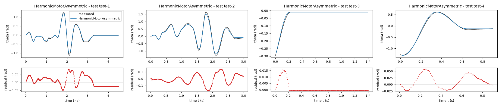
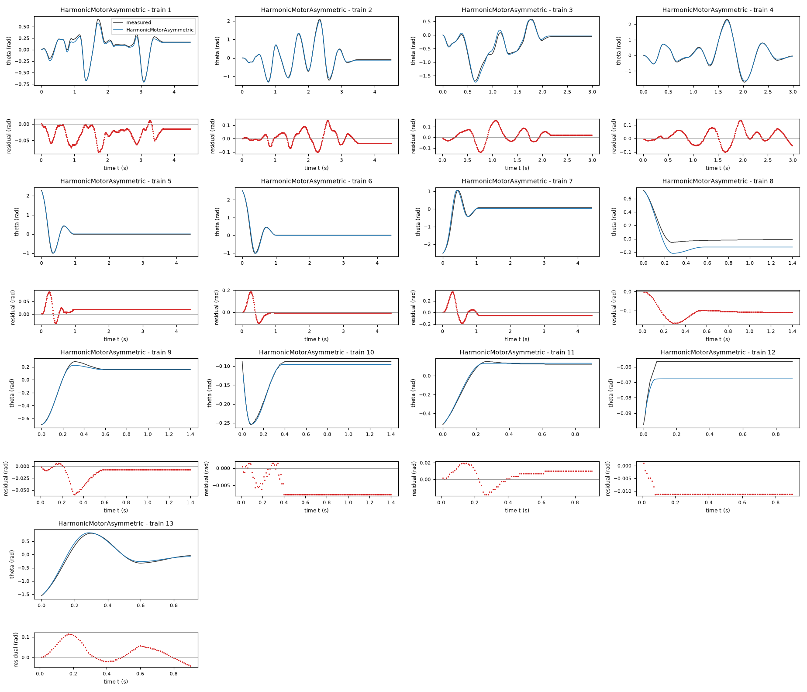
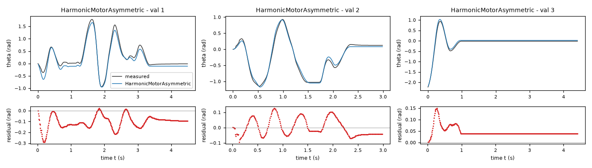
| Data | Trajectory | Scored samples | RMSE | NRMSE | R² | Failure |
|---|---|---|---|---|---|---|
| training data | 1 | 449 of 449 | 0.03396 | 0.1324 | 0.9825 | none |
| training data | 2 | 449 of 449 | 0.04554 | 0.06833 | 0.9953 | none |
| training data | 3 | 299 of 299 | 0.05838 | 0.1236 | 0.9847 | none |
| training data | 4 | 299 of 299 | 0.0491 | 0.05991 | 0.9964 | none |
| training data | 5 | 441 of 441 | 0.02334 | 0.06097 | 0.9963 | none |
| training data | 6 | 441 of 441 | 0.03908 | 0.08562 | 0.9927 | none |
| training data | 7 | 441 of 441 | 0.08741 | 0.1685 | 0.9716 | none |
| training data | 8 | 140 of 140 | 0.1113 | 0.6776 | 0.5409 | none |
| training data | 9 | 140 of 140 | 0.01896 | 0.08672 | 0.9925 | none |
| training data | 10 | 140 of 140 | 0.00665 | 0.1352 | 0.9817 | none |
| training data | 11 | 90 of 90 | 0.0105 | 0.06379 | 0.9959 | none |
| training data | 12 | 90 of 90 | 0.01086 | 2.129 | -3.532 | none |
| training data | 13 | 90 of 90 | 0.04897 | 0.09014 | 0.9919 | none |
| validation data | 1 | 449 of 449 | 0.1188 | 0.2173 | 0.9528 | none |
| validation data | 2 | 299 of 299 | 0.05538 | 0.09905 | 0.9902 | none |
| validation data | 3 | 441 of 441 | 0.05134 | 0.1366 | 0.9813 | none |
| test data | test-1 | 449 of 449 | 0.03295 | 0.08728 | 0.9924 | none |
| test data | test-2 | 299 of 299 | 0.07102 | 0.1149 | 0.9868 | none |
| test data | test-3 | 140 of 140 | 0.004207 | 0.07948 | 0.9937 | none |
| test data | test-4 | 90 of 90 | 0.0272 | 0.05152 | 0.9973 | none |
RMSE of theta in rad; NRMSE = RMSE / σ and R² = 1 − SSE / Σ(y[k] − μ)², with μ and σ the mean and the population standard deviation of the measured output on the scored samples.
g = 108.7 rad/s^2 (fitted), b = 1.808 1/s (fitted), cp = 19.48 rad/s^2 (fitted), k = 28.4 rad/(s^2 V) (fitted), tau = 0.009759 s (fitted), a = 0.1026 (fitted), cn = 22.58 rad/s^2 (fitted)theta: 0.05401 rad · validation error: 0.08543 rad · test error: 0.04789 radEquations as written in the model file
dtheta = omega
domega = k*u-g*sin(theta)*(1+a*cos(theta))-b*omega-Min(cp,Max(-cn,k*u-g*sin(theta)*(1+a*cos(theta))-b*omega+omega/tau))
Equations with the values substituted
Every parameter is replaced by its value with 4 significant digits.
Parameters and estimation
| Name | Value | Unit | Type | Description |
|---|---|---|---|---|
g | 108.673 | rad/s^2 | fitted | Restoring-acceleration scale; torque divided by unknown inertia. |
b | 1.80784 | 1/s | fitted | Positive linear viscous damping rate, including effective motor back EMF. |
cp | 19.4833 | rad/s^2 | fitted | Positive-direction dry-friction acceleration capacity; symmetric capacity when no negative-direction parameter is present. |
k | 28.3975 | rad/(s^2 V) | fitted | Positive voltage-to-acceleration gain, or zero-voltage slope when motor saturation is present. |
tau | 0.00975885 | s | fitted | Velocity-relaxation time in the static-friction projection; a numerical/constitutive regularization, not an identified electrical time constant. |
a | 0.102566 | - | fitted | Relative cosine modulation of sinusoidal restoring acceleration; represents a second angular harmonic, without assigning a specific mechanical source. |
cn | 22.5831 | rad/s^2 | fitted | Negative-direction dry-friction acceleration capacity. |
- Criterion minimized
Sum of squared open-loop angle errors (rad), pooled over all samples except the first in each trajectory, with equal weight per sample. This directly matches the intended long-horizon angle criterion and avoids treating centrally differenced acceleration as an exact torque measurement. Each run starts from its logged initial angle and angular velocity; input voltage is held constant for each integration interval of s, as specified in TASK.md.
- Data
Final coefficient fit: all trajectories and rows of
data/train.csvanddata/val.csv, with first rows used only as initial states. Validation data were deliberately included after preliminary train-only comparisons because there are few independent driven records. No test data were accessed. Separate train-only validation and leave-one-trajectory-out analyses are recorded inrefine_results.json; all within-trajectory ordering is preserved.- Method
Bound-constrained nonlinear least squares by the trust-region reflective method,
scipy.optimize.least_squares, with classical RK4 simulation implemented in NumPy/Numba. Every fitted parameter in this candidate was estimated jointly in the final supplied-data fit, with no parameter transferred as fixed from another candidate. Starting values were rad/s^2, 1/s, rad/s^2, rad/(s^2 V), s, , rad/s^2. The first four starts were rounded pilot moving-row derivative estimates; the regularization and extension starts were deliberately moderate physically admissible guesses. Bounds were rad/s^2, 1/s, rad/s^2, rad/(s^2 V), s, , rad/s^2. Positive dissipation/gain and bounded modulation enforce physical sign constraints; the relaxation lower bound limits stiffness at the prescribed integration step. For the compensated model the speed-width lower bound limits stiffness instead. The upper bounds prevent poorly identified extreme regimes, not claimed hardware limits. Jacobian-based variable scaling and relative finite-difference step were used; stopping tolerances were , , , with at most function evaluations per fit. These optimizer settings are dimensionless. No random numbers were used in estimation. A train-only fit and leave-one-trajectory-out fits were separate diagnostics and did not supply fixed coefficients to the final candidate. Cross-validation fits started from this candidate's full-data optimum, excluding the held trajectory from the objective; these are not independently initialized, untouched validation tests.- Script
refine_models.py
The agent's explanation
Continuous clipped-force static/Coulomb-friction model with velocity relaxation and asymmetric friction plus harmonic restoring torque. Physical dry-friction modeling follows the Coulomb/viscous and static-friction distinctions in B. Armstrong-Helouvry, Control of Machines with Friction (1991), cited from memory, not source-checked. The algebraic regularizations below are proposed approximations, not the exact algorithm of that reference.
theta is angle (rad), omega is angular velocity (rad/s), u is motor voltage (V), dtheta and domega are their time derivatives (rad/s and rad/s^2). Every constant is defined in the parameter rows. The unprojected acceleration is . Its voltage term drives the motor; its sine term is restoring; its linear velocity term is dissipative. adds a constrained second angular harmonic; a has an empirical mathematical role, not a uniquely determined mechanical cause. Subtracting gives bounded dry-friction acceleration. While the clip is inactive, the resulting law is ; at rest it exactly cancels admissible net force. During sufficiently fast motion the clipped term reaches its appropriate friction capacity.
The sinusoidal restoring term, linear motor gain, viscous damping, and bounded opposing dry-friction force came from physical reasoning. Pilot constrained linear derivative regressions in helper_analysis.py on moving training rows supported this starting structure. The static projection was proposed to cover the many resting samples, rather than applying at rest. Moving derivative residuals had a small directional bias, and open-loop residuals differed with angle. These observations motivated unequal directional friction capacities and a constrained second restoring harmonic. These are hand-selected physical/empirical extensions, not symbolic-regression discoveries. No unrestricted symbolic-regression search was used: compact constrained force-balance families allowed exact sign arguments, and the derivative diagnostics did not justify a high-complexity search.
Only effective torque/inertia ratios are identifiable; inertia, motor resistance, contact forces, and separate bearing/motor losses are unknown. Encoder quantization and numerical differentiation contaminate the derivative target. Actual training voltage spans approximately V; the required larger voltage domain is extrapolation. The low-speed transition is poorly identified, and is partly a numerical regularization for the specified RK4 step s from TASK.md. No hysteresis, electrical state, friction aging, or trajectory-specific calibration is represented. Some residual free-response endpoint differences remain; I did not add per-trajectory offsets because there must be one autonomous state law. At zero speed and zero voltage the unprojected force is restoring; clipping it to an interval containing zero preserves that sign or cancels it, establishing R2. The restoring factor remains positive by the fitted constraints. For fixed states the derivative of the clipped-force subtraction with respect to unprojected force is either zero or one, so composition with the monotone motor map establishes R3. enforces R1 identically. Supplied-data cross-validation RMSE was 0.073252 rad; final-fit pooled RMSE was 0.063452 rad, both computed on angle samples after each trajectory's first sample. The train-only fit scored 0.093533 rad on data/val.csv, before this final refit. Model structures were compared using the supplied data, so cross-validation is selection evidence, not an unbiased hidden-test estimate. Dense physical grids and stress runs in diagnostics.py supplement the sign arguments but do not prove global simulation accuracy.
Physical requirements
| Requirement | Statement | Outcome | Detail |
|---|---|---|---|
| R1 | proof | the quantity is identically zero on the domain | |
| R2 | inconclusive | no violation found at the 10000 sampled points (largest value of Q -0.0, tolerance 0.0); this is not a proof | |
| R3 | inconclusive | no violation found at the 10000 sampled points (largest value of Q 0.0, tolerance 0.0); this is not a proof |
Plots of simulated and measured theta, and errors per trajectory
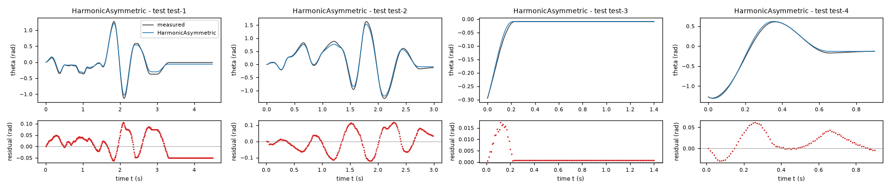
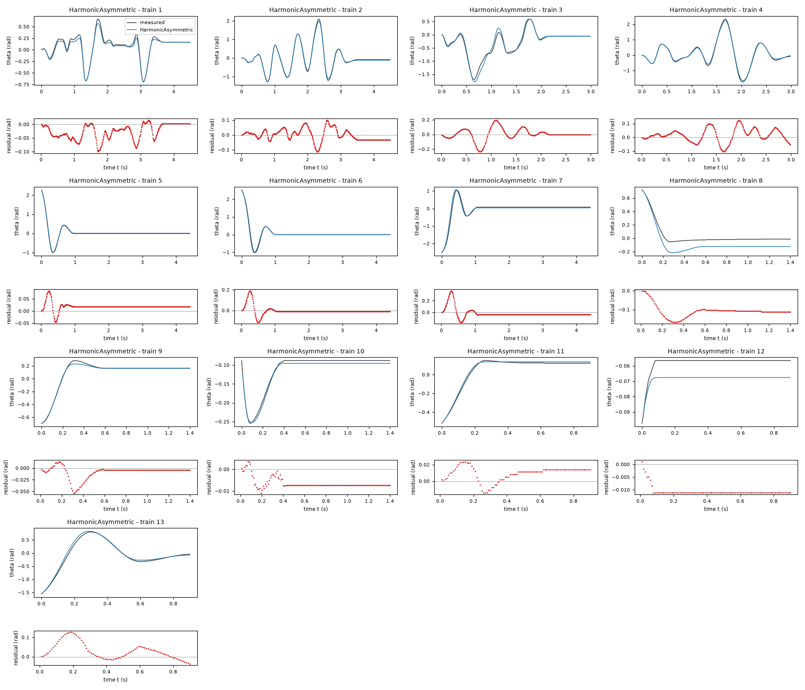
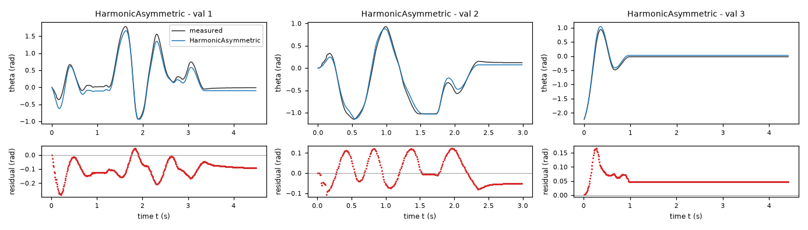
| Data | Trajectory | Scored samples | RMSE | NRMSE | R² | Failure |
|---|---|---|---|---|---|---|
| training data | 1 | 449 of 449 | 0.03742 | 0.1459 | 0.9787 | none |
| training data | 2 | 449 of 449 | 0.04028 | 0.06043 | 0.9963 | none |
| training data | 3 | 299 of 299 | 0.07816 | 0.1655 | 0.9726 | none |
| training data | 4 | 299 of 299 | 0.05037 | 0.06146 | 0.9962 | none |
| training data | 5 | 441 of 441 | 0.02353 | 0.06149 | 0.9962 | none |
| training data | 6 | 441 of 441 | 0.04079 | 0.08935 | 0.992 | none |
| training data | 7 | 441 of 441 | 0.08542 | 0.1646 | 0.9729 | none |
| training data | 8 | 140 of 140 | 0.113 | 0.6882 | 0.5264 | none |
| training data | 9 | 140 of 140 | 0.01545 | 0.07063 | 0.995 | none |
| training data | 10 | 140 of 140 | 0.00695 | 0.1413 | 0.98 | none |
| training data | 11 | 90 of 90 | 0.01292 | 0.07853 | 0.9938 | none |
| training data | 12 | 90 of 90 | 0.0107 | 2.097 | -3.396 | none |
| training data | 13 | 90 of 90 | 0.05223 | 0.09614 | 0.9908 | none |
| validation data | 1 | 449 of 449 | 0.1147 | 0.2098 | 0.956 | none |
| validation data | 2 | 299 of 299 | 0.06539 | 0.117 | 0.9863 | none |
| validation data | 3 | 441 of 441 | 0.05817 | 0.1548 | 0.976 | none |
| test data | test-1 | 449 of 449 | 0.04633 | 0.1227 | 0.9849 | none |
| test data | test-2 | 299 of 299 | 0.06361 | 0.1029 | 0.9894 | none |
| test data | test-3 | 140 of 140 | 0.004582 | 0.08656 | 0.9925 | none |
| test data | test-4 | 90 of 90 | 0.02722 | 0.05155 | 0.9973 | none |
RMSE of theta in rad; NRMSE = RMSE / σ and R² = 1 − SSE / Σ(y[k] − μ)², with μ and σ the mean and the population standard deviation of the measured output on the scored samples.
g = 117.4 rad/s^2 (fitted), b = 1.495 1/s (fitted), cp = 32.17 rad/s^2 (fitted), k = 29.49 rad/(s^2 V) (fitted), tau = 0.00668 s (fitted), eta = -0.3315 (fitted)theta: 0.05749 rad · validation error: 0.08697 rad · test error: 0.03018 radEquations as written in the model file
dtheta = omega
domega = k*u-g*sin(theta)-b*omega-Min(cp*(1+eta*cos(theta)),Max(-cp*(1+eta*cos(theta)),k*u-g*sin(theta)-b*omega+omega/tau))
Equations with the values substituted
Every parameter is replaced by its value with 4 significant digits.
Parameters and estimation
| Name | Value | Unit | Type | Description |
|---|---|---|---|---|
g | 117.423 | rad/s^2 | fitted | Restoring-acceleration scale; torque divided by unknown inertia. |
b | 1.49496 | 1/s | fitted | Positive linear viscous damping rate, including effective motor back EMF. |
cp | 32.1675 | rad/s^2 | fitted | Positive-direction dry-friction acceleration capacity; symmetric capacity when no negative-direction parameter is present. |
k | 29.4868 | rad/(s^2 V) | fitted | Positive voltage-to-acceleration gain, or zero-voltage slope when motor saturation is present. |
tau | 0.00668045 | s | fitted | Velocity-relaxation time in the static-friction projection; a numerical/constitutive regularization, not an identified electrical time constant. |
eta | -0.331475 | - | fitted | Relative cosine modulation of the dry-friction capacity; empirical periodic angular dependence. |
- Criterion minimized
Sum of squared open-loop angle errors (rad), pooled over all samples except the first in each trajectory, with equal weight per sample. This directly matches the intended long-horizon angle criterion and avoids treating centrally differenced acceleration as an exact torque measurement. Each run starts from its logged initial angle and angular velocity; input voltage is held constant for each integration interval of s, as specified in TASK.md.
- Data
Final coefficient fit: all trajectories and rows of
data/train.csvanddata/val.csv, with first rows used only as initial states. Validation data were deliberately included after preliminary train-only comparisons because there are few independent driven records. No test data were accessed. Separate train-only validation and leave-one-trajectory-out analyses are recorded inrefine_results.json; all within-trajectory ordering is preserved.- Method
Bound-constrained nonlinear least squares by the trust-region reflective method,
scipy.optimize.least_squares, with classical RK4 simulation implemented in NumPy/Numba. Every fitted parameter in this candidate was estimated jointly in the final supplied-data fit, with no parameter transferred as fixed from another candidate. Starting values were rad/s^2, 1/s, rad/s^2, rad/(s^2 V), s, . The first four starts were rounded pilot moving-row derivative estimates; the regularization and extension starts were deliberately moderate physically admissible guesses. Bounds were rad/s^2, 1/s, rad/s^2, rad/(s^2 V), s, . Positive dissipation/gain and bounded modulation enforce physical sign constraints; the relaxation lower bound limits stiffness at the prescribed integration step. For the compensated model the speed-width lower bound limits stiffness instead. The upper bounds prevent poorly identified extreme regimes, not claimed hardware limits. Jacobian-based variable scaling and relative finite-difference step were used; stopping tolerances were , , , with at most function evaluations per fit. These optimizer settings are dimensionless. No random numbers were used in estimation. A train-only fit and leave-one-trajectory-out fits were separate diagnostics and did not supply fixed coefficients to the final candidate. Cross-validation fits started from this candidate's full-data optimum, excluding the held trajectory from the objective; these are not independently initialized, untouched validation tests.- Script
refine_models.py
The agent's explanation
Continuous clipped-force static/Coulomb-friction model with velocity relaxation and periodically angle-dependent dry-friction capacity. Physical dry-friction modeling follows the Coulomb/viscous and static-friction distinctions in B. Armstrong-Helouvry, Control of Machines with Friction (1991), cited from memory, not source-checked. The algebraic regularizations below are proposed approximations, not the exact algorithm of that reference.
theta is angle (rad), omega is angular velocity (rad/s), u is motor voltage (V), dtheta and domega are their time derivatives (rad/s and rad/s^2). Every constant is defined in the parameter rows. The unprojected acceleration is . Its voltage term drives the motor; its sine term is restoring; its linear velocity term is dissipative. changes the positive dry-friction capacity with angle; the negative capacity has equal magnitude. Its mechanism is not identified. Subtracting gives bounded dry-friction acceleration. While the clip is inactive, the resulting law is ; at rest it exactly cancels admissible net force. During sufficiently fast motion the clipped term reaches its appropriate friction capacity.
The sinusoidal restoring term, linear motor gain, viscous damping, and bounded opposing dry-friction force came from physical reasoning. Pilot constrained linear derivative regressions in helper_analysis.py on moving training rows supported this starting structure. The static projection was proposed to cover the many resting samples, rather than applying at rest. Angle-binned residuals and unequal high-angle free responses motivated testing periodic angle-dependent dry-friction capacity as an alternative to modifying the restoring force. Positivity was imposed so the modulation cannot turn friction into propulsion. No unrestricted symbolic-regression search was used: compact constrained force-balance families allowed exact sign arguments, and the derivative diagnostics did not justify a high-complexity search.
Only effective torque/inertia ratios are identifiable; inertia, motor resistance, contact forces, and separate bearing/motor losses are unknown. Encoder quantization and numerical differentiation contaminate the derivative target. Actual training voltage spans approximately V; the required larger voltage domain is extrapolation. The low-speed transition is poorly identified, and is partly a numerical regularization for the specified RK4 step s from TASK.md. No hysteresis, electrical state, friction aging, or trajectory-specific calibration is represented. Some residual free-response endpoint differences remain; I did not add per-trajectory offsets because there must be one autonomous state law. At zero speed and zero voltage the unprojected force is restoring; clipping it to an interval containing zero preserves that sign or cancels it, establishing R2. The restoring factor remains positive by the fitted constraints. For fixed states the derivative of the clipped-force subtraction with respect to unprojected force is either zero or one, so composition with the monotone motor map establishes R3. enforces R1 identically. Supplied-data cross-validation RMSE was 0.079319 rad; final-fit pooled RMSE was 0.066202 rad, both computed on angle samples after each trajectory's first sample. The train-only fit scored 0.090862 rad on data/val.csv, before this final refit. Model structures were compared using the supplied data, so cross-validation is selection evidence, not an unbiased hidden-test estimate. Dense physical grids and stress runs in diagnostics.py supplement the sign arguments but do not prove global simulation accuracy.
Physical requirements
| Requirement | Statement | Outcome | Detail |
|---|---|---|---|
| R1 | proof | the quantity is identically zero on the domain | |
| R2 | inconclusive | no violation found at the 10000 sampled points (largest value of Q -0.0, tolerance 0.0); this is not a proof | |
| R3 | inconclusive | no violation found at the 10000 sampled points (largest value of Q 0.0, tolerance 0.0); this is not a proof |
Plots of simulated and measured theta, and errors per trajectory
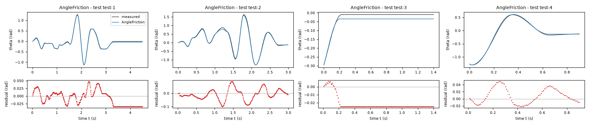
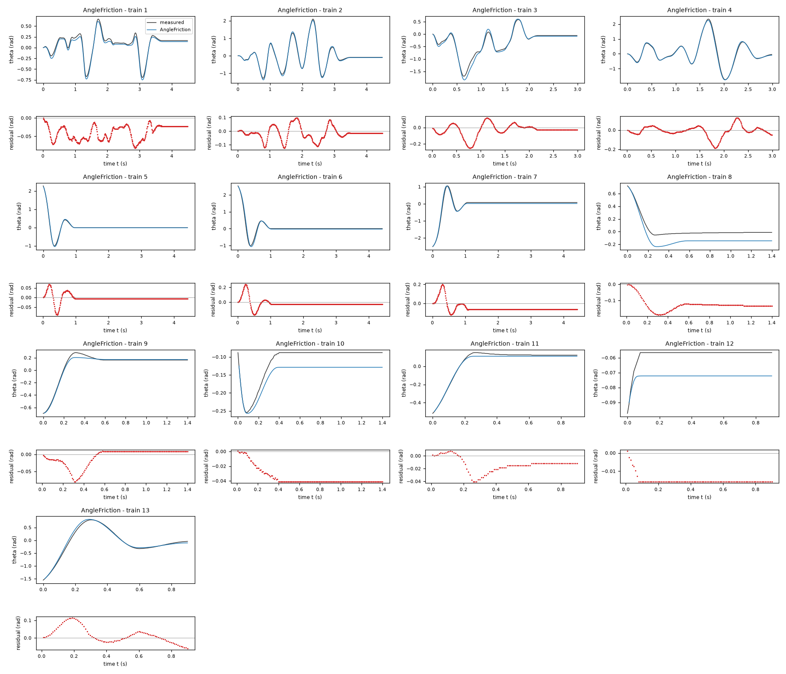
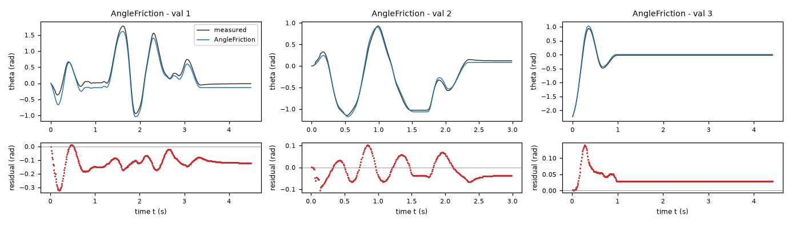
| Data | Trajectory | Scored samples | RMSE | NRMSE | R² | Failure |
|---|---|---|---|---|---|---|
| training data | 1 | 449 of 449 | 0.04339 | 0.1692 | 0.9714 | none |
| training data | 2 | 449 of 449 | 0.04962 | 0.07445 | 0.9945 | none |
| training data | 3 | 299 of 299 | 0.07808 | 0.1653 | 0.9727 | none |
| training data | 4 | 299 of 299 | 0.05744 | 0.07008 | 0.9951 | none |
| training data | 5 | 441 of 441 | 0.02073 | 0.05415 | 0.9971 | none |
| training data | 6 | 441 of 441 | 0.05964 | 0.1307 | 0.9829 | none |
| training data | 7 | 441 of 441 | 0.06917 | 0.1333 | 0.9822 | none |
| training data | 8 | 140 of 140 | 0.1318 | 0.8027 | 0.3557 | none |
| training data | 9 | 140 of 140 | 0.02561 | 0.1171 | 0.9863 | none |
| training data | 10 | 140 of 140 | 0.03692 | 0.751 | 0.4361 | none |
| training data | 11 | 90 of 90 | 0.01788 | 0.1086 | 0.9882 | none |
| training data | 12 | 90 of 90 | 0.01519 | 2.976 | -7.859 | none |
| training data | 13 | 90 of 90 | 0.04765 | 0.0877 | 0.9923 | none |
| validation data | 1 | 449 of 449 | 0.13 | 0.2378 | 0.9434 | none |
| validation data | 2 | 299 of 299 | 0.04647 | 0.08311 | 0.9931 | none |
| validation data | 3 | 441 of 441 | 0.04136 | 0.11 | 0.9879 | none |
| test data | test-1 | 449 of 449 | 0.02393 | 0.06337 | 0.996 | none |
| test data | test-2 | 299 of 299 | 0.04143 | 0.06704 | 0.9955 | none |
| test data | test-3 | 140 of 140 | 0.02307 | 0.4359 | 0.81 | none |
| test data | test-4 | 90 of 90 | 0.02257 | 0.04275 | 0.9982 | none |
RMSE of theta in rad; NRMSE = RMSE / σ and R² = 1 − SSE / Σ(y[k] − μ)², with μ and σ the mean and the population standard deviation of the measured output on the scored samples.
g = 112.4 rad/s^2 (fitted), b = 1.652 1/s (fitted), cp = 9.408 rad/s^2 (fitted), k = 28.67 rad/(s^2 V) (fitted), tau = 0.004755 s (fitted), d = 12.5 rad/s^2 (fitted), vd = 0.715 rad/s (fitted)theta: 0.06488 rad · validation error: 0.0832 rad · test error: 0.0434 radEquations as written in the model file
dtheta = omega
domega = k*u-g*sin(theta)-b*omega-d*tanh(omega/vd)-Min(cp,Max(-cp,k*u-g*sin(theta)-b*omega-d*tanh(omega/vd)+omega/tau))
Equations with the values substituted
Every parameter is replaced by its value with 4 significant digits.
Parameters and estimation
| Name | Value | Unit | Type | Description |
|---|---|---|---|---|
g | 112.411 | rad/s^2 | fitted | Restoring-acceleration scale; torque divided by unknown inertia. |
b | 1.65182 | 1/s | fitted | Positive linear viscous damping rate, including effective motor back EMF. |
cp | 9.40787 | rad/s^2 | fitted | Positive-direction dry-friction acceleration capacity; symmetric capacity when no negative-direction parameter is present. |
k | 28.6654 | rad/(s^2 V) | fitted | Positive voltage-to-acceleration gain, or zero-voltage slope when motor saturation is present. |
tau | 0.00475458 | s | fitted | Velocity-relaxation time in the static-friction projection; a numerical/constitutive regularization, not an identified electrical time constant. |
d | 12.497 | rad/s^2 | fitted | Additional bounded odd velocity-opposing acceleration amplitude. |
vd | 0.714984 | rad/s | fitted | Speed scale of additional saturating damping. |
- Criterion minimized
Sum of squared open-loop angle errors (rad), pooled over all samples except the first in each trajectory, with equal weight per sample. This directly matches the intended long-horizon angle criterion and avoids treating centrally differenced acceleration as an exact torque measurement. Each run starts from its logged initial angle and angular velocity; input voltage is held constant for each integration interval of s, as specified in TASK.md.
- Data
Final coefficient fit: all trajectories and rows of
data/train.csvanddata/val.csv, with first rows used only as initial states. Validation data were deliberately included after preliminary train-only comparisons because there are few independent driven records. No test data were accessed. Separate train-only validation and leave-one-trajectory-out analyses are recorded inrefine_results.json; all within-trajectory ordering is preserved.- Method
Bound-constrained nonlinear least squares by the trust-region reflective method,
scipy.optimize.least_squares, with classical RK4 simulation implemented in NumPy/Numba. Every fitted parameter in this candidate was estimated jointly in the final supplied-data fit, with no parameter transferred as fixed from another candidate. Starting values were rad/s^2, 1/s, rad/s^2, rad/(s^2 V), s, rad/s^2, rad/s. The first four starts were rounded pilot moving-row derivative estimates; the regularization and extension starts were deliberately moderate physically admissible guesses. Bounds were rad/s^2, 1/s, rad/s^2, rad/(s^2 V), s, rad/s^2, rad/s. Positive dissipation/gain and bounded modulation enforce physical sign constraints; the relaxation lower bound limits stiffness at the prescribed integration step. For the compensated model the speed-width lower bound limits stiffness instead. The upper bounds prevent poorly identified extreme regimes, not claimed hardware limits. Jacobian-based variable scaling and relative finite-difference step were used; stopping tolerances were , , , with at most function evaluations per fit. These optimizer settings are dimensionless. No random numbers were used in estimation. A train-only fit and leave-one-trajectory-out fits were separate diagnostics and did not supply fixed coefficients to the final candidate. Cross-validation fits started from this candidate's full-data optimum, excluding the held trajectory from the objective; these are not independently initialized, untouched validation tests.- Script
refine_models.py
The agent's explanation
Continuous clipped-force static/Coulomb-friction model with velocity relaxation and bounded velocity-dependent damping. Physical dry-friction modeling follows the Coulomb/viscous and static-friction distinctions in B. Armstrong-Helouvry, Control of Machines with Friction (1991), cited from memory, not source-checked. The algebraic regularizations below are proposed approximations, not the exact algorithm of that reference.
theta is angle (rad), omega is angular velocity (rad/s), u is motor voltage (V), dtheta and domega are their time derivatives (rad/s and rad/s^2). Every constant is defined in the parameter rows. The unprojected acceleration is . Its voltage term drives the motor; its sine term is restoring; its linear velocity term is dissipative. is bounded, odd, velocity-opposing damping. Subtracting gives bounded dry-friction acceleration. While the clip is inactive, the resulting law is ; at rest it exactly cancels admissible net force. During sufficiently fast motion the clipped term reaches its appropriate friction capacity.
The sinusoidal restoring term, linear motor gain, viscous damping, and bounded opposing dry-friction force came from physical reasoning. Pilot constrained linear derivative regressions in helper_analysis.py on moving training rows supported this starting structure. The static projection was proposed to cover the many resting samples, rather than applying at rest. Low-speed residuals and derivative fits that favored reduced high-speed damping motivated bounded velocity-dependent damping. I rejected negative quadratic damping because it can become anti-damping outside the observed speed range; remains dissipative. This resembles a static velocity-dependent friction approximation; it does not identify dynamic bristle states. No unrestricted symbolic-regression search was used: compact constrained force-balance families allowed exact sign arguments, and the derivative diagnostics did not justify a high-complexity search.
Only effective torque/inertia ratios are identifiable; inertia, motor resistance, contact forces, and separate bearing/motor losses are unknown. Encoder quantization and numerical differentiation contaminate the derivative target. Actual training voltage spans approximately V; the required larger voltage domain is extrapolation. The low-speed transition is poorly identified, and is partly a numerical regularization for the specified RK4 step s from TASK.md. No hysteresis, electrical state, friction aging, or trajectory-specific calibration is represented. Some residual free-response endpoint differences remain; I did not add per-trajectory offsets because there must be one autonomous state law. At zero speed and zero voltage the unprojected force is restoring; clipping it to an interval containing zero preserves that sign or cancels it, establishing R2. The restoring factor remains positive by the fitted constraints. For fixed states the derivative of the clipped-force subtraction with respect to unprojected force is either zero or one, so composition with the monotone motor map establishes R3. enforces R1 identically. Supplied-data cross-validation RMSE was 0.077520 rad; final-fit pooled RMSE was 0.069970 rad, both computed on angle samples after each trajectory's first sample. The train-only fit scored 0.086356 rad on data/val.csv, before this final refit. Model structures were compared using the supplied data, so cross-validation is selection evidence, not an unbiased hidden-test estimate. Dense physical grids and stress runs in diagnostics.py supplement the sign arguments but do not prove global simulation accuracy.
Physical requirements
| Requirement | Statement | Outcome | Detail |
|---|---|---|---|
| R1 | proof | the quantity is identically zero on the domain | |
| R2 | inconclusive | no violation found at the 10000 sampled points (largest value of Q 0.0, tolerance 0.0); this is not a proof | |
| R3 | inconclusive | no violation found at the 10000 sampled points (largest value of Q 0.0, tolerance 0.0); this is not a proof |
Plots of simulated and measured theta, and errors per trajectory
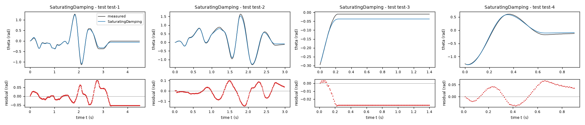
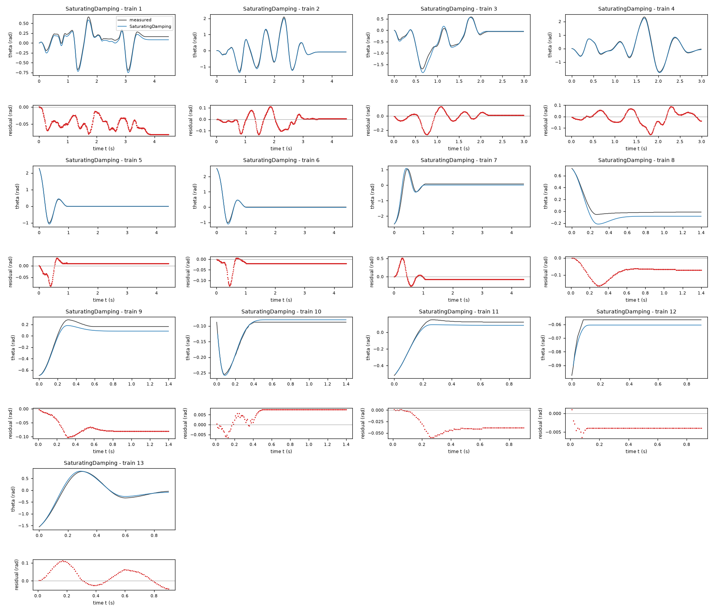
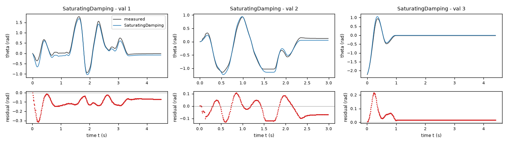
| Data | Trajectory | Scored samples | RMSE | NRMSE | R² | Failure |
|---|---|---|---|---|---|---|
| training data | 1 | 449 of 449 | 0.05645 | 0.2201 | 0.9516 | none |
| training data | 2 | 449 of 449 | 0.05102 | 0.07656 | 0.9941 | none |
| training data | 3 | 299 of 299 | 0.07647 | 0.1619 | 0.9738 | none |
| training data | 4 | 299 of 299 | 0.05338 | 0.06514 | 0.9958 | none |
| training data | 5 | 441 of 441 | 0.01941 | 0.0507 | 0.9974 | none |
| training data | 6 | 441 of 441 | 0.02948 | 0.06458 | 0.9958 | none |
| training data | 7 | 441 of 441 | 0.1245 | 0.24 | 0.9424 | none |
| training data | 8 | 140 of 140 | 0.08618 | 0.5248 | 0.7246 | none |
| training data | 9 | 140 of 140 | 0.07415 | 0.3391 | 0.885 | none |
| training data | 10 | 140 of 140 | 0.006629 | 0.1348 | 0.9818 | none |
| training data | 11 | 90 of 90 | 0.03835 | 0.233 | 0.9457 | none |
| training data | 12 | 90 of 90 | 0.003933 | 0.7709 | 0.4058 | none |
| training data | 13 | 90 of 90 | 0.05076 | 0.09342 | 0.9913 | none |
| validation data | 1 | 449 of 449 | 0.1135 | 0.2076 | 0.9569 | none |
| validation data | 2 | 299 of 299 | 0.06964 | 0.1246 | 0.9845 | none |
| validation data | 3 | 441 of 441 | 0.04746 | 0.1263 | 0.9841 | none |
| test data | test-1 | 449 of 449 | 0.0382 | 0.1012 | 0.9898 | none |
| test data | test-2 | 299 of 299 | 0.05698 | 0.0922 | 0.9915 | none |
| test data | test-3 | 140 of 140 | 0.02589 | 0.4891 | 0.7608 | none |
| test data | test-4 | 90 of 90 | 0.03683 | 0.06975 | 0.9951 | none |
RMSE of theta in rad; NRMSE = RMSE / σ and R² = 1 − SSE / Σ(y[k] − μ)², with μ and σ the mean and the population standard deviation of the measured output on the scored samples.
g = 112.5 rad/s^2 (fitted), b = 1.852 1/s (fitted), cp = 20.27 rad/s^2 (fitted), k = 28.67 rad/(s^2 V) (fitted), tau = 0.004043 s (fitted)theta: 0.06669 rad · validation error: 0.09053 rad · test error: 0.03935 radEquations as written in the model file
dtheta = omega
domega = k*u-g*sin(theta)-b*omega-Min(cp,Max(-cp,k*u-g*sin(theta)-b*omega+omega/tau))
Equations with the values substituted
Every parameter is replaced by its value with 4 significant digits.
Parameters and estimation
| Name | Value | Unit | Type | Description |
|---|---|---|---|---|
g | 112.52 | rad/s^2 | fitted | Restoring-acceleration scale; torque divided by unknown inertia. |
b | 1.85209 | 1/s | fitted | Positive linear viscous damping rate, including effective motor back EMF. |
cp | 20.2714 | rad/s^2 | fitted | Positive-direction dry-friction acceleration capacity; symmetric capacity when no negative-direction parameter is present. |
k | 28.6651 | rad/(s^2 V) | fitted | Positive voltage-to-acceleration gain, or zero-voltage slope when motor saturation is present. |
tau | 0.00404335 | s | fitted | Velocity-relaxation time in the static-friction projection; a numerical/constitutive regularization, not an identified electrical time constant. |
- Criterion minimized
Sum of squared open-loop angle errors (rad), pooled over all samples except the first in each trajectory, with equal weight per sample. This directly matches the intended long-horizon angle criterion and avoids treating centrally differenced acceleration as an exact torque measurement. Each run starts from its logged initial angle and angular velocity; input voltage is held constant for each integration interval of s, as specified in TASK.md.
- Data
Final coefficient fit: all trajectories and rows of
data/train.csvanddata/val.csv, with first rows used only as initial states. Validation data were deliberately included after preliminary train-only comparisons because there are few independent driven records. No test data were accessed. Separate train-only validation and leave-one-trajectory-out analyses are recorded inrefine_results.json; all within-trajectory ordering is preserved.- Method
Bound-constrained nonlinear least squares by the trust-region reflective method,
scipy.optimize.least_squares, with classical RK4 simulation implemented in NumPy/Numba. Every fitted parameter in this candidate was estimated jointly in the final supplied-data fit, with no parameter transferred as fixed from another candidate. Starting values were rad/s^2, 1/s, rad/s^2, rad/(s^2 V), s. The first four starts were rounded pilot moving-row derivative estimates; the regularization and extension starts were deliberately moderate physically admissible guesses. Bounds were rad/s^2, 1/s, rad/s^2, rad/(s^2 V), s. Positive dissipation/gain and bounded modulation enforce physical sign constraints; the relaxation lower bound limits stiffness at the prescribed integration step. For the compensated model the speed-width lower bound limits stiffness instead. The upper bounds prevent poorly identified extreme regimes, not claimed hardware limits. Jacobian-based variable scaling and relative finite-difference step were used; stopping tolerances were , , , with at most function evaluations per fit. These optimizer settings are dimensionless. No random numbers were used in estimation. A train-only fit and leave-one-trajectory-out fits were separate diagnostics and did not supply fixed coefficients to the final candidate. Cross-validation fits started from this candidate's full-data optimum, excluding the held trajectory from the objective; these are not independently initialized, untouched validation tests.- Script
refine_models.py
The agent's explanation
Continuous clipped-force static/Coulomb-friction model with velocity relaxation. Physical dry-friction modeling follows the Coulomb/viscous and static-friction distinctions in B. Armstrong-Helouvry, Control of Machines with Friction (1991), cited from memory, not source-checked. The algebraic regularizations below are proposed approximations, not the exact algorithm of that reference.
theta is angle (rad), omega is angular velocity (rad/s), u is motor voltage (V), dtheta and domega are their time derivatives (rad/s and rad/s^2). Every constant is defined in the parameter rows. The unprojected acceleration is . Its voltage term drives the motor; its sine term is restoring; its linear velocity term is dissipative. Subtracting gives bounded dry-friction acceleration. While the clip is inactive, the resulting law is ; at rest it exactly cancels admissible net force. During sufficiently fast motion the clipped term reaches its appropriate friction capacity.
The sinusoidal restoring term, linear motor gain, viscous damping, and bounded opposing dry-friction force came from physical reasoning. Pilot constrained linear derivative regressions in helper_analysis.py on moving training rows supported this starting structure. The static projection was proposed to cover the many resting samples, rather than applying at rest. No unrestricted symbolic-regression search was used: compact constrained force-balance families allowed exact sign arguments, and the derivative diagnostics did not justify a high-complexity search.
Only effective torque/inertia ratios are identifiable; inertia, motor resistance, contact forces, and separate bearing/motor losses are unknown. Encoder quantization and numerical differentiation contaminate the derivative target. Actual training voltage spans approximately V; the required larger voltage domain is extrapolation. The low-speed transition is poorly identified, and is partly a numerical regularization for the specified RK4 step s from TASK.md. No hysteresis, electrical state, friction aging, or trajectory-specific calibration is represented. Some residual free-response endpoint differences remain; I did not add per-trajectory offsets because there must be one autonomous state law. At zero speed and zero voltage the unprojected force is restoring; clipping it to an interval containing zero preserves that sign or cancels it, establishing R2. The restoring factor remains positive by the fitted constraints. For fixed states the derivative of the clipped-force subtraction with respect to unprojected force is either zero or one, so composition with the monotone motor map establishes R3. enforces R1 identically. Supplied-data cross-validation RMSE was 0.081220 rad; final-fit pooled RMSE was 0.073455 rad, both computed on angle samples after each trajectory's first sample. The train-only fit scored 0.095671 rad on data/val.csv, before this final refit. Model structures were compared using the supplied data, so cross-validation is selection evidence, not an unbiased hidden-test estimate. Dense physical grids and stress runs in diagnostics.py supplement the sign arguments but do not prove global simulation accuracy.
Physical requirements
| Requirement | Statement | Outcome | Detail |
|---|---|---|---|
| R1 | proof | the quantity is identically zero on the domain | |
| R2 | inconclusive | no violation found at the 10000 sampled points (largest value of Q -0.0, tolerance 0.0); this is not a proof | |
| R3 | inconclusive | no violation found at the 10000 sampled points (largest value of Q 0.0, tolerance 0.0); this is not a proof |
Plots of simulated and measured theta, and errors per trajectory
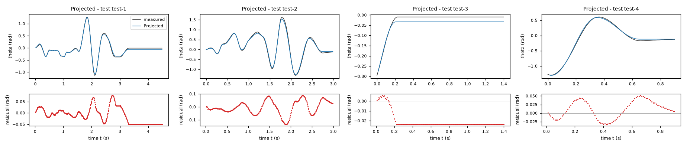
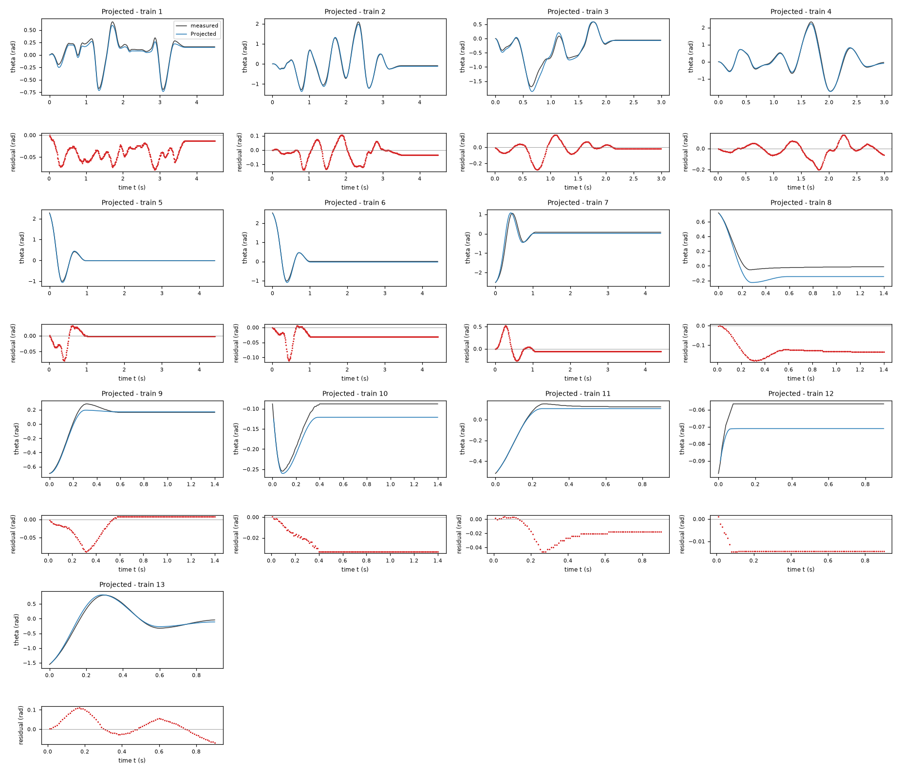
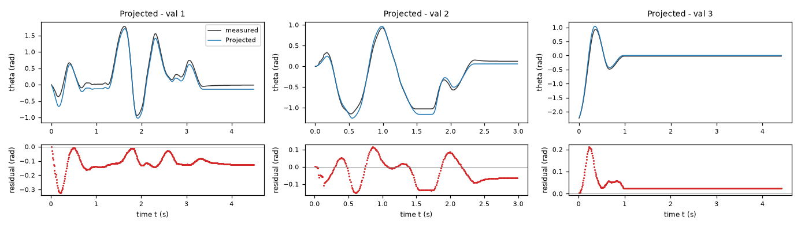
| Data | Trajectory | Scored samples | RMSE | NRMSE | R² | Failure |
|---|---|---|---|---|---|---|
| training data | 1 | 449 of 449 | 0.04131 | 0.161 | 0.9741 | none |
| training data | 2 | 449 of 449 | 0.05658 | 0.0849 | 0.9928 | none |
| training data | 3 | 299 of 299 | 0.08236 | 0.1744 | 0.9696 | none |
| training data | 4 | 299 of 299 | 0.06403 | 0.07813 | 0.9939 | none |
| training data | 5 | 441 of 441 | 0.01614 | 0.04218 | 0.9982 | none |
| training data | 6 | 441 of 441 | 0.03389 | 0.07424 | 0.9945 | none |
| training data | 7 | 441 of 441 | 0.1226 | 0.2363 | 0.9442 | none |
| training data | 8 | 140 of 140 | 0.1299 | 0.7912 | 0.374 | none |
| training data | 9 | 140 of 140 | 0.02975 | 0.1361 | 0.9815 | none |
| training data | 10 | 140 of 140 | 0.0298 | 0.6061 | 0.6327 | none |
| training data | 11 | 90 of 90 | 0.02262 | 0.1375 | 0.9811 | none |
| training data | 12 | 90 of 90 | 0.01406 | 2.755 | -6.589 | none |
| training data | 13 | 90 of 90 | 0.0496 | 0.0913 | 0.9917 | none |
| validation data | 1 | 449 of 449 | 0.1251 | 0.2288 | 0.9476 | none |
| validation data | 2 | 299 of 299 | 0.07431 | 0.1329 | 0.9823 | none |
| validation data | 3 | 441 of 441 | 0.04916 | 0.1308 | 0.9829 | none |
| test data | test-1 | 449 of 449 | 0.03546 | 0.09392 | 0.9912 | none |
| test data | test-2 | 299 of 299 | 0.05212 | 0.08432 | 0.9929 | none |
| test data | test-3 | 140 of 140 | 0.02215 | 0.4185 | 0.8249 | none |
| test data | test-4 | 90 of 90 | 0.02765 | 0.05236 | 0.9973 | none |
RMSE of theta in rad; NRMSE = RMSE / σ and R² = 1 − SSE / Σ(y[k] − μ)², with μ and σ the mean and the population standard deviation of the measured output on the scored samples.
g = 113.1 rad/s^2 (fitted), b = 1.884 1/s (fitted), cp = 20.36 rad/s^2 (fitted), k = 28.9 rad/(s^2 V) (fitted), v = 0.2505 rad/s (fitted)theta: 0.07063 rad · validation error: 0.08886 rad · test error: 0.03903 radEquations as written in the model file
dtheta = omega
domega = k*u-g*sin(theta)-b*omega-cp*tanh(omega/v)-exp(-(omega/v)**2)*Min(cp,Max(-cp,k*u-g*sin(theta)-b*omega))
Equations with the values substituted
Every parameter is replaced by its value with 4 significant digits.
Parameters and estimation
| Name | Value | Unit | Type | Description |
|---|---|---|---|---|
g | 113.137 | rad/s^2 | fitted | Restoring-acceleration scale; torque divided by unknown inertia. |
b | 1.88374 | 1/s | fitted | Positive linear viscous damping rate, including effective motor back EMF. |
cp | 20.3604 | rad/s^2 | fitted | Positive-direction dry-friction acceleration capacity; symmetric capacity when no negative-direction parameter is present. |
k | 28.9043 | rad/(s^2 V) | fitted | Positive voltage-to-acceleration gain, or zero-voltage slope when motor saturation is present. |
v | 0.250453 | rad/s | fitted | Speed width of the smooth dry-friction and rest-compensation transition. |
- Criterion minimized
Sum of squared open-loop angle errors (rad), pooled over all samples except the first in each trajectory, with equal weight per sample. This directly matches the intended long-horizon angle criterion and avoids treating centrally differenced acceleration as an exact torque measurement. Each run starts from its logged initial angle and angular velocity; input voltage is held constant for each integration interval of s, as specified in TASK.md.
- Data
Final coefficient fit: all trajectories and rows of
data/train.csvanddata/val.csv, with first rows used only as initial states. Validation data were deliberately included after preliminary train-only comparisons because there are few independent driven records. No test data were accessed. Separate train-only validation and leave-one-trajectory-out analyses are recorded inrefine_results.json; all within-trajectory ordering is preserved.- Method
Bound-constrained nonlinear least squares by the trust-region reflective method,
scipy.optimize.least_squares, with classical RK4 simulation implemented in NumPy/Numba. Every fitted parameter in this candidate was estimated jointly in the final supplied-data fit, with no parameter transferred as fixed from another candidate. Starting values were rad/s^2, 1/s, rad/s^2, rad/(s^2 V), rad/s. The first four starts were rounded pilot moving-row derivative estimates; the regularization and extension starts were deliberately moderate physically admissible guesses. Bounds were rad/s^2, 1/s, rad/s^2, rad/(s^2 V), rad/s. Positive dissipation/gain and bounded modulation enforce physical sign constraints; the relaxation lower bound limits stiffness at the prescribed integration step. For the compensated model the speed-width lower bound limits stiffness instead. The upper bounds prevent poorly identified extreme regimes, not claimed hardware limits. Jacobian-based variable scaling and relative finite-difference step were used; stopping tolerances were , , , with at most function evaluations per fit. These optimizer settings are dimensionless. No random numbers were used in estimation. A train-only fit and leave-one-trajectory-out fits were separate diagnostics and did not supply fixed coefficients to the final candidate. Cross-validation fits started from this candidate's full-data optimum, excluding the held trajectory from the objective; these are not independently initialized, untouched validation tests.- Script
refine_models.py
The agent's explanation
Smooth Coulomb/viscous friction with explicit Gaussian-weighted static-force compensation. Physical dry-friction modeling follows the Coulomb/viscous and static-friction distinctions in B. Armstrong-Helouvry, Control of Machines with Friction (1991), cited from memory, not source-checked. The algebraic regularizations below are proposed approximations, not the exact algorithm of that reference.
theta is angle (rad), omega is angular velocity (rad/s), u is motor voltage (V), dtheta and domega are their time derivatives (rad/s and rad/s^2). g, b, cp, k, and v are defined by the parameter rows. drives the motor, restores the hanging equilibrium, and dissipates motion. is smooth moving friction. cancels admissible net force exactly at zero speed and fades during motion. This Gaussian fade is a mathematical interpolation, not an independently identified microscopic law.
The sinusoidal restoring term, linear motor gain, viscous damping, and bounded opposing dry-friction force came from physical reasoning. Pilot constrained linear derivative regressions in helper_analysis.py on moving training rows supported this starting structure. The static projection was proposed to cover the many resting samples, rather than applying at rest. A plain hyperbolic-tangent Coulomb law simulated reasonably but slowly crept toward zero instead of retaining nonzero resting angles. It was excluded from the submitted pool. The Gaussian rest-force cancellation is a proposed smooth alternative to the clipped velocity-relaxation projection. No unrestricted symbolic-regression search was used: compact constrained force-balance families allowed exact sign arguments, and the derivative diagnostics did not justify a high-complexity search.
Only effective torque/inertia ratios are identifiable; inertia, motor resistance, contact forces, and separate bearing/motor losses are unknown. Encoder quantization and numerical differentiation contaminate the derivative target. Actual training voltage spans approximately V; the required larger voltage domain is extrapolation. The low-speed transition is poorly identified, and is partly a numerical regularization for the specified RK4 step s from TASK.md. No hysteresis, electrical state, friction aging, or trajectory-specific calibration is represented. Some residual free-response endpoint differences remain; I did not add per-trajectory offsets because there must be one autonomous state law. At zero speed the acceleration is the restoring force minus its symmetric clip, which preserves its sign or makes it zero. The voltage slope is k outside the force clip and inside it, hence never negative. enforces R1 identically. Supplied-data cross-validation RMSE was 0.085209 rad; final-fit pooled RMSE was 0.075661 rad, both computed on angle samples after each trajectory's first sample. The train-only fit scored 0.097399 rad on data/val.csv, before this final refit. Model structures were compared using the supplied data, so cross-validation is selection evidence, not an unbiased hidden-test estimate. Dense physical grids and stress runs in diagnostics.py supplement the sign arguments but do not prove global simulation accuracy.
Physical requirements
| Requirement | Statement | Outcome | Detail |
|---|---|---|---|
| R1 | proof | the quantity is identically zero on the domain | |
| R2 | inconclusive | no violation found at the 10000 sampled points (largest value of Q -0.0, tolerance 0.0); this is not a proof | |
| R3 | inconclusive | no violation found at the 10000 sampled points (largest value of Q -0.426150955305431, tolerance 0.0); this is not a proof |
Plots of simulated and measured theta, and errors per trajectory
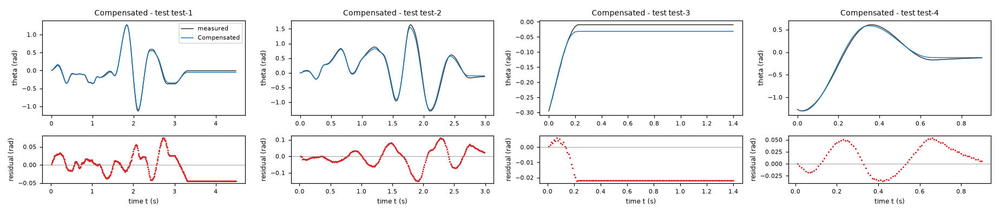
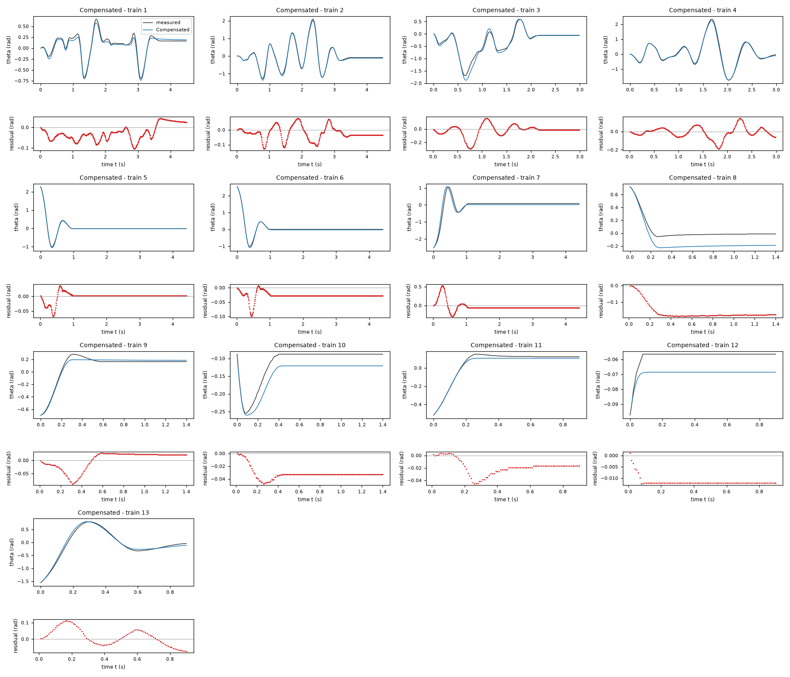
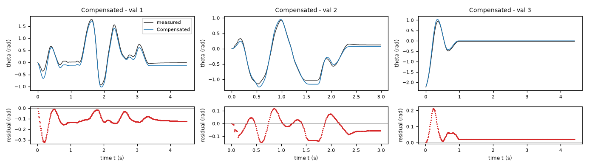
| Data | Trajectory | Scored samples | RMSE | NRMSE | R² | Failure |
|---|---|---|---|---|---|---|
| training data | 1 | 449 of 449 | 0.04572 | 0.1783 | 0.9682 | none |
| training data | 2 | 449 of 449 | 0.04901 | 0.07354 | 0.9946 | none |
| training data | 3 | 299 of 299 | 0.08788 | 0.1861 | 0.9654 | none |
| training data | 4 | 299 of 299 | 0.06253 | 0.0763 | 0.9942 | none |
| training data | 5 | 441 of 441 | 0.01454 | 0.038 | 0.9986 | none |
| training data | 6 | 441 of 441 | 0.03067 | 0.06719 | 0.9955 | none |
| training data | 7 | 441 of 441 | 0.1256 | 0.2421 | 0.9414 | none |
| training data | 8 | 140 of 140 | 0.1675 | 1.02 | -0.04062 | none |
| training data | 9 | 140 of 140 | 0.03346 | 0.153 | 0.9766 | none |
| training data | 10 | 140 of 140 | 0.03303 | 0.6718 | 0.5487 | none |
| training data | 11 | 90 of 90 | 0.02185 | 0.1328 | 0.9824 | none |
| training data | 12 | 90 of 90 | 0.01171 | 2.295 | -4.265 | none |
| training data | 13 | 90 of 90 | 0.05257 | 0.09677 | 0.9906 | none |
| validation data | 1 | 449 of 449 | 0.1237 | 0.2262 | 0.9488 | none |
| validation data | 2 | 299 of 299 | 0.07076 | 0.1266 | 0.984 | none |
| validation data | 3 | 441 of 441 | 0.04809 | 0.1279 | 0.9836 | none |
| test data | test-1 | 449 of 449 | 0.03188 | 0.08443 | 0.9929 | none |
| test data | test-2 | 299 of 299 | 0.05473 | 0.08855 | 0.9922 | none |
| test data | test-3 | 140 of 140 | 0.02037 | 0.3848 | 0.8519 | none |
| test data | test-4 | 90 of 90 | 0.02982 | 0.05648 | 0.9968 | none |
RMSE of theta in rad; NRMSE = RMSE / σ and R² = 1 − SSE / Σ(y[k] − μ)², with μ and σ the mean and the population standard deviation of the measured output on the scored samples.
2 Course of the run
The system prompt, TASK.md and FORMAT.md that the agent received are shown on the page of the experiment.
0:00Harness: opening message to the agent
10:11Read TASK.md0.01
5,474 input and 19 output tokens; 0.011 USD for this turn.
TASK.md
output as sent to the agent (6,212 characters, 44 lines)
[TASK.md: 6185 characters] # Task: Rotational motion under dry friction, driven by a DC motor (lab rig) ## 1 System and intended use Data from a real lab rig: a rotational motion system with adjustable dry friction, driven by a voltage-controlled DC motor. A leaf spring presses a felt pad against a rotating disc. The dry-friction level is approximately constant across all recordings; bearing friction (viscous and dry) is present too. Zero angle is the hanging equilibrium. Each row is one sample of the angle theta (rad), the angular velocity omega (rad/s), the motor voltage u (V, an exogenous input) and the angular acceleration domega (rad/s^2), sampled with period T_s = 0.01 s (100 Hz). The state-space model consists of an unknown (sought) closed-form nonlinear expression: domega, the time derivative of omega, as functions of theta, omega and u; and the kinematic identity dtheta = omega as a formal requirement (R1). The training and validation files each contain several separate trajectories of two kinds, marked by the column `trajectory`; a file is not one contiguous trajectory. Driven trajectories start at rest at theta = 0 with a random binary voltage signal applied throughout. Free-response trajectories start from an initial angle with u = 0 throughout; most of their samples are at rest inside the stick band. One model must cover both regimes. The signals come from a digital encoder and numerical differentiation. Simulation of the angle. The model is integrated from the first (theta, omega) sample of a held-out trajectory, with the recorded voltage u applied and no further corrections, and the simulated angle is compared with the measured one. The held-out trajectories are of both kinds, driven and free response. The model should give stable, accurate long-horizon simulation, including realistic sticking at rest. ## 2 Data `data/train.csv` holds 3522 samples of training data: 13 trajectories of 450, 450, 300, 300, 442, 442, 442, 141, 141, 141, 91, 91, 91 consecutive samples; the column `trajectory` holds the trajectory number. `data/val.csv` holds 1192 samples of validation data: 3 trajectories of 450, 300, 442 consecutive samples; the column `trajectory` holds the trajectory number. Whether and how you use the validation data is your decision. Row k+1 of a trajectory is the sample that follows row k; different trajectories are separate experiments. The sampling period is T_s = 0.01 s. | Column | Role | Unit | Training range | Description | |---|---|---|---|---| | `theta` | state, scored output | rad | -3.1416 to 3.1416 | angle, state and measured output | | `omega` | state | rad/s | not declared | angular velocity | | `u` | input | V | -10 to 10 | motor voltage, exogenous input | | `domega` | sampled time derivative of `omega` | rad/s^2 | not declared | angular acceleration, the time derivative of omega; a possible fitting target | ## 3 What you deliver A candidate is a continuous-time model of 2 closed-form expressions, `dtheta` and `domega`: the time derivatives of the states `theta` and `omega` as functions of `theta`, `omega` and `u`. The column `domega` is a possible fitting target for the derivative of `omega`; it is not an argument of the expressions. `FORMAT.md` states how an expression is written and what it may contain. Write one file per candidate, `models/<label>.json`; `FORMAT.md` describes the file and gives an example. Write also `models/pool.json`, which lists the labels of your candidates in the order in which they are to be evaluated. You can recommend one candidate that you consider the best-performing. `models/pool.json` then names that candidate and gives your reason. Run `python check_submission.py` to check your files: it prints every error with its location, so that you can correct it. At most 10 candidates are evaluated, in the order of `models/pool.json`. Consider various identification approaches, for example physically motivated structures, symbolic-regression search or sparse regression; before fitting, list the approaches and the model families you will try. Build the pool from structurally different model families, not from variations of one form. Examine the residuals of your best candidates and try structures that can represent what they show. Include only candidates you would defend as a model of the system. ## 4 Evaluation The harness, the software that runs this task, evaluates every candidate on test data that you cannot access. For each test trajectory it starts from the first logged state and integrates the expressions with the classical fourth-order Runge–Kutta method, one step per sampling period, with the logged inputs held constant between samples; a simulated state is never replaced by a later measurement. The score is the root mean squared error (RMSE) between simulated and logged `theta`, in rad, over all test samples after the first of each trajectory. An evaluation fails when a value is not finite, when `theta` leaves [-1000, 1000] rad or `omega` leaves [-1000, 1000] rad/s, or when it takes longer than 60 s. ## 5 Physical requirements A formal requirement is a condition on one expression over a domain of its arguments. The tolerance is the admissible violation margin. The harness checks each requirement symbolically or at sampled points; a check at sampled points that finds no violation is not a proof. A demonstrated violation excludes the candidate from the ranking, unless stated otherwise below. - **R1**: `dtheta` = `omega`; domain: theta ∈ [-3.1416, 3.1416] rad, omega ∈ [-23, 23] rad/s, u ∈ [-10, 10] V; tolerance 0 rad/s. - **R2**: `domega*theta <= 0`; domain: theta ∈ [-π, π] rad, omega = 0 rad/s, u = 0 V; tolerance 0 rad^2/s^2. - **R3**: `domega` is increasing in `u`; domain: theta ∈ [-3.1416, 3.1416] rad, omega ∈ [-23, 23] rad/s, u ∈ [-10, 10] V; tolerance 0 rad/(s^2 V). ## 6 Limits and completion One round: 60 turns, 3600 s of execution time, 10 USD; a turn is one response of yours. When the files pass the check, send the exact message DONE. If the harness's check of the files then fails, you receive its report and may correct the files once. If a limit ends the round earlier, the complete candidate files are evaluated.
20:13Read FORMAT.md0.03
6,979 input and 19 output tokens; 0.014 USD for this turn.
FORMAT.md
output as sent to the agent (8,159 characters, 128 lines)
[FORMAT.md: 8130 characters]
# Model file format
This file is the same for every task. `TASK.md` names the expression keys, the variables and the permitted functions of your task.
## Candidate file `models/<label>.json`
Write one JSON file per candidate. The label is the file name: a letter, then up to 31 letters, digits, `_` or `-`. The file has these fields and no others:
- `expressions`: one expression text per expression key named in `TASK.md`.
- `parameters`: one row per parameter. A parameter is a constant of the expressions that you name yourself, for example `a1`. Its row has
- `name`: the name used in the expressions: a letter, then letters, digits or `_`; it differs from every column, expression key, constant and function name;
- `value`: the numerical value;
- `unit`: the unit; `-` for a dimensionless quantity;
- `type`: `fitted` (estimated from data), `fixed` (chosen or known, not estimated) or `tied` (computed from other parameters by `equation`);
- `description`: what the parameter represents; for a fixed value, where the value comes from and why it was chosen; for a value taken over from another candidate or an earlier fit, from which one;
- `equation`: for a tied parameter only: its defining equation over other parameters, given constants and numbers.
- `estimation`: how the values of the fitted parameters of this candidate were obtained and why in this way; for every fitted parameter it must be clear how its value was found. Write the record for this candidate model, not for the run as a whole: its own criterion, data, method and starting values, with the reasons that apply to this candidate. The record has
- `criterion`: what was minimized, on which variable, and why this criterion;
- `data`: the files, trajectories or rows used, and the reason when some were left out;
- `method`: how the values were estimated: the estimation method by its established name and the software function, and why this method and not another; the starting values as numbers, or the statement that the method needs none, and why these starting values; whether all fitted parameters were estimated together in one step and, if not, which parameters were estimated in which step, with which criterion, and why; the seeds where they apply;
- `script`: the file in the working directory that reproduces the values.
- `discussion`: four texts, in this order:
- `family`: the model family by its established name, with a reference where you know one;
- `interpretation`: what each term represents in the system; describe a term without a known physical meaning by its mathematical effect;
- `origin`: how you arrived at the structure of this expression, as distinct from its parameter values, which `estimation` covers: say which of its terms, variables and operators came from physical reasoning, which from a search and which from a guess, what you tried before, and what made you change it;
- `limitations`: what the data do not determine and where the model is not expected to hold.
- `answers`: only when `TASK.md` asks questions about the candidates: one text per question identifier.
- `predecessor`: only in a later round of an interactive session, and optional: the label of the candidate of the previous pool that this candidate revises.
## Expressions
An expression is a text in Python syntax. It may contain:
- the variables that `TASK.md` names as the arguments of the expression;
- your parameters, each with a row in `parameters`;
- the constants `pi` and `E`, the given constants that `TASK.md` lists, and numbers;
- these operators and functions, unless `TASK.md` states another list: `+` `-` `*` `/` `**` `sin` `cos` `tan` `asin` `acos` `atan` `atan2` `sinh` `cosh` `tanh` `exp` `log` `sqrt` `Abs` `sign` `Min` `Max` `Piecewise`.
`**` is the power (not `^`), and `log` is the natural logarithm. `Piecewise` takes pairs `(value, condition)` and ends with a pair `(value, True)`, for example `Piecewise((a1*q, (q > 0) & (q < 1)), (0, True))`. A condition is a comparison `<`, `<=`, `>`, `>=`, `Eq(a, b)` or `Ne(a, b)`, each in parentheses, combined with `&`, `|` and `~`.
A number that fixes the form of the expression, such as 2 in `q**2`, may be written directly. A value obtained by estimation is a parameter with a row in `parameters`, never a number written into the expression. Every parameter row must be used in an expression or in a tie equation.
## Pool file `models/pool.json`
- `order`: the candidate labels in your order;
- `recommended`: the label of the candidate you recommend, or `null` when you recommend none;
- `reason`: why you recommend this candidate, or why you recommend none.
Every file `models/<label>.json` must be listed in `order`.
## Example
An invented task with one input `q` and one output `z`, whose expression key is `z`. The example shows the format only: its model is not a proposal, and its discussion texts say what your texts must contain.
`models/M01.json`:
```json
{
"expressions": {
"z": "a1*q + b1*q**2/n0"
},
"parameters": [
{
"name": "a1",
"value": 0.5,
"unit": "-",
"type": "fitted",
"description": "coefficient of `q`"
},
{
"name": "n0",
"value": 2.0,
"unit": "-",
"type": "fixed",
"description": "normalisation of the quadratic term; chosen as the largest value of `q` in the training data, so that `b1` has the scale of `a1`"
},
{
"name": "b1",
"value": 1.0,
"unit": "-",
"type": "tied",
"equation": "2*a1",
"description": "coefficient of `q**2/n0`, tied to `a1` by the assumption stated in the discussion"
}
],
"estimation": {
"criterion": "sum of squared differences between the expression `z` and the column `z`, because the expression gives `z` directly and no row is known to be more accurate than another",
"data": "data/train.csv, all rows",
"method": "The value of `a1` was estimated by ordinary least squares with numpy.linalg.lstsq. With `b1 = 2*a1` the expression is linear in the one fitted parameter `a1`, so the least-squares solution is obtained directly and an iterative method is not needed; for the same reason the method needs no starting values. `a1` is the only fitted parameter and was estimated in one step. The method uses no random numbers, so that no seed applies.",
"script": "fit_M01.py"
},
"discussion": {
"family": "State the model family by its established name.",
"interpretation": "State what each term represents.",
"origin": "State how you arrived at this expression.",
"limitations": "State what the data do not determine and where the model is not expected to hold."
}
}
```
`models/pool.json`:
```json
{
"order": [
"M01"
],
"recommended": "M01",
"reason": "State why you recommend this candidate, or why you recommend none."
}
```
## Checking
`python check_submission.py` checks every file against these rules and evaluates each expression on the training data. It names each error with its rule. Correct the errors and run it again.
## Writing
- Define every symbol at first use.
- Give every number with its unit and the data it was computed on.
- Name methods by their established names.
- Cite a reference for a model family or a method where one applies. Cite only references you are certain exist, and say when you cite from memory without having checked the source.
- Say what is estimated, what is assumed and what is unknown.
- Give a brief reason for every choice you made: a structure, a criterion, a method, a starting value, a fixed value, a term you removed.
- Write every expression inside a text between backticks, in the syntax of the expressions, for example `a1*q**2`; write it out, do not describe it in words. This holds also for a single parameter, column or expression name, such as `a1`, for a value given to one, such as `a1 = 0.5`, and for a range, such as `0 <= a1 <= 2`. A unit follows outside the backticks; a dimensionless value has no unit and no hyphen after it.
- Describe a term without a known physical meaning by its mathematical effect; do not invent a meaning.
30:18Listed the files0.04
9,031 input and 122 output tokens (of which 21 reasoning); 0.019 USD for this turn.
Before fitting, I will try three physically motivated families: a pendulum-like restoring torque with smooth Coulomb friction; a static-friction dead-zone model for sticking; and an extension with velocity-dependent friction or nonlinear motor response. I will use derivative fitting for initial estimates, then compare and refine models by open-loop RK4 angle simulation. Residuals will guide whether the extensions are warranted.
{}output as sent to the agent (189 characters, 9 lines)
[.: 8 entries] data/ models/ FORMAT.md 8130 bytes TASK.md 6203 bytes check_config.json 1013 bytes check_submission.py 102476 bytes data/train.csv 179798 bytes data/val.csv 65407 bytes
40:21Wrote inspect_data.py0.06
9,226 input and 152 output tokens; 0.020 USD for this turn.
inspect_data.py
file content written (381 characters)
import pandas as pd, numpy as np
for f in ['train','val']:
d=pd.read_csv('data/'+f+'.csv'); print(f,d.columns, d.describe().to_string())
for k,g in d.groupby('trajectory',sort=False):
print(k,len(g),'initial',g.iloc[0].to_dict(),'ranges',[(v,round(g[v].min(),4),round(g[v].max(),4)) for v in ['theta','omega','u','domega']], 'zero',sum(g.omega==0),'last',g.iloc[-1].to_dict())
output as sent to the agent (40 characters, 1 lines)
Wrote 381 characters to inspect_data.py.
50:24Ran python inspect_data.py0.08
9,399 input and 21 output tokens; 0.019 USD for this turn.
$ python inspect_data.py
output as sent to the agent (8,560 characters, 35 lines)
[exit status 0]
train Index(['theta', 'omega', 'u', 'domega', 'trajectory'], dtype='str') theta omega u domega trajectory
count 3522.000000 3522.000000 3522.000000 3.522000e+03 3522.000000
mean -0.003704 0.001204 -0.062450 1.337987e-01 5.249574
std 0.497717 3.988737 1.120932 4.360072e+01 3.168541
min -2.513274 -20.106193 -4.945106 -1.963495e+02 1.000000
25% -0.087965 0.000000 0.000000 -6.700000e-14 2.000000
50% 0.001571 0.000000 0.000000 0.000000e+00 5.000000
75% 0.122522 0.471239 0.000000 6.900000e-14 7.000000
max 2.535265 14.451326 3.952501 1.806416e+02 13.000000
1 450 initial {'theta': 0.0, 'omega': 0.0, 'u': 1.28604680325023, 'domega': 31.41592653589793, 'trajectory': 1.0} ranges [('theta', np.float64(-0.6943), np.float64(0.6629)), ('omega', np.float64(-8.9535), np.float64(5.8119)), ('u', np.float64(-3.8953), np.float64(3.1774)), ('domega', np.float64(-109.9557), np.float64(157.0796))] zero 115 last {'theta': 0.163362817986669, 'omega': 0.0, 'u': 0.0, 'domega': 0.0, 'trajectory': 1.0}
2 450 initial {'theta': 0.0, 'omega': 0.0, 'u': 0.077937988441196, 'domega': 0.0, 'trajectory': 2.0} ranges [('theta', np.float64(-1.2849), np.float64(2.0923)), ('omega', np.float64(-20.1062), np.float64(14.4513)), ('u', np.float64(-3.6138), np.float64(3.6098)), ('domega', np.float64(-196.3495), np.float64(180.6416))] zero 104 last {'theta': -0.087964594300514, 'omega': 0.0, 'u': 0.0, 'domega': 0.0, 'trajectory': 2.0}
3 300 initial {'theta': 0.0, 'omega': -0.628318530717959, 'u': -4.945106137694161, 'domega': -62.83185307179586, 'trajectory': 3.0} ranges [('theta', np.float64(-1.6933), np.float64(0.5843)), ('omega', np.float64(-9.4248), np.float64(8.6394)), ('u', np.float64(-4.9451), np.float64(3.9525)), ('domega', np.float64(-125.6637), np.float64(157.0796))] zero 82 last {'theta': -0.056548667764616, 'omega': 0.0, 'u': 0.0, 'domega': 0.0, 'trajectory': 3.0}
4 300 initial {'theta': 0.0, 'omega': -0.314159265358979, 'u': -2.512056739479866, 'domega': -31.41592653589793, 'trajectory': 4.0} ranges [('theta', np.float64(-1.7342), np.float64(2.3342)), ('omega', np.float64(-18.2212), np.float64(13.3518)), ('u', np.float64(-4.2573), np.float64(3.5825)), ('domega', np.float64(-188.4956), np.float64(172.7876))] zero 3 last {'theta': -0.043982297150257, 'omega': 0.314159265358972, 'u': 0.0, 'domega': -7.33e-13, 'trajectory': 4.0}
5 442 initial {'theta': 2.2776546738526, 'omega': -4.555309347705201, 'u': 0.0, 'domega': -54.97787143782231, 'trajectory': 5.0} ranges [('theta', np.float64(-1.0085), np.float64(2.2777)), ('omega', np.float64(-14.7655), np.float64(6.9115)), ('u', np.float64(0.0), np.float64(0.0)), ('domega', np.float64(-78.5398), np.float64(141.3717))] zero 347 last {'theta': -0.012566370614359, 'omega': 0.0, 'u': 0.0, 'domega': 0.0, 'trajectory': 5.0}
6 442 initial {'theta': 2.535265271446963, 'omega': -3.298672286269253, 'u': 0.0, 'domega': -39.26990816987211, 'trajectory': 6.0} ranges [('theta', np.float64(-1.0179), np.float64(2.5353)), ('omega', np.float64(-15.2367), np.float64(7.0686)), ('u', np.float64(0.0), np.float64(0.0)), ('domega', np.float64(-78.5398), np.float64(149.2257))] zero 344 last {'theta': 0.00314159265359, 'omega': 0.0, 'u': 0.0, 'domega': 0.0, 'trajectory': 6.0}
7 442 initial {'theta': -2.513274122871834, 'omega': 1.884955592153868, 'u': 0.0, 'domega': 15.707963267949085, 'trajectory': 7.0} ranges [('theta', np.float64(-2.5133), np.float64(1.0556)), ('omega', np.float64(-7.6969), np.float64(13.823)), ('u', np.float64(0.0), np.float64(0.0)), ('domega', np.float64(-117.8097), np.float64(86.3938))] zero 332 last {'theta': 0.078539816339745, 'omega': 0.0, 'u': 0.0, 'domega': 0.0, 'trajectory': 7.0}
8 141 initial {'theta': 0.722566310325652, 'omega': -1.413716694115406, 'u': 0.0, 'domega': -47.12388980384722, 'trajectory': 8.0} ranges [('theta', np.float64(-0.0534), np.float64(0.7226)), ('omega', np.float64(-4.0841), np.float64(0.1571)), ('u', np.float64(0.0), np.float64(0.0)), ('domega', np.float64(-47.1239), np.float64(47.1239))] zero 88 last {'theta': -0.012566370614359, 'omega': 0.0, 'u': 0.0, 'domega': 0.0, 'trajectory': 8.0}
9 141 initial {'theta': -0.694291976443344, 'omega': 0.157079632679491, 'u': 0.0, 'domega': 78.53981633974479, 'trajectory': 9.0} ranges [('theta', np.float64(-0.6943), np.float64(0.2827)), ('omega', np.float64(-0.6283), np.float64(4.8695)), ('u', np.float64(0.0), np.float64(0.0)), ('domega', np.float64(-47.1239), np.float64(78.5398))] zero 82 last {'theta': 0.163362817986669, 'omega': 0.0, 'u': 0.0, 'domega': 0.0, 'trajectory': 9.0}
10 141 initial {'theta': -0.087964594300514, 'omega': -3.926990816987239, 'u': 0.0, 'domega': 39.269908169872295, 'trajectory': 10.0} ranges [('theta', np.float64(-0.2545), np.float64(-0.088)), ('omega', np.float64(-3.927), np.float64(0.7854)), ('u', np.float64(0.0), np.float64(0.0)), ('domega', np.float64(-15.708), np.float64(54.9779))] zero 100 last {'theta': -0.087964594300514, 'omega': 0.0, 'u': 0.0, 'domega': 0.0, 'trajectory': 10.0}
11 91 initial {'theta': -0.518362787842316, 'omega': 1.884955592153873, 'u': 0.0, 'domega': 31.415926535897725, 'trajectory': 11.0} ranges [('theta', np.float64(-0.5184), np.float64(0.1508)), ('omega', np.float64(-0.3142), np.float64(3.4558)), ('u', np.float64(0.0), np.float64(0.0)), ('domega', np.float64(-39.2699), np.float64(31.4159))] zero 47 last {'theta': 0.122522113490002, 'omega': 0.0, 'u': 0.0, 'domega': 0.0, 'trajectory': 11.0}
12 91 initial {'theta': -0.097389372261284, 'omega': 0.785398163397447, 'u': 0.0, 'domega': -7.853981633974542, 'trajectory': 12.0} ranges [('theta', np.float64(-0.0974), np.float64(-0.0565)), ('omega', np.float64(0.0), np.float64(0.7854)), ('u', np.float64(0.0), np.float64(0.0)), ('domega', np.float64(-15.708), np.float64(0.0))] zero 82 last {'theta': -0.056548667764616, 'omega': 0.0, 'u': 0.0, 'domega': 0.0, 'trajectory': 12.0}
13 91 initial {'theta': -1.555088363526948, 'omega': 5.183627878423154, 'u': 0.0, 'domega': 62.83185307179576, 'trajectory': 13.0} ranges [('theta', np.float64(-1.5551), np.float64(0.798)), ('omega', np.float64(-5.969), np.float64(11.1527)), ('u', np.float64(0.0), np.float64(0.0)), ('domega', np.float64(-102.1018), np.float64(70.6858))] zero 2 last {'theta': -0.043982297150257, 'omega': 0.314159265358979, 'u': 0.0, 'domega': -3.3e-14, 'trajectory': 13.0}
val Index(['theta', 'omega', 'u', 'domega', 'trajectory'], dtype='str') theta omega u domega trajectory
count 1192.000000 1192.000000 1192.000000 1192.000000 1192.000000
mean 0.005324 0.194636 -0.044547 -0.013178 1.993289
std 0.537581 3.723961 1.471655 42.080756 0.865393
min -2.227389 -17.907078 -4.819706 -180.641578 1.000000
25% -0.035343 -0.157080 0.000000 -7.853982 1.000000
50% -0.021991 0.000000 0.000000 0.000000 2.000000
75% 0.126449 0.628319 0.000000 7.853982 3.000000
max 1.781283 13.194689 3.839543 212.057504 3.000000
1 450 initial {'theta': 0.0, 'omega': -3.141592653589793, 'u': -2.520031208171301, 'domega': 94.2477796076938, 'trajectory': 1.0} ranges [('theta', np.float64(-0.9393), np.float64(1.7813)), ('omega', np.float64(-17.9071), np.float64(10.5243)), ('u', np.float64(-2.912), np.float64(3.8395)), ('domega', np.float64(-157.0796), np.float64(212.0575))] zero 109 last {'theta': -0.012566370614359, 'omega': 0.0, 'u': 0.0, 'domega': 0.0, 'trajectory': 1.0}
2 300 initial {'theta': 0.0, 'omega': 0.0, 'u': 1.667620432378636, 'domega': 31.41592653589793, 'trajectory': 2.0} ranges [('theta', np.float64(-1.1498), np.float64(0.9299)), ('omega', np.float64(-8.3252), np.float64(8.3252)), ('u', np.float64(-4.8197), np.float64(3.3797)), ('domega', np.float64(-180.6416), np.float64(133.5177))] zero 71 last {'theta': 0.122522113490002, 'omega': 0.0, 'u': 0.0, 'domega': 0.0, 'trajectory': 2.0}
3 442 initial {'theta': -2.227389191395163, 'omega': 4.084070449666718, 'u': 0.0, 'domega': 39.269908169873226, 'trajectory': 3.0} ranges [('theta', np.float64(-2.2274), np.float64(0.9362)), ('omega', np.float64(-7.3827), np.float64(13.1947)), ('u', np.float64(0.0), np.float64(0.0)), ('domega', np.float64(-109.9557), np.float64(78.5398))] zero 343 last {'theta': -0.021991148575129, 'omega': 0.0, 'u': 0.0, 'domega': 0.0, 'trajectory': 3.0}
60:33Started a helper agent (Analyze derivative-fit structures and residuals using data/train.csv …)0.11
13,111 input and 177 output tokens (of which 66 reasoning); 0.028 USD for this turn.
reasoning summary (written by the model provider's summarizer; the model's own reasoning is not available)
Considering optimization options
I need fast simulations, but Numba isn't available right now. I could install it, although it might take some time. I wonder if I can use compiled C instead? Numba supports NumPy 2.5, and it seems like installing the latest version would be beneficial. I think SciPy optimization within a Python loop takes around seconds for 10,000 loops. If I need 300 evaluations, that's about 2 minutes. Installing Numba seems worth it for the independent derivative residual analysis!
{
"task": "Analyze derivative-fit structures and residuals using data/train.csv and data/val.csv. Do not write models. Fit physically constrained gravity sin(theta), viscous, Coulomb moving rows, examine asymmetry, nonlinear voltage and damping, harmonics. Write helper_analysis.py and helper_report.txt reporting evidence and parameter initializations. No web necessary; use supplied data. Focus derivative residuals and structural extensions; main agent will simulate/refine.",
"max_turns": 8
}output as sent to the agent (119 characters, 2 lines)
Helper helper-1 stopped because the turn limit of the helper-1 was reached (8 turns, 0.2470 USD). Its last text: (none)
0:33Harness: helper agent helper-1 started
friction-driven
0:35Helper agent helper-1: read TASK.md0.12
5,016 input and 19 output tokens; 0.010 USD for this turn.
TASK.md
output as sent to the agent (6,212 characters, 44 lines)
[TASK.md: 6185 characters] # Task: Rotational motion under dry friction, driven by a DC motor (lab rig) ## 1 System and intended use Data from a real lab rig: a rotational motion system with adjustable dry friction, driven by a voltage-controlled DC motor. A leaf spring presses a felt pad against a rotating disc. The dry-friction level is approximately constant across all recordings; bearing friction (viscous and dry) is present too. Zero angle is the hanging equilibrium. Each row is one sample of the angle theta (rad), the angular velocity omega (rad/s), the motor voltage u (V, an exogenous input) and the angular acceleration domega (rad/s^2), sampled with period T_s = 0.01 s (100 Hz). The state-space model consists of an unknown (sought) closed-form nonlinear expression: domega, the time derivative of omega, as functions of theta, omega and u; and the kinematic identity dtheta = omega as a formal requirement (R1). The training and validation files each contain several separate trajectories of two kinds, marked by the column `trajectory`; a file is not one contiguous trajectory. Driven trajectories start at rest at theta = 0 with a random binary voltage signal applied throughout. Free-response trajectories start from an initial angle with u = 0 throughout; most of their samples are at rest inside the stick band. One model must cover both regimes. The signals come from a digital encoder and numerical differentiation. Simulation of the angle. The model is integrated from the first (theta, omega) sample of a held-out trajectory, with the recorded voltage u applied and no further corrections, and the simulated angle is compared with the measured one. The held-out trajectories are of both kinds, driven and free response. The model should give stable, accurate long-horizon simulation, including realistic sticking at rest. ## 2 Data `data/train.csv` holds 3522 samples of training data: 13 trajectories of 450, 450, 300, 300, 442, 442, 442, 141, 141, 141, 91, 91, 91 consecutive samples; the column `trajectory` holds the trajectory number. `data/val.csv` holds 1192 samples of validation data: 3 trajectories of 450, 300, 442 consecutive samples; the column `trajectory` holds the trajectory number. Whether and how you use the validation data is your decision. Row k+1 of a trajectory is the sample that follows row k; different trajectories are separate experiments. The sampling period is T_s = 0.01 s. | Column | Role | Unit | Training range | Description | |---|---|---|---|---| | `theta` | state, scored output | rad | -3.1416 to 3.1416 | angle, state and measured output | | `omega` | state | rad/s | not declared | angular velocity | | `u` | input | V | -10 to 10 | motor voltage, exogenous input | | `domega` | sampled time derivative of `omega` | rad/s^2 | not declared | angular acceleration, the time derivative of omega; a possible fitting target | ## 3 What you deliver A candidate is a continuous-time model of 2 closed-form expressions, `dtheta` and `domega`: the time derivatives of the states `theta` and `omega` as functions of `theta`, `omega` and `u`. The column `domega` is a possible fitting target for the derivative of `omega`; it is not an argument of the expressions. `FORMAT.md` states how an expression is written and what it may contain. Write one file per candidate, `models/<label>.json`; `FORMAT.md` describes the file and gives an example. Write also `models/pool.json`, which lists the labels of your candidates in the order in which they are to be evaluated. You can recommend one candidate that you consider the best-performing. `models/pool.json` then names that candidate and gives your reason. Run `python check_submission.py` to check your files: it prints every error with its location, so that you can correct it. At most 10 candidates are evaluated, in the order of `models/pool.json`. Consider various identification approaches, for example physically motivated structures, symbolic-regression search or sparse regression; before fitting, list the approaches and the model families you will try. Build the pool from structurally different model families, not from variations of one form. Examine the residuals of your best candidates and try structures that can represent what they show. Include only candidates you would defend as a model of the system. ## 4 Evaluation The harness, the software that runs this task, evaluates every candidate on test data that you cannot access. For each test trajectory it starts from the first logged state and integrates the expressions with the classical fourth-order Runge–Kutta method, one step per sampling period, with the logged inputs held constant between samples; a simulated state is never replaced by a later measurement. The score is the root mean squared error (RMSE) between simulated and logged `theta`, in rad, over all test samples after the first of each trajectory. An evaluation fails when a value is not finite, when `theta` leaves [-1000, 1000] rad or `omega` leaves [-1000, 1000] rad/s, or when it takes longer than 60 s. ## 5 Physical requirements A formal requirement is a condition on one expression over a domain of its arguments. The tolerance is the admissible violation margin. The harness checks each requirement symbolically or at sampled points; a check at sampled points that finds no violation is not a proof. A demonstrated violation excludes the candidate from the ranking, unless stated otherwise below. - **R1**: `dtheta` = `omega`; domain: theta ∈ [-3.1416, 3.1416] rad, omega ∈ [-23, 23] rad/s, u ∈ [-10, 10] V; tolerance 0 rad/s. - **R2**: `domega*theta <= 0`; domain: theta ∈ [-π, π] rad, omega = 0 rad/s, u = 0 V; tolerance 0 rad^2/s^2. - **R3**: `domega` is increasing in `u`; domain: theta ∈ [-3.1416, 3.1416] rad, omega ∈ [-23, 23] rad/s, u ∈ [-10, 10] V; tolerance 0 rad/(s^2 V). ## 6 Limits and completion One round: 60 turns, 3600 s of execution time, 10 USD; a turn is one response of yours. When the files pass the check, send the exact message DONE. If the harness's check of the files then fails, you receive its report and may correct the files once. If a limit ends the round earlier, the complete candidate files are evaluated.
0:38Helper agent helper-1: read FORMAT.md; listed the files of data0.14
6,521 input and 49 output tokens; 0.014 USD for this turn.
FORMAT.md
output as sent to the agent (8,159 characters, 128 lines)
[FORMAT.md: 8130 characters]
# Model file format
This file is the same for every task. `TASK.md` names the expression keys, the variables and the permitted functions of your task.
## Candidate file `models/<label>.json`
Write one JSON file per candidate. The label is the file name: a letter, then up to 31 letters, digits, `_` or `-`. The file has these fields and no others:
- `expressions`: one expression text per expression key named in `TASK.md`.
- `parameters`: one row per parameter. A parameter is a constant of the expressions that you name yourself, for example `a1`. Its row has
- `name`: the name used in the expressions: a letter, then letters, digits or `_`; it differs from every column, expression key, constant and function name;
- `value`: the numerical value;
- `unit`: the unit; `-` for a dimensionless quantity;
- `type`: `fitted` (estimated from data), `fixed` (chosen or known, not estimated) or `tied` (computed from other parameters by `equation`);
- `description`: what the parameter represents; for a fixed value, where the value comes from and why it was chosen; for a value taken over from another candidate or an earlier fit, from which one;
- `equation`: for a tied parameter only: its defining equation over other parameters, given constants and numbers.
- `estimation`: how the values of the fitted parameters of this candidate were obtained and why in this way; for every fitted parameter it must be clear how its value was found. Write the record for this candidate model, not for the run as a whole: its own criterion, data, method and starting values, with the reasons that apply to this candidate. The record has
- `criterion`: what was minimized, on which variable, and why this criterion;
- `data`: the files, trajectories or rows used, and the reason when some were left out;
- `method`: how the values were estimated: the estimation method by its established name and the software function, and why this method and not another; the starting values as numbers, or the statement that the method needs none, and why these starting values; whether all fitted parameters were estimated together in one step and, if not, which parameters were estimated in which step, with which criterion, and why; the seeds where they apply;
- `script`: the file in the working directory that reproduces the values.
- `discussion`: four texts, in this order:
- `family`: the model family by its established name, with a reference where you know one;
- `interpretation`: what each term represents in the system; describe a term without a known physical meaning by its mathematical effect;
- `origin`: how you arrived at the structure of this expression, as distinct from its parameter values, which `estimation` covers: say which of its terms, variables and operators came from physical reasoning, which from a search and which from a guess, what you tried before, and what made you change it;
- `limitations`: what the data do not determine and where the model is not expected to hold.
- `answers`: only when `TASK.md` asks questions about the candidates: one text per question identifier.
- `predecessor`: only in a later round of an interactive session, and optional: the label of the candidate of the previous pool that this candidate revises.
## Expressions
An expression is a text in Python syntax. It may contain:
- the variables that `TASK.md` names as the arguments of the expression;
- your parameters, each with a row in `parameters`;
- the constants `pi` and `E`, the given constants that `TASK.md` lists, and numbers;
- these operators and functions, unless `TASK.md` states another list: `+` `-` `*` `/` `**` `sin` `cos` `tan` `asin` `acos` `atan` `atan2` `sinh` `cosh` `tanh` `exp` `log` `sqrt` `Abs` `sign` `Min` `Max` `Piecewise`.
`**` is the power (not `^`), and `log` is the natural logarithm. `Piecewise` takes pairs `(value, condition)` and ends with a pair `(value, True)`, for example `Piecewise((a1*q, (q > 0) & (q < 1)), (0, True))`. A condition is a comparison `<`, `<=`, `>`, `>=`, `Eq(a, b)` or `Ne(a, b)`, each in parentheses, combined with `&`, `|` and `~`.
A number that fixes the form of the expression, such as 2 in `q**2`, may be written directly. A value obtained by estimation is a parameter with a row in `parameters`, never a number written into the expression. Every parameter row must be used in an expression or in a tie equation.
## Pool file `models/pool.json`
- `order`: the candidate labels in your order;
- `recommended`: the label of the candidate you recommend, or `null` when you recommend none;
- `reason`: why you recommend this candidate, or why you recommend none.
Every file `models/<label>.json` must be listed in `order`.
## Example
An invented task with one input `q` and one output `z`, whose expression key is `z`. The example shows the format only: its model is not a proposal, and its discussion texts say what your texts must contain.
`models/M01.json`:
```json
{
"expressions": {
"z": "a1*q + b1*q**2/n0"
},
"parameters": [
{
"name": "a1",
"value": 0.5,
"unit": "-",
"type": "fitted",
"description": "coefficient of `q`"
},
{
"name": "n0",
"value": 2.0,
"unit": "-",
"type": "fixed",
"description": "normalisation of the quadratic term; chosen as the largest value of `q` in the training data, so that `b1` has the scale of `a1`"
},
{
"name": "b1",
"value": 1.0,
"unit": "-",
"type": "tied",
"equation": "2*a1",
"description": "coefficient of `q**2/n0`, tied to `a1` by the assumption stated in the discussion"
}
],
"estimation": {
"criterion": "sum of squared differences between the expression `z` and the column `z`, because the expression gives `z` directly and no row is known to be more accurate than another",
"data": "data/train.csv, all rows",
"method": "The value of `a1` was estimated by ordinary least squares with numpy.linalg.lstsq. With `b1 = 2*a1` the expression is linear in the one fitted parameter `a1`, so the least-squares solution is obtained directly and an iterative method is not needed; for the same reason the method needs no starting values. `a1` is the only fitted parameter and was estimated in one step. The method uses no random numbers, so that no seed applies.",
"script": "fit_M01.py"
},
"discussion": {
"family": "State the model family by its established name.",
"interpretation": "State what each term represents.",
"origin": "State how you arrived at this expression.",
"limitations": "State what the data do not determine and where the model is not expected to hold."
}
}
```
`models/pool.json`:
```json
{
"order": [
"M01"
],
"recommended": "M01",
"reason": "State why you recommend this candidate, or why you recommend none."
}
```
## Checking
`python check_submission.py` checks every file against these rules and evaluates each expression on the training data. It names each error with its rule. Correct the errors and run it again.
## Writing
- Define every symbol at first use.
- Give every number with its unit and the data it was computed on.
- Name methods by their established names.
- Cite a reference for a model family or a method where one applies. Cite only references you are certain exist, and say when you cite from memory without having checked the source.
- Say what is estimated, what is assumed and what is unknown.
- Give a brief reason for every choice you made: a structure, a criterion, a method, a starting value, a fixed value, a term you removed.
- Write every expression inside a text between backticks, in the syntax of the expressions, for example `a1*q**2`; write it out, do not describe it in words. This holds also for a single parameter, column or expression name, such as `a1`, for a value given to one, such as `a1 = 0.5`, and for a range, such as `0 <= a1 <= 2`. A unit follows outside the backticks; a dimensionless value has no unit and no hyphen after it.
- Describe a term without a known physical meaning by its mathematical effect; do not invent a meaning.
data
output as sent to the agent (72 characters, 3 lines)
[data: 2 entries] data/train.csv 179798 bytes data/val.csv 65407 bytes
0:41Helper agent helper-1: ran python -c "import pandas as pd,numpy as np,scipy; d=pd.read_csv('data/train.csv');print(d…0.15
8,636 input and 115 output tokens; 0.018 USD for this turn.
$ python -c "import pandas as pd,numpy as np,scipy; d=pd.read_csv('data/train.csv');print(d.head().to_string());print(d.groupby('trajectory').agg(n=('u','size'),umin=('u','min'),umax=('u','max'),wmin=('omega','min'),wmax=('omega','max'))); print(pd.read_csv('data/val.csv').groupby('trajectory').size());print(d.describe().to_string())"output as sent to the agent (1,967 characters, 36 lines)
[exit status 0]
theta omega u domega trajectory
0 0.000000 0.000000 1.286047 3.141593e+01 1
1 0.000000 0.314159 1.218545 2.356194e+01 1
2 0.006283 0.471239 1.087069 7.853982e+00 1
3 0.009425 0.471239 0.830988 7.853982e+00 1
4 0.015708 0.628319 0.332211 3.000000e-15 1
n umin umax wmin wmax
trajectory
1 450 -3.895307 3.177440 -8.953539 5.811946
2 450 -3.613810 3.609829 -20.106193 14.451326
3 300 -4.945106 3.952501 -9.424778 8.639380
4 300 -4.257345 3.582538 -18.221237 13.351769
5 442 0.000000 0.000000 -14.765485 6.911504
6 442 0.000000 0.000000 -15.236724 7.068583
7 442 0.000000 0.000000 -7.696902 13.823008
8 141 0.000000 0.000000 -4.084070 0.157080
9 141 0.000000 0.000000 -0.628319 4.869469
10 141 0.000000 0.000000 -3.926991 0.785398
11 91 0.000000 0.000000 -0.314159 3.455752
12 91 0.000000 0.000000 0.000000 0.785398
13 91 0.000000 0.000000 -5.969026 11.152654
trajectory
1 450
2 300
3 442
dtype: int64
theta omega u domega trajectory
count 3522.000000 3522.000000 3522.000000 3.522000e+03 3522.000000
mean -0.003704 0.001204 -0.062450 1.337987e-01 5.249574
std 0.497717 3.988737 1.120932 4.360072e+01 3.168541
min -2.513274 -20.106193 -4.945106 -1.963495e+02 1.000000
25% -0.087965 0.000000 0.000000 -6.700000e-14 2.000000
50% 0.001571 0.000000 0.000000 0.000000e+00 5.000000
75% 0.122522 0.471239 0.000000 6.900000e-14 7.000000
max 2.535265 14.451326 3.952501 1.806416e+02 13.000000
2:04Helper agent helper-1: wrote helper_analysis.py0.21
9,646 input and 4,041 output tokens (of which 216 reasoning); 0.060 USD for this turn.
helper_analysis.py
file content written (11,582 characters)
"""Derivative-only structural identification; writes no candidate models.
Run: python helper_analysis.py
Uses only data/train.csv and data/val.csv. No trajectory simulation.
"""
import numpy as np
import pandas as pd
from scipy.optimize import lsq_linear
train=pd.read_csv('data/train.csv'); val=pd.read_csv('data/val.csv')
out=[]
def emit(s=''): out.append(str(s))
def rmse(y,p): return np.sqrt(np.mean((y-p)**2)) if len(y) else np.nan
FEATURES={
'g':('-sin(theta)','rad/s^2'), 'b':('-omega','1/s'),
'c':('-sign(omega)','rad/s^2'),'k':('u','rad/(s^2 V)'),
'g2':('-sin(2*theta)','rad/s^2'),'g3':('-sin(3*theta)','rad/s^2'),
'asymC':('-Abs(sign(omega))','rad/s^2'),
'quadD':('-omega*Abs(omega)','1/rad'),
'cubicD':('-omega**3','s/rad^2'),
'quadU':('u*Abs(u)','rad/(s^2 V^2)'),
'cubicU':('u**3','rad/(s^2 V^3)'),
'asymU':('Abs(u)','rad/(s^2 V)'),
'asymD':('-Abs(omega)','1/s'),
'angleD':('-omega*(1-cos(theta))','1/s'),
'cosOffset':('cos(theta)*Abs(sign(omega))','rad/s^2'),
'cAngle':('-sign(omega)*(1-cos(theta))','rad/s^2'),
}
def feat(d,names):
t=d.theta.to_numpy(); w=d.omega.to_numpy(); u=d.u.to_numpy();s=np.sign(w)
allf={'g':-np.sin(t),'b':-w,'c':-s,'k':u,'g2':-np.sin(2*t),'g3':-np.sin(3*t),'asymC':-np.abs(s),'quadD':-w*np.abs(w),'cubicD':-w**3,'quadU':u*np.abs(u),'cubicU':u**3,'asymU':np.abs(u),'asymD':-np.abs(w),'angleD':-w*(1-np.cos(t)),'cosOffset':np.cos(t)*np.abs(s),'cAngle':-s*(1-np.cos(t))}
return np.column_stack([allf[n] for n in names])
def fit(d,names):
X=feat(d,names); scale=np.sqrt(np.mean(X*X,axis=0));scale[scale==0]=1
lower=np.array([0 if n in ('g','b','c','k') else -np.inf for n in names])
result=lsq_linear(X/scale,d.domega.to_numpy(),bounds=(lower,np.full(len(names),np.inf)),tol=1e-12,max_iter=500)
return result.x/scale
def summary_fit(label,names,threshold=0.5,subset=None):
mask=np.abs(train.omega)>threshold
if subset=='free':mask &= train.u==0
if subset=='driven':mask &= train.trajectory.isin([1,2,3,4])
d=train[mask]; pars=fit(d,names)
emit(f'\n{label}; fitting data=train, rows={len(d)} samples; moving threshold=Abs(omega) > {threshold:g} rad/s; subset={subset or "all trajectories"}.')
emit('Expression: `domega = '+' + '.join(f'{n}*({FEATURES[n][0]})' for n in names)+'`.')
for n,p in zip(names,pars):emit(f' `{n} = {p:.9g}` {FEATURES[n][1]}; estimated jointly from the preceding training subset.')
for source,df in [('train',train),('val',val)]:
for typ,m in [('all-moving',np.abs(df.omega)>threshold),('driven-moving',(np.abs(df.omega)>threshold)&(df.u!=0)),('free-moving',(np.abs(df.omega)>threshold)&(df.u==0))]:
y=df.loc[m,'domega'].to_numpy(); pred=feat(df[m],names)@pars
emit(f' {source}/{typ}: n={len(y)} samples; derivative RMSE={rmse(y,pred):.6g} rad/s^2; mean residual={np.mean(y-pred):.6g} rad/s^2.')
# Audit smooth underlying force: not itself a final sticking law.
theta=np.linspace(-np.pi,np.pi,2001);u=np.linspace(-10,10,2001);w=np.linspace(-23,23,2001)
g=np.zeros_like(theta); dp=np.zeros_like(u); damping=np.zeros_like(w)
pdict=dict(zip(names,pars))
for n,p in pdict.items():
if n=='g':g+=p*np.sin(theta)
if n=='g2':g+=p*np.sin(2*theta)
if n=='g3':g+=p*np.sin(3*theta)
if n=='k':dp+=p
if n=='quadU':dp+=2*p*np.abs(u)
if n=='cubicU':dp+=3*p*u*u
if n=='asymU':dp+=p*np.sign(u)
emit(f' Grid physical audit: min gravity(theta)*theta={np.min(g*theta):.6g} rad^2/s^2 on 2001 assumed grid points, theta in [-pi,pi] rad; min d(force)/du={np.min(dp):.6g} rad/(s^2 V) on 2001 assumed grid points, u in [-10,10] V. Sign-reversed gravity gives restoring force. Other friction asymmetry terms require separate final-model audit.')
return names,pars
emit('DERIVATIVE STRUCTURE REPORT (no model files and no simulation)')
emit('Definitions: `theta` is angle in rad, `omega` angular velocity in rad/s, `u` voltage in V, `domega` measured acceleration in rad/s^2. `e = domega - prediction` is the derivative residual. Derivative RMSE is sqrt(mean(e**2)); means are arithmetic sample means. Counts are samples, identifiers dimensionless. Unless marked assumed, numbers below are computed on the named data/subset. Coefficient units are given at every initialization.')
emit('Methods: constrained linear least squares, scipy.optimize.lsq_linear, with positive gravity/viscous/Coulomb/linear-voltage coefficients; extension coefficients unrestricted. Features scaled by training root mean square. All parameters fitted jointly; no starting values and no random seed are required. Objective=sum((domega-prediction)**2) on selected moving samples, to avoid regressing an unmodeled stick constraint. Reference from memory, not web-checked: Lawson and Hanson, Solving Least Squares Problems (SIAM). Base family is pendulum gravity with viscous plus Coulomb friction. Derivative fits do not establish long-horizon simulation quality.')
for source,df in [('train',train),('val',val)]:
emit(f'\n{source}: total={len(df)} samples; trajectories={df.trajectory.nunique()} dimensionless trajectory identifiers; sample period assumed from TASK.md=0.01 s.')
for tr,d in df.groupby('trajectory'):
emit(f' trajectory identifier={tr}: n={len(d)} samples, voltage range=[{d.u.min():.6g},{d.u.max():.6g}] V; theta range=[{d.theta.min():.6g},{d.theta.max():.6g}] rad; omega range=[{d.omega.min():.6g},{d.omega.max():.6g}] rad/s; exact-zero speed={sum(d.omega==0)} samples.')
for threshold in [0,0.157,0.5,1,2]:
emit(f' moving threshold={threshold:g} rad/s: {sum(np.abs(df.omega)>threshold)} samples.')
z=df[np.abs(df.omega)<1e-10]
emit(f' Numerically resting threshold assumed=1e-10 rad/s: theta range=[{z.theta.min():.6g},{z.theta.max():.6g}] rad; acceleration RMS={np.sqrt(np.mean(z.domega**2)):.6g} rad/s^2; {len(z)} samples.')
base=['g','b','c','k']
fits={}
for threshold in [.157,.5,1,2]: fits[f'base{threshold}']=summary_fit(f'BASE sensitivity {threshold} rad/s',base,threshold)
for subset in ['free','driven']:summary_fit('BASE regime '+subset,base if subset=='driven' else ['g','b','c'],.5,subset)
variants={
'asymmetric Coulomb':base+['asymC'],
'asymmetric damping':base+['asymD'],
'asymmetric voltage':base+['asymU'],
'quadratic damping':base+['quadD'],
'cubic damping':base+['cubicD'],
'quadratic voltage':base+['quadU'],
'cubic voltage':base+['cubicU'],
'gravity harmonic 2':base+['g2'],
'gravity harmonics 2+3':base+['g2','g3'],
'angle-modulated viscous':base+['angleD'],
'angle-modulated Coulomb':base+['cAngle'],
'angle moving offset':base+['cosOffset'],
'combined quadratic voltage damping asymmetry':base+['quadU','quadD','asymC'],
'combined harmonics voltage damping':base+['g2','g3','quadU','quadD'],
}
for label,names in variants.items():fits[label]=summary_fit(label,names)
names,pars=fits['base0.5']
for source,df in [('train',train),('val',val)]:
d=df[np.abs(df.omega)>.5].copy();d['resid']=d.domega.to_numpy()-feat(d,names)@pars
emit(f'\nBASE residual stratification {source}; moving threshold=0.5 rad/s; coefficients fitted on train only.')
for col,bins,unit in [('omega',[-30,-10,-5,-2,-.5,.5,2,5,10,30],'rad/s'),('theta',[-4,-1,-.5,-.2,0,.2,.5,1,4],'rad'),('u',[-10,-3,-1,-.1,.1,1,3,10],'V')]:
d['bin']=pd.cut(d[col],bins,include_lowest=True)
for name,q in d.groupby('bin',observed=True):
emit(f' `{col}` bin={name} {unit}: n={len(q)} samples; mean(e)={q.resid.mean():.6g} rad/s^2; RMSE={np.sqrt(np.mean(q.resid**2)):.6g} rad/s^2.')
# residual correlations are descriptive, not independently conditioned effects
for n in FEATURES:
f=feat(d,[n])[:,0]
if np.std(f)>1e-12:emit(f' Pearson correlation e versus `{FEATURES[n][0]}`={np.corrcoef(d.resid,f)[0,1]:.6g} dimensionless on {source} moving subset.')
# Stribeck-shaped Coulomb decay, smooth saturation alternatives; fixed scales grid.
emit('\nLOW-SPEED FRICTION grid: speed scales are assumed alternatives, not independently fitted. Fits use training moving threshold=0.157 rad/s; no rest samples.')
for scale in [.05,.1,.2,.5,1,2,4]:
for mode in ['tanh','stribeck']:
def matrix(df):
w=df.omega.to_numpy();x=feat(df,base)
if mode=='tanh':x[:,2]=-np.tanh(w/scale)
else:x=np.column_stack([x,-np.sign(w)*np.exp(-(w/scale)**2)])
return x
d=train[np.abs(train.omega)>.157]; X=matrix(d); p=lsq_linear(X,d.domega,bounds=(np.zeros(X.shape[1]),np.full(X.shape[1],np.inf))).x
text='; '.join(f'`{n} = {x:.7g}` {unit}' for n,x,unit in zip(base+(['extraC'] if mode=='stribeck' else []),p,[FEATURES[n][1] for n in base]+(['rad/s^2'] if mode=='stribeck' else [])))
emit(f' {mode}; assumed speed scale={scale:g} rad/s; training initializations: {text}.')
for source,df in [('train',train),('val',val)]:
q=df[np.abs(df.omega)>.157];emit(f' {source} moving n={len(q)} samples; derivative RMSE={rmse(q.domega,matrix(q)@p):.6g} rad/s^2.')
emit('\nDERIVATIVE TIMING / ENCODER DIAGNOSTICS: differences kept strictly inside each trajectory; period=0.01 s assumed from TASK.md.')
for source,df in [('train',train),('val',val)]:
q=df.copy();grp=q.groupby('trajectory');q['forward']=(grp.omega.shift(-1)-q.omega)/.01;q['central']=(grp.omega.shift(-1)-grp.omega.shift(1))/.02;q['backward']=(q.omega-grp.omega.shift(1))/.01
for col in ['forward','central','backward']:
m=q[col].notna();emit(f' {source}: domega versus `{col}` velocity difference: n={sum(m)} samples; disagreement RMSE={rmse(q.loc[m,"domega"],q.loc[m,col]):.7g} rad/s^2; correlation={np.corrcoef(q.loc[m,"domega"],q.loc[m,col])[0,1]:.7g} dimensionless.')
# voltage timing diagnostic: not proposed as final model, since no lag argument is permitted.
for lag in [-2,-1,0,1,2]:
q['ushift']=q.groupby('trajectory').u.shift(lag);m=(np.abs(q.omega)>.5)&q.ushift.notna();r=q[m].copy();r['u']=r.ushift;p=fit(r,base)
emit(f' {source} moving diagnostic voltage shift={lag} samples ({lag*.01:.3g} s): same-source refit n={len(r)} samples, derivative RMSE={rmse(r.domega,feat(r,base)@p):.6g} rad/s^2; not validation evidence, because coefficients refitted in each source.')
emit('\nREST BAND from free-response rows: inferred force/gravity ratio is illustrative; exact zero velocity alone includes transient reversals.')
for source,df in [('train',train),('val',val)]:
z=df[(df.u==0)&(np.abs(df.omega)<1e-10)&(np.abs(df.domega)<1e-8)]
emit(f' {source} free rows with assumed zero-speed tolerance=1e-10 rad/s and zero-acceleration tolerance=1e-8 rad/s^2: n={len(z)} samples, angle range=[{z.theta.min():.7g},{z.theta.max():.7g}] rad; max Abs(sin(theta))={np.abs(np.sin(z.theta)).max():.7g} dimensionless. Baseline moving friction ratio c/g={pars[2]/pars[0]:.7g} dimensionless from train moving threshold=0.5 rad/s.')
emit('\nINTERPRETATION: A sign-based derivative fit cannot represent static friction at rest; use a torque dead zone or carefully audited regularization in the simulator. Any gravity harmonic combination must preserve restoring sign across [-pi,pi] rad (assumed physical domain), not merely observed angles. Odd nonlinear voltage coefficients should preserve monotonicity across [-10,10] V (assumed physical domain), wider than observed training inputs. Negative quadratic damping can fit derivatives but extrapolate to antidamping; smooth saturating or positive-damping alternatives may be safer. Moving-only asymmetric friction must not create nonrestoring torque at zero speed. Timing diagnostics are not permission to introduce lagged input into the candidate expressions. Error reductions are derivative-only and do not establish final simulation performance.')
open('helper_report.txt','w',encoding='utf-8').write('\n'.join(out)+'\n')
print('Wrote helper_report.txt; no candidate model files written.')
output as sent to the agent (45 characters, 1 lines)
Wrote 11582 characters to helper_analysis.py.
2:05Helper agent helper-1: ran python helper_analysis.py0.24
13,709 input and 21 output tokens; 0.028 USD for this turn.
$ python helper_analysis.py
output as sent to the agent (75 characters, 2 lines)
[exit status 0] Wrote helper_report.txt; no candidate model files written.
2:13Helper agent helper-1: ran python -c "from pathlib import Path; t=Path('helper_report.txt').read_text();start=t.inde…0.27
13,760 input and 171 output tokens; 0.029 USD for this turn.
$ python -c "from pathlib import Path; t=Path('helper_report.txt').read_text();start=t.index('BASE sensitivity 0.5');end=t.index('BASE sensitivity 1');print(t[start:end]); lines=t.splitlines();print('\n'.join(x for x in lines if ('all-moving:' in x) or ('Grid physical audit:' in x) or ('BASE regime' in x) or ('BASE sensitivity' in x) or ('asymmetric ' in x) or ('quadratic ' in x) or ('cubic ' in x) or ('gravity harmonic' in x) or ('angle-modulated' in x) or ('combined ' in x)));print(t[t.index('DERIVATIVE TIMING'):])"output as sent to the agent (19,469 characters, 120 lines)
[exit status 0] BASE sensitivity 0.5 rad/s; fitting data=train, rows=1519 samples; moving threshold=Abs(omega) > 0.5 rad/s; subset=all trajectories. Expression: `domega = g*(-sin(theta)) + b*(-omega) + c*(-sign(omega)) + k*(u)`. `g = 108.38543` rad/s^2; estimated jointly from the preceding training subset. `b = 1.61814894` 1/s; estimated jointly from the preceding training subset. `c = 19.0260322` rad/s^2; estimated jointly from the preceding training subset. `k = 26.5126912` rad/(s^2 V); estimated jointly from the preceding training subset. train/all-moving: n=1519 samples; derivative RMSE=10.4881 rad/s^2; mean residual=1.17201 rad/s^2. train/driven-moving: n=840 samples; derivative RMSE=11.3532 rad/s^2; mean residual=1.1596 rad/s^2. train/free-moving: n=679 samples; derivative RMSE=9.30722 rad/s^2; mean residual=1.18736 rad/s^2. val/all-moving: n=572 samples; derivative RMSE=22.3359 rad/s^2; mean residual=4.64813 rad/s^2. val/driven-moving: n=413 samples; derivative RMSE=25.4221 rad/s^2; mean residual=6.89256 rad/s^2. val/free-moving: n=159 samples; derivative RMSE=10.7722 rad/s^2; mean residual=-1.18172 rad/s^2. Grid physical audit: min gravity(theta)*theta=0 rad^2/s^2 on 2001 assumed grid points, theta in [-pi,pi] rad; min d(force)/du=26.5127 rad/(s^2 V) on 2001 assumed grid points, u in [-10,10] V. Sign-reversed gravity gives restoring force. Other friction asymmetry terms require separate final-model audit. BASE sensitivity 0.157 rad/s; fitting data=train, rows=1794 samples; moving threshold=Abs(omega) > 0.157 rad/s; subset=all trajectories. train/all-moving: n=1794 samples; derivative RMSE=10.8275 rad/s^2; mean residual=1.42633 rad/s^2. val/all-moving: n=669 samples; derivative RMSE=21.5169 rad/s^2; mean residual=4.91865 rad/s^2. Grid physical audit: min gravity(theta)*theta=0 rad^2/s^2 on 2001 assumed grid points, theta in [-pi,pi] rad; min d(force)/du=26.3729 rad/(s^2 V) on 2001 assumed grid points, u in [-10,10] V. Sign-reversed gravity gives restoring force. Other friction asymmetry terms require separate final-model audit. BASE sensitivity 0.5 rad/s; fitting data=train, rows=1519 samples; moving threshold=Abs(omega) > 0.5 rad/s; subset=all trajectories. train/all-moving: n=1519 samples; derivative RMSE=10.4881 rad/s^2; mean residual=1.17201 rad/s^2. val/all-moving: n=572 samples; derivative RMSE=22.3359 rad/s^2; mean residual=4.64813 rad/s^2. Grid physical audit: min gravity(theta)*theta=0 rad^2/s^2 on 2001 assumed grid points, theta in [-pi,pi] rad; min d(force)/du=26.5127 rad/(s^2 V) on 2001 assumed grid points, u in [-10,10] V. Sign-reversed gravity gives restoring force. Other friction asymmetry terms require separate final-model audit. BASE sensitivity 1 rad/s; fitting data=train, rows=1312 samples; moving threshold=Abs(omega) > 1 rad/s; subset=all trajectories. train/all-moving: n=1312 samples; derivative RMSE=10.5294 rad/s^2; mean residual=1.08963 rad/s^2. val/all-moving: n=526 samples; derivative RMSE=22.8431 rad/s^2; mean residual=4.4032 rad/s^2. Grid physical audit: min gravity(theta)*theta=0 rad^2/s^2 on 2001 assumed grid points, theta in [-pi,pi] rad; min d(force)/du=26.5277 rad/(s^2 V) on 2001 assumed grid points, u in [-10,10] V. Sign-reversed gravity gives restoring force. Other friction asymmetry terms require separate final-model audit. BASE sensitivity 2 rad/s; fitting data=train, rows=1073 samples; moving threshold=Abs(omega) > 2 rad/s; subset=all trajectories. train/all-moving: n=1073 samples; derivative RMSE=10.8993 rad/s^2; mean residual=0.806456 rad/s^2. val/all-moving: n=422 samples; derivative RMSE=22.0889 rad/s^2; mean residual=4.50097 rad/s^2. Grid physical audit: min gravity(theta)*theta=0 rad^2/s^2 on 2001 assumed grid points, theta in [-pi,pi] rad; min d(force)/du=26.6731 rad/(s^2 V) on 2001 assumed grid points, u in [-10,10] V. Sign-reversed gravity gives restoring force. Other friction asymmetry terms require separate final-model audit. BASE regime free; fitting data=train, rows=679 samples; moving threshold=Abs(omega) > 0.5 rad/s; subset=free. train/all-moving: n=1519 samples; derivative RMSE=45.6914 rad/s^2; mean residual=-2.78853 rad/s^2. val/all-moving: n=572 samples; derivative RMSE=56.7937 rad/s^2; mean residual=6.71545 rad/s^2. Grid physical audit: min gravity(theta)*theta=0 rad^2/s^2 on 2001 assumed grid points, theta in [-pi,pi] rad; min d(force)/du=0 rad/(s^2 V) on 2001 assumed grid points, u in [-10,10] V. Sign-reversed gravity gives restoring force. Other friction asymmetry terms require separate final-model audit. BASE regime driven; fitting data=train, rows=1027 samples; moving threshold=Abs(omega) > 0.5 rad/s; subset=driven. train/all-moving: n=1519 samples; derivative RMSE=10.5801 rad/s^2; mean residual=1.04565 rad/s^2. val/all-moving: n=572 samples; derivative RMSE=22.4545 rad/s^2; mean residual=4.61955 rad/s^2. Grid physical audit: min gravity(theta)*theta=0 rad^2/s^2 on 2001 assumed grid points, theta in [-pi,pi] rad; min d(force)/du=26.2303 rad/(s^2 V) on 2001 assumed grid points, u in [-10,10] V. Sign-reversed gravity gives restoring force. Other friction asymmetry terms require separate final-model audit. asymmetric Coulomb; fitting data=train, rows=1519 samples; moving threshold=Abs(omega) > 0.5 rad/s; subset=all trajectories. train/all-moving: n=1519 samples; derivative RMSE=10.4197 rad/s^2; mean residual=-7.89596e-15 rad/s^2. val/all-moving: n=572 samples; derivative RMSE=22.096 rad/s^2; mean residual=3.42501 rad/s^2. Grid physical audit: min gravity(theta)*theta=0 rad^2/s^2 on 2001 assumed grid points, theta in [-pi,pi] rad; min d(force)/du=26.5957 rad/(s^2 V) on 2001 assumed grid points, u in [-10,10] V. Sign-reversed gravity gives restoring force. Other friction asymmetry terms require separate final-model audit. asymmetric damping; fitting data=train, rows=1519 samples; moving threshold=Abs(omega) > 0.5 rad/s; subset=all trajectories. train/all-moving: n=1519 samples; derivative RMSE=10.4634 rad/s^2; mean residual=0.622867 rad/s^2. val/all-moving: n=572 samples; derivative RMSE=22.2571 rad/s^2; mean residual=4.12839 rad/s^2. Grid physical audit: min gravity(theta)*theta=0 rad^2/s^2 on 2001 assumed grid points, theta in [-pi,pi] rad; min d(force)/du=26.5197 rad/(s^2 V) on 2001 assumed grid points, u in [-10,10] V. Sign-reversed gravity gives restoring force. Other friction asymmetry terms require separate final-model audit. asymmetric voltage; fitting data=train, rows=1519 samples; moving threshold=Abs(omega) > 0.5 rad/s; subset=all trajectories. train/all-moving: n=1519 samples; derivative RMSE=10.4554 rad/s^2; mean residual=0.669146 rad/s^2. val/all-moving: n=572 samples; derivative RMSE=22.1194 rad/s^2; mean residual=3.91059 rad/s^2. Grid physical audit: min gravity(theta)*theta=0 rad^2/s^2 on 2001 assumed grid points, theta in [-pi,pi] rad; min d(force)/du=26.1422 rad/(s^2 V) on 2001 assumed grid points, u in [-10,10] V. Sign-reversed gravity gives restoring force. Other friction asymmetry terms require separate final-model audit. quadratic damping; fitting data=train, rows=1519 samples; moving threshold=Abs(omega) > 0.5 rad/s; subset=all trajectories. train/all-moving: n=1519 samples; derivative RMSE=10.4559 rad/s^2; mean residual=1.1879 rad/s^2. val/all-moving: n=572 samples; derivative RMSE=22.3738 rad/s^2; mean residual=4.68973 rad/s^2. Grid physical audit: min gravity(theta)*theta=0 rad^2/s^2 on 2001 assumed grid points, theta in [-pi,pi] rad; min d(force)/du=26.5722 rad/(s^2 V) on 2001 assumed grid points, u in [-10,10] V. Sign-reversed gravity gives restoring force. Other friction asymmetry terms require separate final-model audit. cubic damping; fitting data=train, rows=1519 samples; moving threshold=Abs(omega) > 0.5 rad/s; subset=all trajectories. train/all-moving: n=1519 samples; derivative RMSE=10.4592 rad/s^2; mean residual=1.21356 rad/s^2. val/all-moving: n=572 samples; derivative RMSE=22.3742 rad/s^2; mean residual=4.70604 rad/s^2. Grid physical audit: min gravity(theta)*theta=0 rad^2/s^2 on 2001 assumed grid points, theta in [-pi,pi] rad; min d(force)/du=26.5749 rad/(s^2 V) on 2001 assumed grid points, u in [-10,10] V. Sign-reversed gravity gives restoring force. Other friction asymmetry terms require separate final-model audit. quadratic voltage; fitting data=train, rows=1519 samples; moving threshold=Abs(omega) > 0.5 rad/s; subset=all trajectories. train/all-moving: n=1519 samples; derivative RMSE=10.4872 rad/s^2; mean residual=1.18955 rad/s^2. val/all-moving: n=572 samples; derivative RMSE=22.3343 rad/s^2; mean residual=4.65983 rad/s^2. Grid physical audit: min gravity(theta)*theta=0 rad^2/s^2 on 2001 assumed grid points, theta in [-pi,pi] rad; min d(force)/du=26.2285 rad/(s^2 V) on 2001 assumed grid points, u in [-10,10] V. Sign-reversed gravity gives restoring force. Other friction asymmetry terms require separate final-model audit. cubic voltage; fitting data=train, rows=1519 samples; moving threshold=Abs(omega) > 0.5 rad/s; subset=all trajectories. train/all-moving: n=1519 samples; derivative RMSE=10.4879 rad/s^2; mean residual=1.18027 rad/s^2. val/all-moving: n=572 samples; derivative RMSE=22.3366 rad/s^2; mean residual=4.65472 rad/s^2. Grid physical audit: min gravity(theta)*theta=0 rad^2/s^2 on 2001 assumed grid points, theta in [-pi,pi] rad; min d(force)/du=26.4361 rad/(s^2 V) on 2001 assumed grid points, u in [-10,10] V. Sign-reversed gravity gives restoring force. Other friction asymmetry terms require separate final-model audit. gravity harmonic 2; fitting data=train, rows=1519 samples; moving threshold=Abs(omega) > 0.5 rad/s; subset=all trajectories. train/all-moving: n=1519 samples; derivative RMSE=10.4819 rad/s^2; mean residual=1.13767 rad/s^2. val/all-moving: n=572 samples; derivative RMSE=22.349 rad/s^2; mean residual=4.64353 rad/s^2. Grid physical audit: min gravity(theta)*theta=0 rad^2/s^2 on 2001 assumed grid points, theta in [-pi,pi] rad; min d(force)/du=26.5113 rad/(s^2 V) on 2001 assumed grid points, u in [-10,10] V. Sign-reversed gravity gives restoring force. Other friction asymmetry terms require separate final-model audit. gravity harmonics 2+3; fitting data=train, rows=1519 samples; moving threshold=Abs(omega) > 0.5 rad/s; subset=all trajectories. train/all-moving: n=1519 samples; derivative RMSE=10.4236 rad/s^2; mean residual=1.05201 rad/s^2. val/all-moving: n=572 samples; derivative RMSE=22.3015 rad/s^2; mean residual=4.69199 rad/s^2. Grid physical audit: min gravity(theta)*theta=0 rad^2/s^2 on 2001 assumed grid points, theta in [-pi,pi] rad; min d(force)/du=26.6218 rad/(s^2 V) on 2001 assumed grid points, u in [-10,10] V. Sign-reversed gravity gives restoring force. Other friction asymmetry terms require separate final-model audit. angle-modulated viscous; fitting data=train, rows=1519 samples; moving threshold=Abs(omega) > 0.5 rad/s; subset=all trajectories. train/all-moving: n=1519 samples; derivative RMSE=10.3218 rad/s^2; mean residual=1.11794 rad/s^2. val/all-moving: n=572 samples; derivative RMSE=22.2979 rad/s^2; mean residual=4.80791 rad/s^2. Grid physical audit: min gravity(theta)*theta=0 rad^2/s^2 on 2001 assumed grid points, theta in [-pi,pi] rad; min d(force)/du=26.5925 rad/(s^2 V) on 2001 assumed grid points, u in [-10,10] V. Sign-reversed gravity gives restoring force. Other friction asymmetry terms require separate final-model audit. angle-modulated Coulomb; fitting data=train, rows=1519 samples; moving threshold=Abs(omega) > 0.5 rad/s; subset=all trajectories. train/all-moving: n=1519 samples; derivative RMSE=10.2317 rad/s^2; mean residual=1.14165 rad/s^2. val/all-moving: n=572 samples; derivative RMSE=22.2787 rad/s^2; mean residual=4.84285 rad/s^2. Grid physical audit: min gravity(theta)*theta=0 rad^2/s^2 on 2001 assumed grid points, theta in [-pi,pi] rad; min d(force)/du=26.5389 rad/(s^2 V) on 2001 assumed grid points, u in [-10,10] V. Sign-reversed gravity gives restoring force. Other friction asymmetry terms require separate final-model audit. train/all-moving: n=1519 samples; derivative RMSE=10.3029 rad/s^2; mean residual=-0.558371 rad/s^2. val/all-moving: n=572 samples; derivative RMSE=21.9015 rad/s^2; mean residual=2.85636 rad/s^2. Grid physical audit: min gravity(theta)*theta=0 rad^2/s^2 on 2001 assumed grid points, theta in [-pi,pi] rad; min d(force)/du=26.6173 rad/(s^2 V) on 2001 assumed grid points, u in [-10,10] V. Sign-reversed gravity gives restoring force. Other friction asymmetry terms require separate final-model audit. combined quadratic voltage damping asymmetry; fitting data=train, rows=1519 samples; moving threshold=Abs(omega) > 0.5 rad/s; subset=all trajectories. train/all-moving: n=1519 samples; derivative RMSE=10.379 rad/s^2; mean residual=1.6241e-14 rad/s^2. val/all-moving: n=572 samples; derivative RMSE=22.121 rad/s^2; mean residual=3.43423 rad/s^2. Grid physical audit: min gravity(theta)*theta=0 rad^2/s^2 on 2001 assumed grid points, theta in [-pi,pi] rad; min d(force)/du=25.9147 rad/(s^2 V) on 2001 assumed grid points, u in [-10,10] V. Sign-reversed gravity gives restoring force. Other friction asymmetry terms require separate final-model audit. combined harmonics voltage damping; fitting data=train, rows=1519 samples; moving threshold=Abs(omega) > 0.5 rad/s; subset=all trajectories. train/all-moving: n=1519 samples; derivative RMSE=10.389 rad/s^2; mean residual=1.1133 rad/s^2. val/all-moving: n=572 samples; derivative RMSE=22.3337 rad/s^2; mean residual=4.76271 rad/s^2. Grid physical audit: min gravity(theta)*theta=0 rad^2/s^2 on 2001 assumed grid points, theta in [-pi,pi] rad; min d(force)/du=26.0246 rad/(s^2 V) on 2001 assumed grid points, u in [-10,10] V. Sign-reversed gravity gives restoring force. Other friction asymmetry terms require separate final-model audit. INTERPRETATION: A sign-based derivative fit cannot represent static friction at rest; use a torque dead zone or carefully audited regularization in the simulator. Any gravity harmonic combination must preserve restoring sign across [-pi,pi] rad (assumed physical domain), not merely observed angles. Odd nonlinear voltage coefficients should preserve monotonicity across [-10,10] V (assumed physical domain), wider than observed training inputs. Negative quadratic damping can fit derivatives but extrapolate to antidamping; smooth saturating or positive-damping alternatives may be safer. Moving-only asymmetric friction must not create nonrestoring torque at zero speed. Timing diagnostics are not permission to introduce lagged input into the candidate expressions. Error reductions are derivative-only and do not establish final simulation performance. DERIVATIVE TIMING / ENCODER DIAGNOSTICS: differences kept strictly inside each trajectory; period=0.01 s assumed from TASK.md. train: domega versus `forward` velocity difference: n=3509 samples; disagreement RMSE=7.149825 rad/s^2; correlation=0.9868387 dimensionless. train: domega versus `central` velocity difference: n=3496 samples; disagreement RMSE=1.502801e-13 rad/s^2; correlation=1 dimensionless. train: domega versus `backward` velocity difference: n=3509 samples; disagreement RMSE=7.139983 rad/s^2; correlation=0.9868751 dimensionless. train moving diagnostic voltage shift=-2 samples (-0.02 s): same-source refit n=1519 samples, derivative RMSE=23.1583 rad/s^2; not validation evidence, because coefficients refitted in each source. train moving diagnostic voltage shift=-1 samples (-0.01 s): same-source refit n=1519 samples, derivative RMSE=16.5673 rad/s^2; not validation evidence, because coefficients refitted in each source. train moving diagnostic voltage shift=0 samples (0 s): same-source refit n=1519 samples, derivative RMSE=10.4881 rad/s^2; not validation evidence, because coefficients refitted in each source. train moving diagnostic voltage shift=1 samples (0.01 s): same-source refit n=1510 samples, derivative RMSE=11.2282 rad/s^2; not validation evidence, because coefficients refitted in each source. train moving diagnostic voltage shift=2 samples (0.02 s): same-source refit n=1499 samples, derivative RMSE=18.0607 rad/s^2; not validation evidence, because coefficients refitted in each source. val: domega versus `forward` velocity difference: n=1189 samples; disagreement RMSE=14.30795 rad/s^2; correlation=0.9467271 dimensionless. val: domega versus `central` velocity difference: n=1186 samples; disagreement RMSE=1.481476e-13 rad/s^2; correlation=1 dimensionless. val: domega versus `backward` velocity difference: n=1189 samples; disagreement RMSE=14.30614 rad/s^2; correlation=0.9467415 dimensionless. val moving diagnostic voltage shift=-2 samples (-0.02 s): same-source refit n=572 samples, derivative RMSE=31.325 rad/s^2; not validation evidence, because coefficients refitted in each source. val moving diagnostic voltage shift=-1 samples (-0.01 s): same-source refit n=572 samples, derivative RMSE=26.1586 rad/s^2; not validation evidence, because coefficients refitted in each source. val moving diagnostic voltage shift=0 samples (0 s): same-source refit n=572 samples, derivative RMSE=22.2186 rad/s^2; not validation evidence, because coefficients refitted in each source. val moving diagnostic voltage shift=1 samples (0.01 s): same-source refit n=570 samples, derivative RMSE=22.1244 rad/s^2; not validation evidence, because coefficients refitted in each source. val moving diagnostic voltage shift=2 samples (0.02 s): same-source refit n=568 samples, derivative RMSE=26.4019 rad/s^2; not validation evidence, because coefficients refitted in each source. REST BAND from free-response rows: inferred force/gravity ratio is illustrative; exact zero velocity alone includes transient reversals. train free rows with assumed zero-speed tolerance=1e-10 rad/s and zero-acceleration tolerance=1e-8 rad/s^2: n=1653 samples, angle range=[-0.08796459,0.1633628] rad; max Abs(sin(theta))=0.1626372 dimensionless. Baseline moving friction ratio c/g=0.1755405 dimensionless from train moving threshold=0.5 rad/s. val free rows with assumed zero-speed tolerance=1e-10 rad/s and zero-acceleration tolerance=1e-8 rad/s^2: n=457 samples, angle range=[-0.03769911,0.1350885] rad; max Abs(sin(theta))=0.134678 dimensionless. Baseline moving friction ratio c/g=0.1755405 dimensionless from train moving threshold=0.5 rad/s. INTERPRETATION: A sign-based derivative fit cannot represent static friction at rest; use a torque dead zone or carefully audited regularization in the simulator. Any gravity harmonic combination must preserve restoring sign across [-pi,pi] rad (assumed physical domain), not merely observed angles. Odd nonlinear voltage coefficients should preserve monotonicity across [-10,10] V (assumed physical domain), wider than observed training inputs. Negative quadratic damping can fit derivatives but extrapolate to antidamping; smooth saturating or positive-damping alternatives may be safer. Moving-only asymmetric friction must not create nonrestoring torque at zero speed. Timing diagnostics are not permission to introduce lagged input into the candidate expressions. Error reductions are derivative-only and do not establish final simulation performance.
2:20Helper agent helper-1: ran python -c "import pandas as pd,numpy as np;d=pd.read_csv('data/val.csv');p=[108.38543,1.6…0.31
19,554 input and 272 output tokens (of which 52 reasoning); 0.042 USD for this turn.
reasoning summary (written by the model provider's summarizer; the model's own reasoning is not available)
Investigating bug classifications
I need to focus on finding bug regime-driven labels where u is not equal to zero in the 187 samples. My goal is to ensure accurate classification per trajectory using the max u grouping, rather than the u row itself. It's crucial since the validation residuals seem high, which could suggest there are discontinuities or angle wraps. I'll need to inspect the residuals for each trajectory and identify the top errors to address them effectively.
$ python -c "import pandas as pd,numpy as np;d=pd.read_csv('data/val.csv');p=[108.38543,1.61814894,19.0260322,26.5126912];d['e']=d.domega-(-p[0]*np.sin(d.theta)-p[1]*d.omega-p[2]*np.sign(d.omega)+p[3]*d.u);print(d.groupby('trajectory').agg(n=('u','size'),umin=('u','min'),umax=('u','max')));print(d[np.abs(d.omega)>.5].groupby('trajectory').e.agg(['count','mean',lambda x:np.sqrt(np.mean(x*x))]));print(d.loc[d.e.abs().nlargest(15).index].to_string(index=False)); t=open('helper_report.txt').read();print(t[t.index('LOW-SPEED'):t.index('DERIVATIVE TIMING')])"output as sent to the agent (5,989 characters, 72 lines)
[exit status 0]
n umin umax
trajectory
1 450 -2.912047 3.839543
2 300 -4.819706 3.379713
3 442 0.000000 0.000000
count mean <lambda_0>
trajectory
1 281 11.078402 21.965112
2 198 0.732277 26.782679
3 93 -6.443974 9.137511
theta omega u domega trajectory e
0.289027 3.926991 1.227037 -180.641578 2 -156.901206
0.122522 1.570796 1.659625 -141.371669 2 -150.558578
-0.314159 -3.769911 -1.785942 157.079633 1 145.810505
0.000000 -3.141593 -2.520031 94.247780 1 136.950992
0.194779 2.356194 1.551540 117.809725 2 120.490878
-0.031416 -2.199115 -2.519576 78.539816 1 119.351569
0.040841 3.298672 1.665569 133.517688 2 118.148057
-0.219911 -2.984513 -2.326881 -109.955743 1 -95.762839
0.295310 1.099557 0.809409 -125.663706 2 -94.773959
0.094248 4.084070 1.663553 -86.393798 2 -94.664417
0.216770 4.712389 1.441454 78.539816 2 90.285494
0.028274 1.413717 1.666604 109.955743 2 90.147338
-0.323584 -1.570796 -1.089765 102.101761 1 74.963607
-0.043982 -1.570796 -2.518690 23.561945 1 64.005886
0.147655 2.199115 1.637078 54.977871 2 50.104607
LOW-SPEED FRICTION grid: speed scales are assumed alternatives, not independently fitted. Fits use training moving threshold=0.157 rad/s; no rest samples.
tanh; assumed speed scale=0.05 rad/s; training initializations: `g = 108.012` rad/s^2; `b = 1.852934` 1/s; `c = 17.00938` rad/s^2; `k = 26.37317` rad/(s^2 V).
train moving n=1794 samples; derivative RMSE=10.824 rad/s^2.
val moving n=669 samples; derivative RMSE=21.5139 rad/s^2.
stribeck; assumed speed scale=0.05 rad/s; training initializations: `g = 108.0104` rad/s^2; `b = 1.854613` 1/s; `c = 16.99585` rad/s^2; `k = 26.37292` rad/(s^2 V); `extraC = 8.388691e-13` rad/s^2.
train moving n=1794 samples; derivative RMSE=10.8275 rad/s^2.
val moving n=669 samples; derivative RMSE=21.5169 rad/s^2.
tanh; assumed speed scale=0.1 rad/s; training initializations: `g = 108.0447` rad/s^2; `b = 1.817812` 1/s; `c = 17.29257` rad/s^2; `k = 26.37821` rad/(s^2 V).
train moving n=1794 samples; derivative RMSE=10.7537 rad/s^2.
val moving n=669 samples; derivative RMSE=21.4525 rad/s^2.
stribeck; assumed speed scale=0.1 rad/s; training initializations: `g = 108.0104` rad/s^2; `b = 1.854613` 1/s; `c = 16.99585` rad/s^2; `k = 26.37292` rad/(s^2 V); `extraC = 2.958228e-31` rad/s^2.
train moving n=1794 samples; derivative RMSE=10.8275 rad/s^2.
val moving n=669 samples; derivative RMSE=21.5169 rad/s^2.
tanh; assumed speed scale=0.2 rad/s; training initializations: `g = 108.1247` rad/s^2; `b = 1.702912` 1/s; `c = 18.22146` rad/s^2; `k = 26.39195` rad/(s^2 V).
train moving n=1794 samples; derivative RMSE=10.5762 rad/s^2.
val moving n=669 samples; derivative RMSE=21.2805 rad/s^2.
stribeck; assumed speed scale=0.2 rad/s; training initializations: `g = 108.0104` rad/s^2; `b = 1.854613` 1/s; `c = 16.99585` rad/s^2; `k = 26.37292` rad/(s^2 V); `extraC = 1.836353e-16` rad/s^2.
train moving n=1794 samples; derivative RMSE=10.8275 rad/s^2.
val moving n=669 samples; derivative RMSE=21.5169 rad/s^2.
tanh; assumed speed scale=0.5 rad/s; training initializations: `g = 108.1029` rad/s^2; `b = 1.4609` 1/s; `c = 20.2263` rad/s^2; `k = 26.40484` rad/(s^2 V).
train moving n=1794 samples; derivative RMSE=10.579 rad/s^2.
val moving n=669 samples; derivative RMSE=21.1123 rad/s^2.
stribeck; assumed speed scale=0.5 rad/s; training initializations: `g = 108.0104` rad/s^2; `b = 1.854613` 1/s; `c = 16.99585` rad/s^2; `k = 26.37292` rad/(s^2 V); `extraC = 2.652931e-14` rad/s^2.
train moving n=1794 samples; derivative RMSE=10.8275 rad/s^2.
val moving n=669 samples; derivative RMSE=21.5169 rad/s^2.
tanh; assumed speed scale=1 rad/s; training initializations: `g = 107.8381` rad/s^2; `b = 1.170099` 1/s; `c = 22.78394` rad/s^2; `k = 26.38153` rad/(s^2 V).
train moving n=1794 samples; derivative RMSE=10.9522 rad/s^2.
val moving n=669 samples; derivative RMSE=21.1278 rad/s^2.
stribeck; assumed speed scale=1 rad/s; training initializations: `g = 108.0104` rad/s^2; `b = 1.854613` 1/s; `c = 16.99585` rad/s^2; `k = 26.37292` rad/(s^2 V); `extraC = 1.022828e-23` rad/s^2.
train moving n=1794 samples; derivative RMSE=10.8275 rad/s^2.
val moving n=669 samples; derivative RMSE=21.5169 rad/s^2.
tanh; assumed speed scale=2 rad/s; training initializations: `g = 107.2782` rad/s^2; `b = 0.7083331` 1/s; `c = 27.4343` rad/s^2; `k = 26.343` rad/(s^2 V).
train moving n=1794 samples; derivative RMSE=11.6547 rad/s^2.
val moving n=669 samples; derivative RMSE=21.4756 rad/s^2.
stribeck; assumed speed scale=2 rad/s; training initializations: `g = 108.0104` rad/s^2; `b = 1.854613` 1/s; `c = 16.99585` rad/s^2; `k = 26.37292` rad/(s^2 V); `extraC = 8.725114e-18` rad/s^2.
train moving n=1794 samples; derivative RMSE=10.8275 rad/s^2.
val moving n=669 samples; derivative RMSE=21.5169 rad/s^2.
tanh; assumed speed scale=4 rad/s; training initializations: `g = 106.3176` rad/s^2; `b = 2.149981e-19` 1/s; `c = 37.25123` rad/s^2; `k = 26.37452` rad/(s^2 V).
train moving n=1794 samples; derivative RMSE=12.5806 rad/s^2.
val moving n=669 samples; derivative RMSE=22.2216 rad/s^2.
stribeck; assumed speed scale=4 rad/s; training initializations: `g = 108.0104` rad/s^2; `b = 1.854613` 1/s; `c = 16.99585` rad/s^2; `k = 26.37292` rad/(s^2 V); `extraC = 1.271015e-22` rad/s^2.
train moving n=1794 samples; derivative RMSE=10.8275 rad/s^2.
val moving n=669 samples; derivative RMSE=21.5169 rad/s^2.
2:29Helper agent helper-1: ran python -c "t=open('helper_report.txt').read(); a=['BASE regime free','asymmetric Coulomb'…0.36
22,267 input and 187 output tokens (of which 103 reasoning); 0.046 USD for this turn.
$ python -c "t=open('helper_report.txt').read(); a=['BASE regime free','asymmetric Coulomb','quadratic damping','gravity harmonics 2+3','angle-modulated Coulomb','angle moving offset'];[print(t[t.index(x):t.index(x)+850]) for x in a]"output as sent to the agent (94 characters, 1 lines)
Not executed: the turn limit of the helper-1 was reached before this tool request was started.
2:29Harness: helper agent helper-1 ended
friction-driven
72:35Listed the files0.39
13,335 input and 14 output tokens; 0.027 USD for this turn.
{}output as sent to the agent (280 characters, 12 lines)
[.: 11 entries] data/ models/ FORMAT.md 8130 bytes TASK.md 6203 bytes check_config.json 1013 bytes check_submission.py 102476 bytes helper_analysis.py 11582 bytes helper_report.txt 52597 bytes inspect_data.py 381 bytes data/train.csv 179798 bytes data/val.csv 65407 bytes
82:38Read helper_report.txt; installed numba0.41
13,448 input and 52 output tokens; 0.027 USD for this turn.
helper_report.txt
output as sent to the agent (20,036 characters, 167 lines; shortened for the agent, the record holds 52,635 characters)
[helper_report.txt: 52597 characters]
DERIVATIVE STRUCTURE REPORT (no model files and no simulation)
Definitions: `theta` is angle in rad, `omega` angular velocity in rad/s, `u` voltage in V, `domega` measured acceleration in rad/s^2. `e = domega - prediction` is the derivative residual. Derivative RMSE is sqrt(mean(e**2)); means are arithmetic sample means. Counts are samples, identifiers dimensionless. Unless marked assumed, numbers below are computed on the named data/subset. Coefficient units are given at every initialization.
Methods: constrained linear least squares, scipy.optimize.lsq_linear, with positive gravity/viscous/Coulomb/linear-voltage coefficients; extension coefficients unrestricted. Features scaled by training root mean square. All parameters fitted jointly; no starting values and no random seed are required. Objective=sum((domega-prediction)**2) on selected moving samples, to avoid regressing an unmodeled stick constraint. Reference from memory, not web-checked: Lawson and Hanson, Solving Least Squares Problems (SIAM). Base family is pendulum gravity with viscous plus Coulomb friction. Derivative fits do not establish long-horizon simulation quality.
train: total=3522 samples; trajectories=13 dimensionless trajectory identifiers; sample period assumed from TASK.md=0.01 s.
trajectory identifier=1: n=450 samples, voltage range=[-3.89531,3.17744] V; theta range=[-0.694292,0.662876] rad; omega range=[-8.95354,5.81195] rad/s; exact-zero speed=115 samples.
trajectory identifier=2: n=450 samples, voltage range=[-3.61381,3.60983] V; theta range=[-1.28491,2.0923] rad; omega range=[-20.1062,14.4513] rad/s; exact-zero speed=104 samples.
trajectory identifier=3: n=300 samples, voltage range=[-4.94511,3.9525] V; theta range=[-1.69332,0.584336] rad; omega range=[-9.42478,8.63938] rad/s; exact-zero speed=82 samples.
trajectory identifier=4: n=300 samples, voltage range=[-4.25734,3.58254] V; theta range=[-1.73416,2.3342] rad; omega range=[-18.2212,13.3518] rad/s; exact-zero speed=3 samples.
trajectory identifier=5: n=442 samples, voltage range=[0,0] V; theta range=[-1.00845,2.27765] rad; omega range=[-14.7655,6.9115] rad/s; exact-zero speed=347 samples.
trajectory identifier=6: n=442 samples, voltage range=[0,0] V; theta range=[-1.01788,2.53527] rad; omega range=[-15.2367,7.06858] rad/s; exact-zero speed=344 samples.
trajectory identifier=7: n=442 samples, voltage range=[0,0] V; theta range=[-2.51327,1.05558] rad; omega range=[-7.6969,13.823] rad/s; exact-zero speed=332 samples.
trajectory identifier=8: n=141 samples, voltage range=[0,0] V; theta range=[-0.0534071,0.722566] rad; omega range=[-4.08407,0.15708] rad/s; exact-zero speed=88 samples.
trajectory identifier=9: n=141 samples, voltage range=[0,0] V; theta range=[-0.694292,0.282743] rad; omega range=[-0.628319,4.86947] rad/s; exact-zero speed=82 samples.
trajectory identifier=10: n=141 samples, voltage range=[0,0] V; theta range=[-0.254469,-0.0879646] rad; omega range=[-3.92699,0.785398] rad/s; exact-zero speed=100 samples.
trajectory identifier=11: n=91 samples, voltage range=[0,0] V; theta range=[-0.518363,0.150796] rad; omega range=[-0.314159,3.45575] rad/s; exact-zero speed=47 samples.
trajectory identifier=12: n=91 samples, voltage range=[0,0] V; theta range=[-0.0973894,-0.0565487] rad; omega range=[0,0.785398] rad/s; exact-zero speed=82 samples.
trajectory identifier=13: n=91 samples, voltage range=[0,0] V; theta range=[-1.55509,0.797965] rad; omega range=[-5.96903,11.1527] rad/s; exact-zero speed=2 samples.
moving threshold=0 rad/s: 1794 samples.
moving threshold=0.157 rad/s: 1794 samples.
moving threshold=0.5 rad/s: 1519 samples.
moving threshold=1 rad/s: 1312 samples.
moving threshold=2 rad/s: 1073 samples.
Numerically resting threshold assumed=1e-10 rad/s: theta range=[-1.01788,0.797965] rad; acceleration RMS=6.65586 rad/s^2; 1728 samples.
val: total=1192 samples; trajectories=3 dimensionless trajectory identifiers; sample period assumed from TASK.md=0.01 s.
trajectory identifier=1: n=450 samples, voltage range=[-2.91205,3.83954] V; theta range=[-0.939336,1.78128] rad; omega range=[-17.9071,10.5243] rad/s; exact-zero speed=109 samples.
trajectory identifier=2: n=300 samples, voltage range=[-4.81971,3.37971] V; theta range=[-1.14982,0.929911] rad; omega range=[-8.32522,8.32522] rad/s; exact-zero speed=71 samples.
trajectory identifier=3: n=442 samples, voltage range=[0,0] V; theta range=[-2.22739,0.936195] rad; omega range=[-7.38274,13.1947] rad/s; exact-zero speed=343 samples.
moving threshold=0 rad/s: 669 samples.
moving threshold=0.157 rad/s: 669 samples.
moving threshold=0.5 rad/s: 572 samples.
moving threshold=1 rad/s: 526 samples.
moving threshold=2 rad/s: 422 samples.
Numerically resting threshold assumed=1e-10 rad/s: theta range=[-1.0273,1.78128] rad; acceleration RMS=6.19128 rad/s^2; 523 samples.
BASE sensitivity 0.157 rad/s; fitting data=train, rows=1794 samples; moving threshold=Abs(omega) > 0.157 rad/s; subset=all trajectories.
Expression: `domega = g*(-sin(theta)) + b*(-omega) + c*(-sign(omega)) + k*(u)`.
`g = 108.010397` rad/s^2; estimated jointly from the preceding training subset.
`b = 1.85461289` 1/s; estimated jointly from the preceding training subset.
`c = 16.9958462` rad/s^2; estimated jointly from the preceding training subset.
`k = 26.3729158` rad/(s^2 V); estimated jointly from the preceding training subset.
train/all-moving: n=1794 samples; derivative RMSE=10.8275 rad/s^2; mean residual=1.42633 rad/s^2.
train/driven-moving: n=962 samples; derivative RMSE=11.7662 rad/s^2; mean residual=1.28287 rad/s^2.
train/free-moving: n=832 samples; derivative RMSE=9.62865 rad/s^2; mean residual=1.59222 rad/s^2.
val/all-moving: n=669 samples; derivative RMSE=21.5169 rad/s^2; mean residual=4.91865 rad/s^2.
val/driven-moving: n=457 samples; derivative RMSE=24.8603 rad/s^2; mean residual=6.99694 rad/s^2.
val/free-moving: n=212 samples; derivative RMSE=11.3459 rad/s^2; mean residual=0.438556 rad/s^2.
Grid physical audit: min gravity(theta)*theta=0 rad^2/s^2 on 2001 assumed grid points, theta in [-pi,pi] rad; min d(force)/du=26.3729 rad/(s^2 V) on 2001 assumed grid points, u in [-10,10] V. Sign-reversed gravity gives restoring force. Other friction asymmetry terms require separate final-model audit.
BASE sensitivity 0.5 rad/s; fitting data=train, rows=1519 samples; moving threshold=Abs(omega) > 0.5 rad/s; subset=all trajectories.
Expression: `domega = g*(-sin(theta)) + b*(-omega) + c*(-sign(omega)) + k*(u)`.
`g = 108.38543` rad/s^2; estimated jointly from the preceding training subset.
`b = 1.61814894` 1/s; estimated jointly from the preceding training subset.
`c = 19.0260322` rad/s^2; estimated jointly from the preceding training subset.
`k = 26.5126912` rad/(s^2 V); estimated jointly from the preceding training subset.
train/all-moving: n=1519 samples; derivative RMSE=10.4881 rad/s^2; mean residual=1.17201 rad/s^2.
train/driven-moving: n=840 samples; derivative RMSE=11.3532 rad/s^2; mean residual=1.1596 rad/s^2.
train/free-moving: n=679 samples; derivative RMSE=9.30722 rad/s^2; mean residual=1.18736 rad/s^2.
val/all-moving: n=572 samples; derivative RMSE=22.3359 rad/s^2; mean residual=4.64813 rad/s^2.
val/driven-moving: n=413 samples; derivative RMSE=25.4221 rad/s^2; mean residual=6.89256 rad/s^2.
val/free-moving: n=159 samples; derivative RMSE=10.7722 rad/s^2; mean residual=-1.18172 rad/s^2.
Grid physical audit: min gravity(theta)*theta=0 rad^2/s^2 on 2001 assumed grid points, theta in [-pi,pi] rad; min d(force)/du=26.5127 rad/(s^2 V) on 2001 assumed grid points, u in [-10,10] V. Sign-reversed gravity gives restoring force. Other friction asymmetry terms require separate final-model audit.
BASE sensitivity 1 rad/s; fitting data=train, rows=1312 samples; moving threshold=Abs(omega) > 1 rad/s; subset=all trajectories.
Expression: `domega = g*(-sin(theta)) + b*(-omega) + c*(-sign(omega)) + k*(u)`.
`g = 108.42444` rad/s^2; estimated jointly from the preceding training subset.
`b = 1.54606048` 1/s; estimated jointly from the preceding training subset.
`c = 19.6566834` rad/s^2; estimated jointly from the preceding training subset.
`k = 26.5277079` rad/(s^2 V); estimated jointly from the preceding training subset.
train/all-moving: n=1312 samples; derivative RMSE=10.5294 rad/s^2; mean residual=1.08963 rad/s^2.
train/driven-moving: n=755 samples; derivative RMSE=11.2345 rad/s^2; mean residual=1.20831 rad/s^2.
train/free-moving: n=557 samples; derivative RMSE=9.49033 rad/s^2; mean residual=0.928749 rad/s^2.
val/all-moving: n=526 samples; derivative RMSE=22.8431 rad/s^2; mean residual=4.4032 rad/s^2.
val/driven-moving: n=382 samples; derivative RMSE=25.9489 rad/s^2; mean residual=6.55934 rad/s^2.
val/free-moving: n=144 samples; derivative RMSE=10.9459 rad/s^2; mean residual=-1.31654 rad/s^2.
Grid physical audit: min gravity(theta)*theta=0 rad^2/s^2 on 2001 assumed grid points, theta in [-pi,pi] rad; min d(force)/du=26.5277 rad/(s^2 V) on 2001 assumed grid points, u in [-10,10] V. Sign-reversed gravity gives restoring force. Other friction asymmetry terms require separate final-model audit.
BASE sensitivity 2 rad/s; fitting data=train, rows=1073 samples; moving threshold=Abs(omega) > 2 rad/s; subset=all trajectories.
Expression: `domega = g*(-sin(theta)) + b*(-omega) + c*(-sign(omega)) + k*(u)`.
`g = 108.487939` rad/s^2; estimated jointly from the preceding training subset.
`b = 1.4717184` 1/s; estimated jointly from the preceding training subset.
`c = 20.4583077` rad/s^2; estimated jointly from the preceding training subset.
`k = 26.6730666` rad/(s^2 V); estimated jointly from the preceding training subset.
train/all-moving: n=1073 samples; derivative RMSE=10.8993 rad/s^2; mean residual=0.806456 rad/s^2.
train/driven-movi
[... 32635 characters omitted ...]
`-sin(3*theta)`=-0.0996209 dimensionless on val moving subset.
Pearson correlation e versus `-omega*Abs(omega)`=0.0130063 dimensionless on val moving subset.
Pearson correlation e versus `-omega**3`=0.0115784 dimensionless on val moving subset.
Pearson correlation e versus `u*Abs(u)`=0.0135748 dimensionless on val moving subset.
Pearson correlation e versus `u**3`=0.0108386 dimensionless on val moving subset.
Pearson correlation e versus `Abs(u)`=0.121383 dimensionless on val moving subset.
Pearson correlation e versus `-Abs(omega)`=0.0637018 dimensionless on val moving subset.
Pearson correlation e versus `-omega*(1-cos(theta))`=0.0937617 dimensionless on val moving subset.
Pearson correlation e versus `cos(theta)*Abs(sign(omega))`=0.161858 dimensionless on val moving subset.
Pearson correlation e versus `-sign(omega)*(1-cos(theta))`=0.11714 dimensionless on val moving subset.
LOW-SPEED FRICTION grid: speed scales are assumed alternatives, not independently fitted. Fits use training moving threshold=0.157 rad/s; no rest samples.
tanh; assumed speed scale=0.05 rad/s; training initializations: `g = 108.012` rad/s^2; `b = 1.852934` 1/s; `c = 17.00938` rad/s^2; `k = 26.37317` rad/(s^2 V).
train moving n=1794 samples; derivative RMSE=10.824 rad/s^2.
val moving n=669 samples; derivative RMSE=21.5139 rad/s^2.
stribeck; assumed speed scale=0.05 rad/s; training initializations: `g = 108.0104` rad/s^2; `b = 1.854613` 1/s; `c = 16.99585` rad/s^2; `k = 26.37292` rad/(s^2 V); `extraC = 8.388691e-13` rad/s^2.
train moving n=1794 samples; derivative RMSE=10.8275 rad/s^2.
val moving n=669 samples; derivative RMSE=21.5169 rad/s^2.
tanh; assumed speed scale=0.1 rad/s; training initializations: `g = 108.0447` rad/s^2; `b = 1.817812` 1/s; `c = 17.29257` rad/s^2; `k = 26.37821` rad/(s^2 V).
train moving n=1794 samples; derivative RMSE=10.7537 rad/s^2.
val moving n=669 samples; derivative RMSE=21.4525 rad/s^2.
stribeck; assumed speed scale=0.1 rad/s; training initializations: `g = 108.0104` rad/s^2; `b = 1.854613` 1/s; `c = 16.99585` rad/s^2; `k = 26.37292` rad/(s^2 V); `extraC = 2.958228e-31` rad/s^2.
train moving n=1794 samples; derivative RMSE=10.8275 rad/s^2.
val moving n=669 samples; derivative RMSE=21.5169 rad/s^2.
tanh; assumed speed scale=0.2 rad/s; training initializations: `g = 108.1247` rad/s^2; `b = 1.702912` 1/s; `c = 18.22146` rad/s^2; `k = 26.39195` rad/(s^2 V).
train moving n=1794 samples; derivative RMSE=10.5762 rad/s^2.
val moving n=669 samples; derivative RMSE=21.2805 rad/s^2.
stribeck; assumed speed scale=0.2 rad/s; training initializations: `g = 108.0104` rad/s^2; `b = 1.854613` 1/s; `c = 16.99585` rad/s^2; `k = 26.37292` rad/(s^2 V); `extraC = 1.836353e-16` rad/s^2.
train moving n=1794 samples; derivative RMSE=10.8275 rad/s^2.
val moving n=669 samples; derivative RMSE=21.5169 rad/s^2.
tanh; assumed speed scale=0.5 rad/s; training initializations: `g = 108.1029` rad/s^2; `b = 1.4609` 1/s; `c = 20.2263` rad/s^2; `k = 26.40484` rad/(s^2 V).
train moving n=1794 samples; derivative RMSE=10.579 rad/s^2.
val moving n=669 samples; derivative RMSE=21.1123 rad/s^2.
stribeck; assumed speed scale=0.5 rad/s; training initializations: `g = 108.0104` rad/s^2; `b = 1.854613` 1/s; `c = 16.99585` rad/s^2; `k = 26.37292` rad/(s^2 V); `extraC = 2.652931e-14` rad/s^2.
train moving n=1794 samples; derivative RMSE=10.8275 rad/s^2.
val moving n=669 samples; derivative RMSE=21.5169 rad/s^2.
tanh; assumed speed scale=1 rad/s; training initializations: `g = 107.8381` rad/s^2; `b = 1.170099` 1/s; `c = 22.78394` rad/s^2; `k = 26.38153` rad/(s^2 V).
train moving n=1794 samples; derivative RMSE=10.9522 rad/s^2.
val moving n=669 samples; derivative RMSE=21.1278 rad/s^2.
stribeck; assumed speed scale=1 rad/s; training initializations: `g = 108.0104` rad/s^2; `b = 1.854613` 1/s; `c = 16.99585` rad/s^2; `k = 26.37292` rad/(s^2 V); `extraC = 1.022828e-23` rad/s^2.
train moving n=1794 samples; derivative RMSE=10.8275 rad/s^2.
val moving n=669 samples; derivative RMSE=21.5169 rad/s^2.
tanh; assumed speed scale=2 rad/s; training initializations: `g = 107.2782` rad/s^2; `b = 0.7083331` 1/s; `c = 27.4343` rad/s^2; `k = 26.343` rad/(s^2 V).
train moving n=1794 samples; derivative RMSE=11.6547 rad/s^2.
val moving n=669 samples; derivative RMSE=21.4756 rad/s^2.
stribeck; assumed speed scale=2 rad/s; training initializations: `g = 108.0104` rad/s^2; `b = 1.854613` 1/s; `c = 16.99585` rad/s^2; `k = 26.37292` rad/(s^2 V); `extraC = 8.725114e-18` rad/s^2.
train moving n=1794 samples; derivative RMSE=10.8275 rad/s^2.
val moving n=669 samples; derivative RMSE=21.5169 rad/s^2.
tanh; assumed speed scale=4 rad/s; training initializations: `g = 106.3176` rad/s^2; `b = 2.149981e-19` 1/s; `c = 37.25123` rad/s^2; `k = 26.37452` rad/(s^2 V).
train moving n=1794 samples; derivative RMSE=12.5806 rad/s^2.
val moving n=669 samples; derivative RMSE=22.2216 rad/s^2.
stribeck; assumed speed scale=4 rad/s; training initializations: `g = 108.0104` rad/s^2; `b = 1.854613` 1/s; `c = 16.99585` rad/s^2; `k = 26.37292` rad/(s^2 V); `extraC = 1.271015e-22` rad/s^2.
train moving n=1794 samples; derivative RMSE=10.8275 rad/s^2.
val moving n=669 samples; derivative RMSE=21.5169 rad/s^2.
DERIVATIVE TIMING / ENCODER DIAGNOSTICS: differences kept strictly inside each trajectory; period=0.01 s assumed from TASK.md.
train: domega versus `forward` velocity difference: n=3509 samples; disagreement RMSE=7.149825 rad/s^2; correlation=0.9868387 dimensionless.
train: domega versus `central` velocity difference: n=3496 samples; disagreement RMSE=1.502801e-13 rad/s^2; correlation=1 dimensionless.
train: domega versus `backward` velocity difference: n=3509 samples; disagreement RMSE=7.139983 rad/s^2; correlation=0.9868751 dimensionless.
train moving diagnostic voltage shift=-2 samples (-0.02 s): same-source refit n=1519 samples, derivative RMSE=23.1583 rad/s^2; not validation evidence, because coefficients refitted in each source.
train moving diagnostic voltage shift=-1 samples (-0.01 s): same-source refit n=1519 samples, derivative RMSE=16.5673 rad/s^2; not validation evidence, because coefficients refitted in each source.
train moving diagnostic voltage shift=0 samples (0 s): same-source refit n=1519 samples, derivative RMSE=10.4881 rad/s^2; not validation evidence, because coefficients refitted in each source.
train moving diagnostic voltage shift=1 samples (0.01 s): same-source refit n=1510 samples, derivative RMSE=11.2282 rad/s^2; not validation evidence, because coefficients refitted in each source.
train moving diagnostic voltage shift=2 samples (0.02 s): same-source refit n=1499 samples, derivative RMSE=18.0607 rad/s^2; not validation evidence, because coefficients refitted in each source.
val: domega versus `forward` velocity difference: n=1189 samples; disagreement RMSE=14.30795 rad/s^2; correlation=0.9467271 dimensionless.
val: domega versus `central` velocity difference: n=1186 samples; disagreement RMSE=1.481476e-13 rad/s^2; correlation=1 dimensionless.
val: domega versus `backward` velocity difference: n=1189 samples; disagreement RMSE=14.30614 rad/s^2; correlation=0.9467415 dimensionless.
val moving diagnostic voltage shift=-2 samples (-0.02 s): same-source refit n=572 samples, derivative RMSE=31.325 rad/s^2; not validation evidence, because coefficients refitted in each source.
val moving diagnostic voltage shift=-1 samples (-0.01 s): same-source refit n=572 samples, derivative RMSE=26.1586 rad/s^2; not validation evidence, because coefficients refitted in each source.
val moving diagnostic voltage shift=0 samples (0 s): same-source refit n=572 samples, derivative RMSE=22.2186 rad/s^2; not validation evidence, because coefficients refitted in each source.
val moving diagnostic voltage shift=1 samples (0.01 s): same-source refit n=570 samples, derivative RMSE=22.1244 rad/s^2; not validation evidence, because coefficients refitted in each source.
val moving diagnostic voltage shift=2 samples (0.02 s): same-source refit n=568 samples, derivative RMSE=26.4019 rad/s^2; not validation evidence, because coefficients refitted in each source.
REST BAND from free-response rows: inferred force/gravity ratio is illustrative; exact zero velocity alone includes transient reversals.
train free rows with assumed zero-speed tolerance=1e-10 rad/s and zero-acceleration tolerance=1e-8 rad/s^2: n=1653 samples, angle range=[-0.08796459,0.1633628] rad; max Abs(sin(theta))=0.1626372 dimensionless. Baseline moving friction ratio c/g=0.1755405 dimensionless from train moving threshold=0.5 rad/s.
val free rows with assumed zero-speed tolerance=1e-10 rad/s and zero-acceleration tolerance=1e-8 rad/s^2: n=457 samples, angle range=[-0.03769911,0.1350885] rad; max Abs(sin(theta))=0.134678 dimensionless. Baseline moving friction ratio c/g=0.1755405 dimensionless from train moving threshold=0.5 rad/s.
INTERPRETATION: A sign-based derivative fit cannot represent static friction at rest; use a torque dead zone or carefully audited regularization in the simulator. Any gravity harmonic combination must preserve restoring sign across [-pi,pi] rad (assumed physical domain), not merely observed angles. Odd nonlinear voltage coefficients should preserve monotonicity across [-10,10] V (assumed physical domain), wider than observed training inputs. Negative quadratic damping can fit derivatives but extrapolate to antidamping; smooth saturating or positive-damping alternatives may be safer. Moving-only asymmetric friction must not create nonrestoring torque at zero speed. Timing diagnostics are not permission to introduce lagged input into the candidate expressions. Error reductions are derivative-only and do not establish final simulation performance.
{
"requirement": "numba"
}output as sent to the agent (658 characters, 12 lines)
[exit status 0] Collecting numba Using cached numba-0.68.0-cp312-cp312-win_amd64.whl.metadata (2.9 kB) Collecting llvmlite<0.51,>=0.50.0dev0 (from numba) Using cached llvmlite-0.50.0-cp312-cp312-win_amd64.whl.metadata (5.2 kB) Collecting numpy<2.6,>=1.22 (from numba) Using cached numpy-2.5.3-cp312-cp312-win_amd64.whl.metadata (6.6 kB) Using cached numba-0.68.0-cp312-cp312-win_amd64.whl (2.8 MB) Using cached llvmlite-0.50.0-cp312-cp312-win_amd64.whl (41.9 MB) Using cached numpy-2.5.3-cp312-cp312-win_amd64.whl (12.6 MB) Installing collected packages: numpy, llvmlite, numba Successfully installed llvmlite-0.50.0 numba-0.68.0 numpy-2.5.3
93:24Ran python -c "s=open('helper_report.txt').read().splitlines(); print('\n'.join(x for x in s …0.46
20,125 input and 495 output tokens (of which 412 reasoning); 0.045 USD for this turn.
$ python -c "s=open('helper_report.txt').read().splitlines(); print('\n'.join(x for x in s if ('Expression:' in x or 'EXTENSION' in x or 'estimated jointly' in x or 'RMSE=' in x) and 'diagnostic' not in x))"output as sent to the agent (20,035 characters, 222 lines; shortened for the agent, the record holds 29,516 characters)
[exit status 0]
Expression: `domega = g*(-sin(theta)) + b*(-omega) + c*(-sign(omega)) + k*(u)`.
`g = 108.010397` rad/s^2; estimated jointly from the preceding training subset.
`b = 1.85461289` 1/s; estimated jointly from the preceding training subset.
`c = 16.9958462` rad/s^2; estimated jointly from the preceding training subset.
`k = 26.3729158` rad/(s^2 V); estimated jointly from the preceding training subset.
train/all-moving: n=1794 samples; derivative RMSE=10.8275 rad/s^2; mean residual=1.42633 rad/s^2.
train/driven-moving: n=962 samples; derivative RMSE=11.7662 rad/s^2; mean residual=1.28287 rad/s^2.
train/free-moving: n=832 samples; derivative RMSE=9.62865 rad/s^2; mean residual=1.59222 rad/s^2.
val/all-moving: n=669 samples; derivative RMSE=21.5169 rad/s^2; mean residual=4.91865 rad/s^2.
val/driven-moving: n=457 samples; derivative RMSE=24.8603 rad/s^2; mean residual=6.99694 rad/s^2.
val/free-moving: n=212 samples; derivative RMSE=11.3459 rad/s^2; mean residual=0.438556 rad/s^2.
Expression: `domega = g*(-sin(theta)) + b*(-omega) + c*(-sign(omega)) + k*(u)`.
`g = 108.38543` rad/s^2; estimated jointly from the preceding training subset.
`b = 1.61814894` 1/s; estimated jointly from the preceding training subset.
`c = 19.0260322` rad/s^2; estimated jointly from the preceding training subset.
`k = 26.5126912` rad/(s^2 V); estimated jointly from the preceding training subset.
train/all-moving: n=1519 samples; derivative RMSE=10.4881 rad/s^2; mean residual=1.17201 rad/s^2.
train/driven-moving: n=840 samples; derivative RMSE=11.3532 rad/s^2; mean residual=1.1596 rad/s^2.
train/free-moving: n=679 samples; derivative RMSE=9.30722 rad/s^2; mean residual=1.18736 rad/s^2.
val/all-moving: n=572 samples; derivative RMSE=22.3359 rad/s^2; mean residual=4.64813 rad/s^2.
val/driven-moving: n=413 samples; derivative RMSE=25.4221 rad/s^2; mean residual=6.89256 rad/s^2.
val/free-moving: n=159 samples; derivative RMSE=10.7722 rad/s^2; mean residual=-1.18172 rad/s^2.
Expression: `domega = g*(-sin(theta)) + b*(-omega) + c*(-sign(omega)) + k*(u)`.
`g = 108.42444` rad/s^2; estimated jointly from the preceding training subset.
`b = 1.54606048` 1/s; estimated jointly from the preceding training subset.
`c = 19.6566834` rad/s^2; estimated jointly from the preceding training subset.
`k = 26.5277079` rad/(s^2 V); estimated jointly from the preceding training subset.
train/all-moving: n=1312 samples; derivative RMSE=10.5294 rad/s^2; mean residual=1.08963 rad/s^2.
train/driven-moving: n=755 samples; derivative RMSE=11.2345 rad/s^2; mean residual=1.20831 rad/s^2.
train/free-moving: n=557 samples; derivative RMSE=9.49033 rad/s^2; mean residual=0.928749 rad/s^2.
val/all-moving: n=526 samples; derivative RMSE=22.8431 rad/s^2; mean residual=4.4032 rad/s^2.
val/driven-moving: n=382 samples; derivative RMSE=25.9489 rad/s^2; mean residual=6.55934 rad/s^2.
val/free-moving: n=144 samples; derivative RMSE=10.9459 rad/s^2; mean residual=-1.31654 rad/s^2.
Expression: `domega = g*(-sin(theta)) + b*(-omega) + c*(-sign(omega)) + k*(u)`.
`g = 108.487939` rad/s^2; estimated jointly from the preceding training subset.
`b = 1.4717184` 1/s; estimated jointly from the preceding training subset.
`c = 20.4583077` rad/s^2; estimated jointly from the preceding training subset.
`k = 26.6730666` rad/(s^2 V); estimated jointly from the preceding training subset.
train/all-moving: n=1073 samples; derivative RMSE=10.8993 rad/s^2; mean residual=0.806456 rad/s^2.
train/driven-moving: n=624 samples; derivative RMSE=11.5386 rad/s^2; mean residual=0.982382 rad/s^2.
train/free-moving: n=449 samples; derivative RMSE=9.94279 rad/s^2; mean residual=0.561963 rad/s^2.
val/all-moving: n=422 samples; derivative RMSE=22.0889 rad/s^2; mean residual=4.50097 rad/s^2.
val/driven-moving: n=306 samples; derivative RMSE=24.9441 rad/s^2; mean residual=6.75607 rad/s^2.
val/free-moving: n=116 samples; derivative RMSE=11.5617 rad/s^2; mean residual=-1.44783 rad/s^2.
Expression: `domega = g*(-sin(theta)) + b*(-omega) + c*(-sign(omega))`.
`g = 107.930124` rad/s^2; estimated jointly from the preceding training subset.
`b = 1.91987173` 1/s; estimated jointly from the preceding training subset.
`c = 18.9622477` rad/s^2; estimated jointly from the preceding training subset.
train/all-moving: n=1519 samples; derivative RMSE=45.6914 rad/s^2; mean residual=-2.78853 rad/s^2.
train/driven-moving: n=840 samples; derivative RMSE=60.891 rad/s^2; mean residual=-6.07517 rad/s^2.
train/free-moving: n=679 samples; derivative RMSE=9.14155 rad/s^2; mean residual=1.27742 rad/s^2.
val/all-moving: n=572 samples; derivative RMSE=56.7937 rad/s^2; mean residual=6.71545 rad/s^2.
val/driven-moving: n=413 samples; derivative RMSE=66.5235 rad/s^2; mean residual=9.58992 rad/s^2.
val/free-moving: n=159 samples; derivative RMSE=10.4356 rad/s^2; mean residual=-0.750942 rad/s^2.
Expression: `domega = g*(-sin(theta)) + b*(-omega) + c*(-sign(omega)) + k*(u)`.
`g = 109.361032` rad/s^2; estimated jointly from the preceding training subset.
`b = 1.46275184` 1/s; estimated jointly from the preceding training subset.
`c = 18.5999285` rad/s^2; estimated jointly from the preceding training subset.
`k = 26.230346` rad/(s^2 V); estimated jointly from the preceding training subset.
train/all-moving: n=1519 samples; derivative RMSE=10.5801 rad/s^2; mean residual=1.04565 rad/s^2.
train/driven-moving: n=840 samples; derivative RMSE=11.2476 rad/s^2; mean residual=1.04678 rad/s^2.
train/free-moving: n=679 samples; derivative RMSE=9.69096 rad/s^2; mean residual=1.04424 rad/s^2.
val/all-moving: n=572 samples; derivative RMSE=22.4545 rad/s^2; mean residual=4.61955 rad/s^2.
val/driven-moving: n=413 samples; derivative RMSE=25.4718 rad/s^2; mean residual=6.99455 rad/s^2.
val/free-moving: n=159 samples; derivative RMSE=11.3398 rad/s^2; mean residual=-1.54948 rad/s^2.
Expression: `domega = g*(-sin(theta)) + b*(-omega) + c*(-sign(omega)) + k*(u) + asymC*(-Abs(sign(omega)))`.
`g = 108.256949` rad/s^2; estimated jointly from the preceding training subset.
`b = 1.58579452` 1/s; estimated jointly from the preceding training subset.
`c = 19.3321418` rad/s^2; estimated jointly from the preceding training subset.
`k = 26.5957328` rad/(s^2 V); estimated jointly from the preceding training subset.
`asymC = -1.22046868` rad/s^2; estimated jointly from the preceding training subset.
train/all-moving: n=1519 samples; derivative RMSE=10.4197 rad/s^2; mean residual=-7.89596e-15 rad/s^2.
train/driven-moving: n=840 samples; derivative RMSE=11.3015 rad/s^2; mean residual=-0.00556087 rad/s^2.
train/free-moving: n=679 samples; derivative RMSE=9.21275 rad/s^2; mean residual=0.00687942 rad/s^2.
val/all-moving: n=572 samples; derivative RMSE=22.096 rad/s^2; mean residual=3.42501 rad/s^2.
val/driven-moving: n=413 samples; derivative RMSE=25.1051 rad/s^2; mean residual=5.65487 rad/s^2.
val/free-moving: n=159 samples; derivative RMSE=10.9232 rad/s^2; mean residual=-2.36701 rad/s^2.
Expression: `domega = g*(-sin(theta)) + b*(-omega) + c*(-sign(omega)) + k*(u) + asymD*(-Abs(omega))`.
`g = 108.387662` rad/s^2; estimated jointly from the preceding training subset.
`b = 1.59412911` 1/s; estimated jointly from the preceding training subset.
`c = 19.1428876` rad/s^2; estimated jointly from the preceding training subset.
`k = 26.519727` rad/(s^2 V); estimated jointly from the preceding training subset.
`asymD = -0.119434134` 1/s; estimated jointly from the preceding training subset.
train/all-moving: n=1519 samples; derivative RMSE=10.4634 rad/s^2; mean residual=0.622867 rad/s^2.
train/driven-moving: n=840 samples; derivative RMSE=11.3115 rad/s^2; mean residual=0.571389 rad/s^2.
train/free-moving: n=679 samples; derivative RMSE=9.30796 rad/s^2; mean residual=0.686551 rad/s^2.
val/all-moving: n=572 samples; derivative RMSE=22.2571 rad/s^2; mean residual=4.12839 rad/s^2.
val/driven-moving: n=413 samples; derivative RMSE=25.2937 rad/s^2; mean residual=6.37143 rad/s^2.
val/free-moving: n=159 samples; derivative RMSE=10.9695 rad/s^2; mean residual=-1.69785 rad/s^2.
Expression: `domega = g*(-sin(theta)) + b*(-omega) + c*(-sign(omega)) + k*(u) + asymU*(Abs(u))`.
`g = 108.369446` rad/s^2; estimated jointly from the preceding training subset.
`b = 1.63142196` 1/s; estimated jointly from the preceding training subset.
`c = 19.0379327` rad/s^2; estimated jointly from the preceding training subset.
`k = 26.6620134` rad/(s^2 V); estimated jointly from the preceding training subset.
`asymU = 0.519833529` rad/(s^2 V); estimated jointly from the preceding training subset.
train/all-moving: n=1519 samples; derivative RMSE=10.4554 rad/s^2; mean residual=0.669146 rad/s^2.
train/driven-moving: n=840 samples; derivative RMSE=11.3092 rad/s^2; mean residual=0.245537 rad/s^2.
train/free-moving: n=679 samples; derivative RMSE=9.29128 rad/s^2; mean residual=1.1932 rad/s^2.
val/all-moving: n=572 samples; derivative RMSE=22.1194 rad/s^2; mean residual=3.91059 rad/s^2.
val/driven-moving: n=413 samples; derivative RMSE=25.1623 rad/s^2; mean residual=5.86245 rad/s^2.
val/free-moving: n=159 samples; derivative RMSE=10.7495 rad/s^2; mean residual=-1.15935 rad/s^2.
Expression: `domega = g*(-sin(theta)) + b*(-omega) + c*(-sign(omega)) + k*(u) + quadD*(-omega*Abs(omega))`.
`g = 108.291288` rad/s^2; estimated jointly from the preceding training subset.
`b = 2.24322148` 1/s; estimated jointly from the preceding training subset.
`c = 17.7264645` rad/s^2; estimated jointly from the preceding training subset.
`k = 26.5721986` rad/(s^2 V); estimated jointly from the preceding training subset.
`quadD = -0.0438764883` 1/rad; estimated jointly from the preceding training subset.
train/all-moving: n=1519 samples; derivative RMSE
[... 9516 characters omitted ...]
/s^2.
val/driven-moving: n=413 samples; derivative RMSE=24.8896 rad/s^2; mean residual=5.09532 rad/s^2.
val/free-moving: n=159 samples; derivative RMSE=10.7937 rad/s^2; mean residual=-2.95932 rad/s^2.
Expression: `domega = g*(-sin(theta)) + b*(-omega) + c*(-sign(omega)) + k*(u) + quadU*(u*Abs(u)) + quadD*(-omega*Abs(omega)) + asymC*(-Abs(sign(omega)))`.
`g = 108.19384` rad/s^2; estimated jointly from the preceding training subset.
`b = 2.25501033` 1/s; estimated jointly from the preceding training subset.
`c = 17.9410954` rad/s^2; estimated jointly from the preceding training subset.
`k = 25.9147326` rad/(s^2 V); estimated jointly from the preceding training subset.
`quadU = 0.240030429` rad/(s^2 V^2); estimated jointly from the preceding training subset.
`quadD = -0.0467127575` 1/rad; estimated jointly from the preceding training subset.
`asymC = -1.28622483` rad/s^2; estimated jointly from the preceding training subset.
train/all-moving: n=1519 samples; derivative RMSE=10.379 rad/s^2; mean residual=1.6241e-14 rad/s^2.
train/driven-moving: n=840 samples; derivative RMSE=11.2701 rad/s^2; mean residual=0.0555021 rad/s^2.
train/free-moving: n=679 samples; derivative RMSE=9.15738 rad/s^2; mean residual=-0.0686624 rad/s^2.
val/all-moving: n=572 samples; derivative RMSE=22.121 rad/s^2; mean residual=3.43423 rad/s^2.
val/driven-moving: n=413 samples; derivative RMSE=25.1212 rad/s^2; mean residual=5.7439 rad/s^2.
val/free-moving: n=159 samples; derivative RMSE=11.0086 rad/s^2; mean residual=-2.56512 rad/s^2.
Expression: `domega = g*(-sin(theta)) + b*(-omega) + c*(-sign(omega)) + k*(u) + g2*(-sin(2*theta)) + g3*(-sin(3*theta)) + quadU*(u*Abs(u)) + quadD*(-omega*Abs(omega))`.
`g = 107.287277` rad/s^2; estimated jointly from the preceding training subset.
`b = 2.27462925` 1/s; estimated jointly from the preceding training subset.
`c = 17.5136142` rad/s^2; estimated jointly from the preceding training subset.
`k = 26.0245873` rad/(s^2 V); estimated jointly from the preceding training subset.
`g2 = 3.07567851` rad/s^2; estimated jointly from the preceding training subset.
`g3 = -2.70886658` rad/s^2; estimated jointly from the preceding training subset.
`quadU = 0.211436506` rad/(s^2 V^2); estimated jointly from the preceding training subset.
`quadD = -0.0434991322` 1/rad; estimated jointly from the preceding training subset.
train/all-moving: n=1519 samples; derivative RMSE=10.389 rad/s^2; mean residual=1.1133 rad/s^2.
train/driven-moving: n=840 samples; derivative RMSE=11.2803 rad/s^2; mean residual=1.09746 rad/s^2.
train/free-moving: n=679 samples; derivative RMSE=9.16726 rad/s^2; mean residual=1.13288 rad/s^2.
val/all-moving: n=572 samples; derivative RMSE=22.3337 rad/s^2; mean residual=4.76271 rad/s^2.
val/driven-moving: n=413 samples; derivative RMSE=25.4381 rad/s^2; mean residual=7.01196 rad/s^2.
val/free-moving: n=159 samples; derivative RMSE=10.6574 rad/s^2; mean residual=-1.07968 rad/s^2.
`omega` bin=(-30.001, -10.0] rad/s: n=81 samples; mean(e)=1.49262 rad/s^2; RMSE=12.539 rad/s^2.
`omega` bin=(-10.0, -5.0] rad/s: n=220 samples; mean(e)=-0.149585 rad/s^2; RMSE=11.205 rad/s^2.
`omega` bin=(-5.0, -2.0] rad/s: n=222 samples; mean(e)=2.35757 rad/s^2; RMSE=10.6149 rad/s^2.
`omega` bin=(-2.0, -0.5] rad/s: n=161 samples; mean(e)=1.73146 rad/s^2; RMSE=9.93159 rad/s^2.
`omega` bin=(0.5, 2.0] rad/s: n=285 samples; mean(e)=2.51864 rad/s^2; RMSE=9.00975 rad/s^2.
`omega` bin=(2.0, 5.0] rad/s: n=281 samples; mean(e)=0.401428 rad/s^2; RMSE=10.5018 rad/s^2.
`omega` bin=(5.0, 10.0] rad/s: n=176 samples; mean(e)=-0.755414 rad/s^2; RMSE=10.6555 rad/s^2.
`omega` bin=(10.0, 30.0] rad/s: n=93 samples; mean(e)=2.06965 rad/s^2; RMSE=11.2304 rad/s^2.
`theta` bin=(-4.001, -1.0] rad: n=115 samples; mean(e)=-3.20703 rad/s^2; RMSE=15.9769 rad/s^2.
`theta` bin=(-1.0, -0.5] rad: n=200 samples; mean(e)=0.25018 rad/s^2; RMSE=11.9293 rad/s^2.
`theta` bin=(-0.5, -0.2] rad: n=248 samples; mean(e)=1.11566 rad/s^2; RMSE=9.00195 rad/s^2.
`theta` bin=(-0.2, 0.0] rad: n=267 samples; mean(e)=3.16637 rad/s^2; RMSE=9.09224 rad/s^2.
`theta` bin=(0.0, 0.2] rad: n=219 samples; mean(e)=2.65841 rad/s^2; RMSE=9.26517 rad/s^2.
`theta` bin=(0.2, 0.5] rad: n=226 samples; mean(e)=3.62078 rad/s^2; RMSE=10.2325 rad/s^2.
`theta` bin=(0.5, 1.0] rad: n=136 samples; mean(e)=-1.35919 rad/s^2; RMSE=10.448 rad/s^2.
`theta` bin=(1.0, 4.0] rad: n=108 samples; mean(e)=-2.21009 rad/s^2; RMSE=9.52357 rad/s^2.
`u` bin=(-10.001, -3.0] V: n=131 samples; mean(e)=-0.61153 rad/s^2; RMSE=11.3574 rad/s^2.
`u` bin=(-3.0, -1.0] V: n=172 samples; mean(e)=3.13989 rad/s^2; RMSE=12.0598 rad/s^2.
`u` bin=(-1.0, -0.1] V: n=119 samples; mean(e)=0.414508 rad/s^2; RMSE=11.5111 rad/s^2.
`u` bin=(-0.1, 0.1] V: n=712 samples; mean(e)=1.05283 rad/s^2; RMSE=9.53666 rad/s^2.
`u` bin=(0.1, 1.0] V: n=133 samples; mean(e)=1.9614 rad/s^2; RMSE=12.1318 rad/s^2.
`u` bin=(1.0, 3.0] V: n=179 samples; mean(e)=0.635932 rad/s^2; RMSE=10.4206 rad/s^2.
`u` bin=(3.0, 10.0] V: n=73 samples; mean(e)=2.00942 rad/s^2; RMSE=8.79066 rad/s^2.
`omega` bin=(-30.001, -10.0] rad/s: n=14 samples; mean(e)=5.62921 rad/s^2; RMSE=15.9886 rad/s^2.
`omega` bin=(-10.0, -5.0] rad/s: n=72 samples; mean(e)=0.183348 rad/s^2; RMSE=10.3997 rad/s^2.
`omega` bin=(-5.0, -2.0] rad/s: n=109 samples; mean(e)=9.08465 rad/s^2; RMSE=27.8997 rad/s^2.
`omega` bin=(-2.0, -0.5] rad/s: n=70 samples; mean(e)=7.49278 rad/s^2; RMSE=17.2703 rad/s^2.
`omega` bin=(0.5, 2.0] rad/s: n=80 samples; mean(e)=2.93772 rad/s^2; RMSE=26.8694 rad/s^2.
`omega` bin=(2.0, 5.0] rad/s: n=114 samples; mean(e)=3.21414 rad/s^2; RMSE=28.2906 rad/s^2.
`omega` bin=(5.0, 10.0] rad/s: n=92 samples; mean(e)=5.48603 rad/s^2; RMSE=12.3106 rad/s^2.
`omega` bin=(10.0, 30.0] rad/s: n=21 samples; mean(e)=-2.57827 rad/s^2; RMSE=15.94 rad/s^2.
`theta` bin=(-4.001, -1.0] rad: n=37 samples; mean(e)=-4.63034 rad/s^2; RMSE=16.4834 rad/s^2.
`theta` bin=(-1.0, -0.5] rad: n=78 samples; mean(e)=1.98097 rad/s^2; RMSE=14.0747 rad/s^2.
`theta` bin=(-0.5, -0.2] rad: n=82 samples; mean(e)=0.265254 rad/s^2; RMSE=23.7671 rad/s^2.
`theta` bin=(-0.2, 0.0] rad: n=60 samples; mean(e)=10.4612 rad/s^2; RMSE=28.2383 rad/s^2.
`theta` bin=(0.0, 0.2] rad: n=81 samples; mean(e)=10.3324 rad/s^2; RMSE=32.3552 rad/s^2.
`theta` bin=(0.2, 0.5] rad: n=89 samples; mean(e)=8.64611 rad/s^2; RMSE=26.9239 rad/s^2.
`theta` bin=(0.5, 1.0] rad: n=95 samples; mean(e)=3.81436 rad/s^2; RMSE=11.8916 rad/s^2.
`theta` bin=(1.0, 4.0] rad: n=50 samples; mean(e)=1.14648 rad/s^2; RMSE=7.68366 rad/s^2.
`u` bin=(-10.001, -3.0] V: n=53 samples; mean(e)=4.32906 rad/s^2; RMSE=11.0733 rad/s^2.
`u` bin=(-3.0, -1.0] V: n=82 samples; mean(e)=9.39094 rad/s^2; RMSE=33.397 rad/s^2.
`u` bin=(-1.0, -0.1] V: n=60 samples; mean(e)=9.39078 rad/s^2; RMSE=14.6474 rad/s^2.
`u` bin=(-0.1, 0.1] V: n=170 samples; mean(e)=-0.630833 rad/s^2; RMSE=11.6762 rad/s^2.
`u` bin=(0.1, 1.0] V: n=43 samples; mean(e)=-0.134528 rad/s^2; RMSE=20.2424 rad/s^2.
`u` bin=(1.0, 3.0] V: n=103 samples; mean(e)=7.08903 rad/s^2; RMSE=34.3789 rad/s^2.
`u` bin=(3.0, 10.0] V: n=61 samples; mean(e)=7.84662 rad/s^2; RMSE=14.0268 rad/s^2.
train moving n=1794 samples; derivative RMSE=10.824 rad/s^2.
val moving n=669 samples; derivative RMSE=21.5139 rad/s^2.
train moving n=1794 samples; derivative RMSE=10.8275 rad/s^2.
val moving n=669 samples; derivative RMSE=21.5169 rad/s^2.
train moving n=1794 samples; derivative RMSE=10.7537 rad/s^2.
val moving n=669 samples; derivative RMSE=21.4525 rad/s^2.
train moving n=1794 samples; derivative RMSE=10.8275 rad/s^2.
val moving n=669 samples; derivative RMSE=21.5169 rad/s^2.
train moving n=1794 samples; derivative RMSE=10.5762 rad/s^2.
val moving n=669 samples; derivative RMSE=21.2805 rad/s^2.
train moving n=1794 samples; derivative RMSE=10.8275 rad/s^2.
val moving n=669 samples; derivative RMSE=21.5169 rad/s^2.
train moving n=1794 samples; derivative RMSE=10.579 rad/s^2.
val moving n=669 samples; derivative RMSE=21.1123 rad/s^2.
train moving n=1794 samples; derivative RMSE=10.8275 rad/s^2.
val moving n=669 samples; derivative RMSE=21.5169 rad/s^2.
train moving n=1794 samples; derivative RMSE=10.9522 rad/s^2.
val moving n=669 samples; derivative RMSE=21.1278 rad/s^2.
train moving n=1794 samples; derivative RMSE=10.8275 rad/s^2.
val moving n=669 samples; derivative RMSE=21.5169 rad/s^2.
train moving n=1794 samples; derivative RMSE=11.6547 rad/s^2.
val moving n=669 samples; derivative RMSE=21.4756 rad/s^2.
train moving n=1794 samples; derivative RMSE=10.8275 rad/s^2.
val moving n=669 samples; derivative RMSE=21.5169 rad/s^2.
train moving n=1794 samples; derivative RMSE=12.5806 rad/s^2.
val moving n=669 samples; derivative RMSE=22.2216 rad/s^2.
train moving n=1794 samples; derivative RMSE=10.8275 rad/s^2.
val moving n=669 samples; derivative RMSE=21.5169 rad/s^2.
train: domega versus `forward` velocity difference: n=3509 samples; disagreement RMSE=7.149825 rad/s^2; correlation=0.9868387 dimensionless.
train: domega versus `central` velocity difference: n=3496 samples; disagreement RMSE=1.502801e-13 rad/s^2; correlation=1 dimensionless.
train: domega versus `backward` velocity difference: n=3509 samples; disagreement RMSE=7.139983 rad/s^2; correlation=0.9868751 dimensionless.
val: domega versus `forward` velocity difference: n=1189 samples; disagreement RMSE=14.30795 rad/s^2; correlation=0.9467271 dimensionless.
val: domega versus `central` velocity difference: n=1186 samples; disagreement RMSE=1.481476e-13 rad/s^2; correlation=1 dimensionless.
val: domega versus `backward` velocity difference: n=1189 samples; disagreement RMSE=14.30614 rad/s^2; correlation=0.9467415 dimensionless.
103:45Wrote fit_models.py0.53
27,935 input and 1,374 output tokens (of which 90 reasoning); 0.070 USD for this turn.
fit_models.py
file content written (2,856 characters)
import numpy as np, pandas as pd, json, time
from numba import njit
from scipy.optimize import least_squares
@njit
def accel(t,w,u,p,mode):
g,b,c,k,s=p[:5]
F=k*u-g*np.sin(t)-b*w
lo=-c;hi=c
if mode==3:
lo=-p[5]; hi=c
if mode==4: F=k*u-g*np.sin(t)*(1+p[5]*np.cos(t))-b*w
if mode==5: F=k*u-g*np.sin(t)-b*w-p[5]*np.tanh(w/p[6])
if mode==6: F=k*u+p[5]*u*abs(u)-g*np.sin(t)-b*w
if mode==7: F=k*u-g*np.sin(t)*(1+p[5]*np.cos(t))-b*w;lo=-p[6];hi=c
if mode==8: F=k*u-g*np.sin(t)-b*w-p[5]*w*abs(w)
if mode==2: return F-c*np.tanh(w/s)
if mode==1: return F-c*np.tanh(w/s)-np.exp(-(w/s)**2)*min(c,max(-c,F))
return F-min(hi,max(lo,F+w/s))
@njit
def sim(a,p,mode):
n=len(a); out=np.empty(n);out[0]=a[0,0]; t=a[0,0];w=a[0,1];h=.01
for j in range(n-1):
u=a[j,2]; A=accel(t,w,u,p,mode);B=accel(t+h*w/2,w+h*A/2,u,p,mode);C=accel(t+h*(w+h*A/2)/2,w+h*B/2,u,p,mode);D=accel(t+h*(w+h*B/2),w+h*C,u,p,mode)
t+=h*(w+2*(w+h*A/2)+2*(w+h*B/2)+(w+h*C))/6;w+=h*(A+2*B+2*C+D)/6;out[j+1]=t
return out
def load(f):
return [g[['theta','omega','u','domega']].to_numpy() for _,g in pd.read_csv('data/'+f+'.csv').groupby('trajectory',sort=False)]
train=load('train');val=load('val')
def residual(p,mode,data=train): return np.concatenate([(sim(a,p,mode)-a[:,0])[1:] for a in data])
def metrics(p,mode,data):return [float(np.sqrt(np.mean((sim(a,p,mode)[1:]-a[1:,0])**2))) for a in data]
def run(mode,label,start,lower,upper):
begin=time.time(); runs=[]
for x in start:
r=least_squares(residual,x,args=(mode,),bounds=(lower,upper),x_scale='jac',max_nfev=500,ftol=1e-10,xtol=1e-10,gtol=1e-8,diff_step=1e-4)
runs.append((np.sum(r.fun**2),r.x,r.nfev));print(label,'fit',runs[-1],flush=True)
_,p,nfev=min(runs,key=lambda z:z[0]); result=dict(mode=mode,label=label,parameters=p.tolist(),starts=start,lower=lower,upper=upper,nfev=int(nfev),train_rmse=float(np.sqrt(np.mean(residual(p,mode)**2))),val_rmse=float(np.sqrt(np.mean(residual(p,mode,val)**2))),train_by=metrics(p,mode,train),val_by=metrics(p,mode,val),seconds=time.time()-begin)
print(json.dumps(result),flush=True);return result
if __name__=='__main__':
results=[]
specs=[(0,'Projected',[[108,1.6,19,26.5,.02],[108,1.6,19,26.5,.05]],[70,.05,5,15,.006],[150,6,40,40,.12]),(1,'Compensated',[[108,1.6,19,26.5,.5],[108,1.6,19,26.5,1.]],[70,.05,5,15,.25],[150,6,40,40,2.]),(2,'Smooth',[[108,1.6,19,26.5,.3]],[70,.05,5,15,.25],[150,6,40,40,2.]),(3,'Asymmetric',[[108,1.6,18,26.5,.02,21]],[70,.05,5,15,.006,5],[150,6,40,40,.12,40]),(4,'Harmonic',[[108,1.6,19,26.5,.02,.03]],[70,.05,5,15,.006,-.5],[150,6,40,40,.12,.5]),(5,'SaturatingDamping',[[108,.8,17,26.5,.02,4,3]],[70,.01,5,15,.006,0,.5],[150,6,40,40,.12,20,15]),(6,'NonlinearMotor',[[108,1.6,19,26.5,.02,.2]],[70,.05,5,15,.006,0],[150,6,40,40,.12,2])]
for spec in specs:
results.append(run(*spec));json.dump(results,open('fit_results.json','w'),indent=2)
output as sent to the agent (39 characters, 1 lines)
Wrote 2856 characters to fit_models.py.
113:48Ran python fit_models.py > fit_log.txt0.59
29,331 input and 25 output tokens; 0.059 USD for this turn.
$ python fit_models.py > fit_log.txt
output as sent to the agent (15 characters, 1 lines)
[exit status 0]
123:59Read fit_results.json0.65
29,373 input and 20 output tokens; 0.059 USD for this turn.
fit_results.json
output as sent to the agent (8,406 characters, 443 lines)
[fit_results.json: 8370 characters]
[
{
"mode": 0,
"label": "Projected",
"parameters": [
111.41820079851556,
1.959586961873832,
19.165911239908592,
28.52891050433287,
0.00600001423504946
],
"starts": [
[
108,
1.6,
19,
26.5,
0.02
],
[
108,
1.6,
19,
26.5,
0.05
]
],
"lower": [
70,
0.05,
5,
15,
0.006
],
"upper": [
150,
6,
40,
40,
0.12
],
"nfev": 25,
"train_rmse": 0.06625348771797826,
"val_rmse": 0.09802435652252997,
"train_by": [
0.043321872881360114,
0.06772555425114773,
0.08872111619888247,
0.05814840678672887,
0.018828067752638532,
0.041704970370063967,
0.11539811811859207,
0.11870143463099495,
0.02865884402152763,
0.016762956034960315,
0.015061375669674809,
0.012063012665158588,
0.0446816602124823
],
"val_by": [
0.13177306349415366,
0.08972998519635292,
0.052617308010854014
],
"seconds": 1.5896310806274414
},
{
"mode": 1,
"label": "Compensated",
"parameters": [
110.70321350621396,
2.0208969090539943,
18.615832972288093,
28.339712886952213,
0.25000000000000006
],
"starts": [
[
108,
1.6,
19,
26.5,
0.5
],
[
108,
1.6,
19,
26.5,
1.0
]
],
"lower": [
70,
0.05,
5,
15,
0.25
],
"upper": [
150,
6,
40,
40,
2.0
],
"nfev": 27,
"train_rmse": 0.06612602498319196,
"val_rmse": 0.09797603506735399,
"train_by": [
0.04359434111454377,
0.06546995519950935,
0.09072248120913318,
0.06276698890191848,
0.019065913700776087,
0.044085814581593726,
0.11267290571010413,
0.11915077687896845,
0.02885728737798907,
0.013000702930931408,
0.011495613260650813,
0.008406055781385128,
0.04279143079764883
],
"val_by": [
0.13245204761927315,
0.0871834063570889,
0.053533577608352464
],
"seconds": 0.28960299491882324
},
{
"mode": 2,
"label": "Smooth",
"parameters": [
111.2084894892867,
1.626466867718873,
21.877684352971883,
28.46275586801005,
0.2500000000000398
],
"starts": [
[
108,
1.6,
19,
26.5,
0.3
]
],
"lower": [
70,
0.05,
5,
15,
0.25
],
"upper": [
150,
6,
40,
40,
2.0
],
"nfev": 18,
"train_rmse": 0.0672882288158559,
"val_rmse": 0.08237510370385144,
"train_by": [
0.058874980822821214,
0.05518712189949492,
0.07549216291496856,
0.06035100745044374,
0.022223306429884234,
0.0253445901955863,
0.12482427379177,
0.08673061573513056,
0.08498794594724961,
0.029831354092664783,
0.06027601596929567,
0.018450653788604013,
0.05291066940544993
],
"val_by": [
0.10930055424855517,
0.07663134682333446,
0.04637131941548568
],
"seconds": 0.09778523445129395
},
{
"mode": 3,
"label": "Asymmetric",
"parameters": [
111.3093327437473,
1.9655792061176642,
17.16444178098722,
28.390705714198052,
0.006000000000000001,
20.920112263630077
],
"starts": [
[
108,
1.6,
18,
26.5,
0.02,
21
]
],
"lower": [
70,
0.05,
5,
15,
0.006,
5
],
"upper": [
150,
6,
40,
40,
0.12,
40
],
"nfev": 22,
"train_rmse": 0.06149943856280483,
"val_rmse": 0.09464533475645968,
"train_by": [
0.027144989503310804,
0.06314753087389488,
0.07996771192903755,
0.057655323314622364,
0.016132194577252894,
0.02225997257363323,
0.11699479929251576,
0.1046062846506608,
0.015524166174564008,
0.009625636231501563,
0.01619788346696219,
0.007089858339904802,
0.054571298322314554
],
"val_by": [
0.11809171443748727,
0.07772884189823454,
0.07652699262452752
],
"seconds": 0.08443570137023926
},
{
"mode": 4,
"label": "Harmonic",
"parameters": [
108.13903261826108,
1.7681096798498506,
21.36547065737437,
28.280677597075137,
0.014528659253876095,
0.14967195134296485
],
"starts": [
[
108,
1.6,
19,
26.5,
0.02,
0.03
]
],
"lower": [
70,
0.05,
5,
15,
0.006,
-0.5
],
"upper": [
150,
6,
40,
40,
0.12,
0.5
],
"nfev": 26,
"train_rmse": 0.05539700029084053,
"val_rmse": 0.09709638859751232,
"train_by": [
0.05232967203372093,
0.03473374514945253,
0.08177030945788152,
0.04862696276371882,
0.025853738175573394,
0.05981503099437841,
0.06925410572254555,
0.11645974227944343,
0.02853175989908898,
0.019008561264011813,
0.01105225032418898,
0.013047836238508245,
0.0487267112807495
],
"val_by": [
0.13525193197937638,
0.0797915633715885,
0.049768375637260255
],
"seconds": 0.13376379013061523
},
{
"mode": 5,
"label": "SaturatingDamping",
"parameters": [
112.34146586178325,
1.628009758496746,
14.848148021562727,
28.64945278251224,
0.0060000000192278555,
7.3212823683874575,
1.5051410936670657
],
"starts": [
[
108,
0.8,
17,
26.5,
0.02,
4,
3
]
],
"lower": [
70,
0.01,
5,
15,
0.006,
0,
0.5
],
"upper": [
150,
6,
40,
40,
0.12,
20,
15
],
"nfev": 35,
"train_rmse": 0.06422821495620656,
"val_rmse": 0.08791539427619492,
"train_by": [
0.05107373055611227,
0.05579149475219816,
0.07950095760456102,
0.05493746734639535,
0.018465117094008787,
0.035363230662868436,
0.1202187418870614,
0.09690003557704908,
0.053982150442732656,
0.004684202478719619,
0.03161051500699643,
0.006553694705103138,
0.049406164972435856
],
"val_by": [
0.12048118994048057,
0.0716539712825294,
0.05078096218536316
],
"seconds": 0.1997394561767578
},
{
"mode": 6,
"label": "NonlinearMotor",
"parameters": [
111.40928085133223,
1.962286560254312,
19.14945423051395,
28.52933371045997,
0.0060004247416845236,
2.8984535370022967e-08
],
"starts": [
[
108,
1.6,
19,
26.5,
0.02,
0.2
]
],
"lower": [
70,
0.05,
5,
15,
0.006,
0
],
"upper": [
150,
6,
40,
40,
0.12,
2
],
"nfev": 27,
"train_rmse": 0.06625391855989382,
"val_rmse": 0.09808106949354935,
"train_by": [
0.04338081080087647,
0.06780538678796462,
0.08882584777750109,
0.058169470006238004,
0.018767691242216132,
0.04165128632103874,
0.1153597922807952,
0.11854194537986867,
0.02872814620627475,
0.016569830729180075,
0.01498100673443291,
0.012034069028064507,
0.0446259098792206
],
"val_by": [
0.13183301932925437,
0.08987452308644583,
0.052582075675105686
],
"seconds": 0.1513819694519043
}
]134:39Wrote refine_models.py0.73
32,559 input and 2,319 output tokens (of which 516 reasoning); 0.088 USD for this turn.
reasoning summary (written by the model provider's summarizer; the model's own reasoning is not available)
Evaluating numerical stability
I need to refine my RK4 time step, making it smaller at .006 to avoid artifacts, especially if friction is large. When I calculate, a high friction ratio leads to instability; I find local slopes dictate that a bound of .004 keeps things stable. For better sticking, using τ at .005 is crucial, balancing forces and regularization effectively. Given that speed and force choices impact stability, I must ensure the entire system’s robustness, particularly under gravity influences.
Refining physical modeling
I need to extend my physics model to account for soft motor saturation, particularly with a nonlinear motor coefficient constrained by initial conditions. The big challenge is that large voltage gains can lead to saturation. The equilibrium shift under nonlinear gravity can violate stability conditions unless I adjust for tiny angles. I should consider directional friction and its impact, potentially modeling it with a cosine function to represent displacement. Choosing a friction model that adjusts with the angle could improve my results while keeping the system stable.
The derivative diagnostics support sinusoidal restoring torque, viscous damping, and dry friction. They also show encoder quantization and centrally differenced acceleration, so I am using open-loop angle error for the final fits.
The first simulation fits favor models with a static-friction dead zone. I am testing continuous projection and smooth rest compensation as two ways to represent sticking. Residuals show modest directional bias and angle dependence; I will test constrained extensions while preserving restoring behavior at rest and a nondecreasing voltage response.
refine_models.py
file content written (3,822 characters)
import fit_models as fm
import numpy as np,json
from scipy.optimize import least_squares
# Extend compiled force function with further physically constrained structures.
from numba import njit
@njit
def accel(t,w,u,p,mode):
g,b,c,k,s=p[:5];F=k*u-g*np.sin(t)-b*w;lo=-c;hi=c
if mode==3: lo=-p[5]
if mode==4: F=k*u-g*np.sin(t)*(1+p[5]*np.cos(t))-b*w
if mode==5: F=k*u-g*np.sin(t)-b*w-p[5]*np.tanh(w/p[6])
if mode==7: F=k*u-g*np.sin(t)*(1+p[5]*np.cos(t))-b*w;lo=-p[6]
if mode==9: F=k*u/(1+p[5]*abs(u))-g*np.sin(t)-b*w
if mode==10: lo=-c*(1+p[5]*np.cos(t));hi=-lo
if mode==11: F=k*u-g*np.sin(t)*(1+p[5]*np.cos(t))-b*w-p[6]*np.tanh(w/p[7])
if mode==12: F=k*u/(1+p[5]*abs(u))-g*np.sin(t)*(1+p[6]*np.cos(t))-b*w;lo=-p[7]
if mode==13: F=k*u-g*np.sin(t)*(1+p[5]*np.tanh(t))-b*w
if mode==2:return F-c*np.tanh(w/s)
if mode==1:return F-c*np.tanh(w/s)-np.exp(-(w/s)**2)*min(c,max(-c,F))
return F-min(hi,max(lo,F+w/s))
fm.accel=accel
# rebuild simulator with same code and new globals
exec(fm.sim.py_func.__code__.co_consts[0] if False else 'pass')
@njit
def sim(a,p,mode):
n=len(a);out=np.empty(n);out[0]=a[0,0];t=a[0,0];w=a[0,1];h=.01
for j in range(n-1):
u=a[j,2];A=accel(t,w,u,p,mode);B=accel(t+h*w/2,w+h*A/2,u,p,mode);C=accel(t+h*(w+h*A/2)/2,w+h*B/2,u,p,mode);D=accel(t+h*(w+h*B/2),w+h*C,u,p,mode)
t+=h*(w+2*(w+h*A/2)+2*(w+h*B/2)+(w+h*C))/6;w+=h*(A+2*B+2*C+D)/6;out[j+1]=t
return out
fm.sim=sim
all_data=fm.train+fm.val
specs=[(0,'Projected',[108,1.6,19,26.5,.02],[70,.05,5,15,.004],[150,6,40,40,.12]),(1,'Compensated',[108,1.6,19,26.5,.5],[70,.05,5,15,.2],[150,6,40,40,2]),(3,'Asymmetric',[108,1.6,18,26.5,.02,21],[70,.05,5,15,.004,5],[150,6,40,40,.12,40]),(4,'Harmonic',[108,1.6,19,26.5,.02,.03],[70,.05,5,15,.004,-.5],[150,6,40,40,.12,.5]),(5,'SaturatingDamping',[108,.8,17,26.5,.02,4,3],[70,.01,5,15,.004,0,.5],[150,6,40,40,.12,20,15]),(7,'HarmonicAsymmetric',[108,1.6,18,26.5,.02,.03,21],[70,.05,5,15,.004,-.5,5],[150,6,40,40,.12,.5,40]),(9,'SaturatingMotor',[108,1.6,19,26.5,.02,.05],[70,.05,5,15,.004,0],[150,6,40,60,.12,.4]),(10,'AngleFriction',[108,1.6,19,26.5,.02,.05],[70,.05,5,15,.004,-.7],[150,6,40,40,.12,.7]),(11,'HarmonicDamping',[108,.8,17,26.5,.02,.03,4,3],[70,.01,5,15,.004,-.5,0,.5],[150,6,40,40,.12,.5,20,15]),(12,'HarmonicMotorAsymmetric',[108,1.6,18,26.5,.02,.05,.03,21],[70,.05,5,15,.004,0,-.5,5],[150,6,40,60,.12,.4,.5,40]),(13,'AsymmetricGravity',[108,1.6,19,26.5,.02,.03],[70,.05,5,15,.004,-.5],[150,6,40,40,.12,.5])]
def fit(spec,data,start=None):
mode,label,x,lo,hi=spec
if start is not None:x=start
r=least_squares(fm.residual,x,args=(mode,data),bounds=(lo,hi),x_scale='jac',max_nfev=400,ftol=1e-9,xtol=1e-9,gtol=1e-7,diff_step=1e-4)
return r
if __name__=='__main__':
results=[]
for spec in specs:
mode,label,x,lo,hi=spec
r=fit(spec,fm.train);p=r.x
rec=dict(mode=mode,label=label,start=x,lower=lo,upper=hi,train_parameters=p.tolist(),train_rmse=float(np.sqrt(np.mean(r.fun**2))),val_rmse=float(np.sqrt(np.mean(fm.residual(p,mode,fm.val)**2))))
r=fit(spec,all_data);p=r.x
rec.update(parameters=p.tolist(),all_rmse=float(np.sqrt(np.mean(r.fun**2))),train_by=fm.metrics(p,mode,fm.train),val_by=fm.metrics(p,mode,fm.val))
# Leave-one-trajectory-out test, each fit starts from full-data optimum but excludes held trajectory from its criterion.
cv=[];cvp=[]
for j,a in enumerate(all_data):
r=fit(spec,all_data[:j]+all_data[j+1:],p)
cv.append(float(np.sqrt(np.mean((sim(a,r.x,mode)[1:]-a[1:,0])**2))));cvp.append(r.x.tolist())
rec.update(cv_by=cv,cv_parameters=cvp,cv_rmse=float(np.sqrt(np.average(np.array(cv)**2,weights=[len(a)-1 for a in all_data]))))
results.append(rec);json.dump(results,open('refine_results.json','w'),indent=2)
print(label,'train',rec['train_rmse'],'val',rec['val_rmse'],'all',rec['all_rmse'],'CV',rec['cv_rmse'],'p',p,flush=True)
output as sent to the agent (42 characters, 1 lines)
Wrote 3822 characters to refine_models.py.
144:42Ran python refine_models.py > refine_log.txt0.80
34,900 input and 25 output tokens; 0.070 USD for this turn.
$ python refine_models.py > refine_log.txt
output as sent to the agent (15 characters, 1 lines)
[exit status 0]
155:47Read refine_log.txt0.87
34,942 input and 21 output tokens; 0.070 USD for this turn.
refine_log.txt
output as sent to the agent (2,392 characters, 23 lines)
[refine_log.txt: 2358 characters] Projected train 0.06602897051211289 val 0.09567131947920475 all 0.073454891576154 CV 0.08121979246466889 p [1.12520021e+02 1.85208965e+00 2.02714072e+01 2.86651141e+01 4.04335446e-03] Compensated train 0.06593034459959145 val 0.09739855361831168 all 0.07566135198928681 CV 0.08520863097970792 p [113.1373572 1.88373556 20.3604387 28.90425385 0.25045336] Asymmetric train 0.060938789885905224 val 0.09169442400613116 all 0.06917076188040498 CV 0.07796679889657868 p [1.13589368e+02 1.88463420e+00 1.84488558e+01 2.89068068e+01 4.51929587e-03 2.24874048e+01] Harmonic train 0.055392266878230366 val 0.09715183538401798 all 0.06648614376667207 CV 0.07432128964119834 p [1.08658412e+02 1.80899126e+00 2.11908417e+01 2.85415205e+01 1.08456995e-02 1.18374246e-01] SaturatingDamping train 0.06420433752147524 val 0.08635605296922726 all 0.0699700310998182 CV 0.0775204326719611 p [1.12411425e+02 1.65181895e+00 9.40786586e+00 2.86653683e+01 4.75458070e-03 1.24970335e+01 7.14983988e-01] HarmonicAsymmetric train 0.05226506241668883 val 0.09353304652695629 all 0.06345187141113688 CV 0.07325247253041828 p [1.08672758e+02 1.80784305e+00 1.94832942e+01 2.83974874e+01 9.75885391e-03 1.02566309e-01 2.25830504e+01] SaturatingMotor train 0.06292585547373651 val 0.09690830219962249 all 0.07179997499789142 CV 0.08074118170670305 p [1.13149422e+02 1.90683259e+00 2.02425986e+01 3.14164197e+01 4.00017189e-03 2.73741364e-02] AngleFriction train 0.0569404730682605 val 0.0908615799872783 all 0.0662024862452591 CV 0.07931885274970236 p [ 1.17422575e+02 1.49495804e+00 3.21674894e+01 2.94868376e+01 6.68045177e-03 -3.31475349e-01] HarmonicDamping train 0.05402055250395785 val 0.10116237456766486 all 0.06474848712840792 CV 0.07388161797580456 p [1.07387564e+02 1.59751485e+00 9.97820209e+00 2.81021058e+01 9.75827276e-03 9.65066548e-02 1.20506586e+01 5.33109279e-01] HarmonicMotorAsymmetric train 0.050212423281722686 val 0.09398327437715827 all 0.061757875298389116 CV 0.07229772837684058 p [1.07848419e+02 1.86316674e+00 1.92032650e+01 3.04613318e+01 4.43914414e-03 2.40954540e-02 9.46703086e-02 2.17303937e+01] AsymmetricGravity train 0.06426442548220604 val 0.09418772481999367 all 0.07243389954041621 CV 0.07972862599590924 p [ 1.12318526e+02 1.88223572e+00 2.00379592e+01 2.85558911e+01 4.00741665e-03 -1.95846896e-02]
166:28Searched the web for “Karnopp 1985 Computer Simulation Stick Slip Friction Mechanical Dynamic Systems DOI”; opened https://www.bu.edu/biorobotics/publications/94_Survey_friction.pdf; wrote diagnostics.py1.00
44,930 input and 1,724 output tokens (of which 877 reasoning); 2 web search call(s) executed by the model's vendor; 0.127 USD for this turn.
reasoning summary (written by the model provider's summarizer; the model's own reasoning is not available)
Evaluating budget and physics models
I’m looking at a budget that’s around 20, factoring in some calls and leaving about 35 available. I have to ensure that my CV has no major errors. I'm considering how to make my physics model more flexible, possibly using gravity and dry friction parameters. Candidate options seem to involve small numerical adjustments for stability. I also need to ensure everything remains in static equilibrium and cite verified references from memory for accuracy.
Gathering citations for friction reference
I need to reference friction studies, particularly the survey by Armstrong-Hélouvry, Dupont, and Canudas de Wit from 1994. While I want to avoid web research, I do need precise sourcing. I'm thinking about citing "Karnopp (1985), Computer Simulation of Stick-Slip Friction in Mechanical Dynamic Systems, ASME J Dyn Sys Measurement Control" from memory. However, since this area is niche, I may have to look it up online for accuracy. I also want to confirm if citation details need to be web-sourced in generated files.
Karnopp 1985 Computer Simulation Stick Slip Friction Mechanical Dynamic Systems DOI
sources (22)
https://oamonitor.ireland.openaire.eu/national/search/publication?pid=10.1115%2F1.3140698https://www.bu.edu/biorobotics/publications/94_Survey_friction.pdfhttps://pascal-francis.inist.fr/vibad/index.php?action=getRecordDetail&idt=8537217https://explore.metascienceobservatory.org/papers/W2091881639https://www.rankless.org/hit-papers/10.1115/1.3140698https://bishtref.com/articles/10.1016/0005-1098%2894%2990209-7https://pascal-francis.inist.fr/vibad/index.php?action=getRecordDetail&idt=4157280https://scispace.com/papers/a-survey-of-models-analysis-tools-and-compensation-methods-fsmislx6f8https://jglobal.jst.go.jp/detail?JGLOBAL_ID=200902000811325386https://scispace.com/papers/computer-simulation-of-stick-slip-friction-in-mechanical-34v13sazwi?citations_page=16https://www.csauthors.net/carlos-canudas-de-wit/https://robotics.tch.harvard.edu/publications/https://www.scientific.net/AMM.401-403.460https://eprints.hud.ac.uk/id/eprint/17872/1/431524.pdfhttps://citeseerx.ist.psu.edu/document?doi=a7a84cfe31d74914a1e8681da0155c20f03c971c&repid=rep1&type=pdfhttps://citeseerx.ist.psu.edu/document?doi=fc2724356a9da1b243b6a554540c0591fd656887&repid=rep1&type=pdfhttps://arxiv.org/abs/cond-mat/0001056https://en.wikipedia.org/wiki/Stick%E2%80%93slip_phenomenonhttps://en.wikipedia.org/wiki/Contact_dynamicshttps://en.wikipedia.org/wiki/Frictionhttps://arxiv.org/abs/1008.3531https://arxiv.org/abs/1804.01459
https://www.bu.edu/biorobotics/publications/94_Survey_friction.pdf
diagnostics.py
file content written (2,341 characters)
import refine_models as rm, fit_models as fm
import numpy as np,pandas as pd,json
R=json.load(open('refine_results.json'));out=[]
for r in R:
if r['label'] not in ['Projected','Compensated','HarmonicAsymmetric','SaturatingDamping','AngleFriction','HarmonicMotorAsymmetric','Harmonic']:continue
p=np.array(r['parameters']);mode=r['mode'];lines=[r['label']+' final fit both supplied files; angle RMSE in rad, derivative residuals in rad/s^2']
for file,data in [('train',fm.train),('val',fm.val)]:
d=pd.read_csv('data/'+file+'.csv');pred=np.array([rm.accel(t,w,u,p,mode) for t,w,u in d[['theta','omega','u']].to_numpy()]);d['e']=d.domega-pred
lines.append(file+' moving speed >0.5 rad/s: '+str(d.loc[d.omega.abs()>.5,'e'].agg(['mean','std']).to_dict()))
for var,bins in [('theta',[-3.2,-1,-.2,.2,1,3.2]),('omega',[-24,-5,-.5,.5,5,24]),('u',[-10,-1,-.01,.01,1,10])]:
z=d.loc[d.omega.abs()>.5].copy();lines.append(file+' '+var+' moving residual mean/count: '+z.groupby(pd.cut(z[var],bins),observed=True).e.agg(['mean','count']).to_string())
for j,a in enumerate(data):
y=rm.sim(a,p,mode);lines.append(file+' trajectory '+str(j+1)+' angle bias/RMSE/final error (rad): '+str([float(np.mean(y[1:]-a[1:,0])),float(np.sqrt(np.mean((y[1:]-a[1:,0])**2))),float(y[-1]-a[-1,0])]))
# dense restoring audit and finite-difference monotonic audit
th=np.linspace(-np.pi,np.pi,4001);prod=[rm.accel(t,0.,0.,p,mode)*t for t in th];lines.append('R2 max acceleration*theta over 4001 grid points (rad^2/s^2): '+str(max(prod)))
rng=np.random.default_rng(20261009);pts=rng.uniform([-3.1416,-23,-10],[3.1416,23,10],size=(30000,3));der=[(rm.accel(t,w,u+1e-6,p,mode)-rm.accel(t,w,u,p,mode))/1e-6 for t,w,u in pts];lines.append('R3 min finite-difference voltage derivative over 30000 points (rad/(s^2 V)): '+str(min(der)))
extrema=[]
for j in range(100):
a=np.zeros((2001,4));a[0,:2]=rng.uniform([-np.pi,-23],[np.pi,23]);a[:,2]=rng.choice([-10.,0.,10.],2001);y=rm.sim(a,p,mode);extrema.append(float(np.max(np.abs(y))))
lines.append('Stress: 100 deterministic-seed random binary/zero voltage runs, each 20 s; maximal absolute angle (rad): '+str(max(extrema)))
out+=lines+['']
open('diagnostics.txt','w').write('\n'.join(out))
print('\n'.join(x for x in out if ('final fit' in x or 'R2' in x or 'R3' in x or 'Stress' in x or 'moving speed' in x)))
output as sent to the agent (40 characters, 1 lines)
Wrote 2341 characters to diagnostics.py.
176:31Ran python diagnostics.py1.08
37,855 input and 20 output tokens; 0.076 USD for this turn.
$ python diagnostics.py
output as sent to the agent (3,843 characters, 43 lines)
[exit status 0]
Projected final fit both supplied files; angle RMSE in rad, derivative residuals in rad/s^2
train moving speed >0.5 rad/s: {'mean': 1.4133381055363057, 'std': 11.056493637464403}
val moving speed >0.5 rad/s: {'mean': 4.863108722967989, 'std': 22.151910443975293}
R2 max acceleration*theta over 4001 grid points (rad^2/s^2): -0.0
R3 min finite-difference voltage derivative over 30000 points (rad/(s^2 V)): 0.0
Stress: 100 deterministic-seed random binary/zero voltage runs, each 20 s; maximal absolute angle (rad): 58.852181363278085
Compensated final fit both supplied files; angle RMSE in rad, derivative residuals in rad/s^2
train moving speed >0.5 rad/s: {'mean': 1.4521892486703216, 'std': 11.19884343060288}
val moving speed >0.5 rad/s: {'mean': 4.888675438471071, 'std': 22.222108794371344}
R2 max acceleration*theta over 4001 grid points (rad^2/s^2): -0.0
R3 min finite-difference voltage derivative over 30000 points (rad/(s^2 V)): 0.0006305374000703523
Stress: 100 deterministic-seed random binary/zero voltage runs, each 20 s; maximal absolute angle (rad): 59.154473836460014
Harmonic final fit both supplied files; angle RMSE in rad, derivative residuals in rad/s^2
train moving speed >0.5 rad/s: {'mean': 1.0467896811871669, 'std': 11.665066449329196}
val moving speed >0.5 rad/s: {'mean': 4.605114010454285, 'std': 22.4120301856175}
R2 max acceleration*theta over 4001 grid points (rad^2/s^2): -0.0
R3 min finite-difference voltage derivative over 30000 points (rad/(s^2 V)): 0.0
Stress: 100 deterministic-seed random binary/zero voltage runs, each 20 s; maximal absolute angle (rad): 59.23323714389142
SaturatingDamping final fit both supplied files; angle RMSE in rad, derivative residuals in rad/s^2
train moving speed >0.5 rad/s: {'mean': 1.4367962188842331, 'std': 11.03539831185275}
val moving speed >0.5 rad/s: {'mean': 4.8395990527750214, 'std': 22.06725014379215}
R2 max acceleration*theta over 4001 grid points (rad^2/s^2): -0.0
R3 min finite-difference voltage derivative over 30000 points (rad/(s^2 V)): 0.0
Stress: 100 deterministic-seed random binary/zero voltage runs, each 20 s; maximal absolute angle (rad): 58.90013655517666
HarmonicAsymmetric final fit both supplied files; angle RMSE in rad, derivative residuals in rad/s^2
train moving speed >0.5 rad/s: {'mean': -0.4520033711816526, 'std': 11.414852694364127}
val moving speed >0.5 rad/s: {'mean': 3.1163064017551716, 'std': 22.34280508979513}
R2 max acceleration*theta over 4001 grid points (rad^2/s^2): -0.0
R3 min finite-difference voltage derivative over 30000 points (rad/(s^2 V)): 0.0
Stress: 100 deterministic-seed random binary/zero voltage runs, each 20 s; maximal absolute angle (rad): 58.820907711150134
AngleFriction final fit both supplied files; angle RMSE in rad, derivative residuals in rad/s^2
train moving speed >0.5 rad/s: {'mean': 1.588809337153628, 'std': 11.606064197602695}
val moving speed >0.5 rad/s: {'mean': 5.320919887911515, 'std': 22.29353186523048}
R2 max acceleration*theta over 4001 grid points (rad^2/s^2): -0.0
R3 min finite-difference voltage derivative over 30000 points (rad/(s^2 V)): 0.0
Stress: 100 deterministic-seed random binary/zero voltage runs, each 20 s; maximal absolute angle (rad): 52.99894382163889
HarmonicMotorAsymmetric final fit both supplied files; angle RMSE in rad, derivative residuals in rad/s^2
train moving speed >0.5 rad/s: {'mean': -0.26111135129170704, 'std': 11.282458226631489}
val moving speed >0.5 rad/s: {'mean': 3.5251963845300143, 'std': 22.359498442655546}
R2 max acceleration*theta over 4001 grid points (rad^2/s^2): -0.0
R3 min finite-difference voltage derivative over 30000 points (rad/(s^2 V)): 0.0
Stress: 100 deterministic-seed random binary/zero voltage runs, each 20 s; maximal absolute angle (rad): 27.45761330091034
188:02Wrote write_submission.py1.20
39,151 input and 4,168 output tokens (of which 1,034 reasoning); 0.120 USD for this turn.
reasoning summary (written by the model provider's summarizer; the model's own reasoning is not available)
Evaluating parameters and formatting
I'm thinking about the parameters description values, specifically focusing on how numeric values should be separated from their units. It looks like the estimation method is formatted with bounds expressed in units, like g = 108 rad/s². I need to remember that unnecessary optimizer tolerance numbers shouldn't have units since they're dimensionless. Finally, I'm considering how sample names like train.csv should be presented without expressing them as identifiers or using backticks.
write_submission.py
file content written (13,631 characters)
import json, numpy as np
from pathlib import Path
R={r['label']:r for r in json.load(open('refine_results.json'))}
labels=['HarmonicMotorAsymmetric','HarmonicAsymmetric','AngleFriction','SaturatingDamping','Projected','Compensated']
reference='Physical dry-friction modeling follows the Coulomb/viscous and static-friction distinctions in B. Armstrong-Helouvry, Control of Machines with Friction (1991), cited from memory, not source-checked. The algebraic regularizations below are proposed approximations, not the exact algorithm of that reference.'
base_defs='`theta` is angle (rad), `omega` is angular velocity (rad/s), `u` is motor voltage (V), `dtheta` and `domega` are their time derivatives (rad/s and rad/s^2). '
units={'g':'rad/s^2','b':'1/s','cp':'rad/s^2','k':'rad/(s^2 V)','tau':'s','v':'rad/s','a':'-','cn':'rad/s^2','m':'1/V','eta':'-','d':'rad/s^2','vd':'rad/s'}
desc={'g':'Restoring-acceleration scale; torque divided by unknown inertia.','b':'Positive linear viscous damping rate, including effective motor back EMF.','cp':'Positive-direction dry-friction acceleration capacity; symmetric capacity when no negative-direction parameter is present.','k':'Positive voltage-to-acceleration gain, or zero-voltage slope when motor saturation is present.','tau':'Velocity-relaxation time in the static-friction projection; a numerical/constitutive regularization, not an identified electrical time constant.','v':'Speed width of the smooth dry-friction and rest-compensation transition.','a':'Relative cosine modulation of sinusoidal restoring acceleration; represents a second angular harmonic, without assigning a specific mechanical source.','cn':'Negative-direction dry-friction acceleration capacity.','m':'Nonnegative motor saturation curvature; empirical decrease of incremental voltage gain with voltage magnitude.','eta':'Relative cosine modulation of the dry-friction capacity; empirical periodic angular dependence.','d':'Additional bounded odd velocity-opposing acceleration amplitude.','vd':'Speed scale of additional saturating damping.'}
for label in labels:
r=R[label];mode=r['mode'];names=['g','b','cp','k','tau'];F='k*u-g*sin(theta)-b*omega';L='-cp';H='cp';origin='The sinusoidal restoring term, linear motor gain, viscous damping, and bounded opposing dry-friction force came from physical reasoning. Pilot constrained linear derivative regressions in `helper_analysis.py` on moving training rows supported this starting structure. The static projection was proposed to cover the many resting samples, rather than applying `sign(omega)` at rest. '
if mode==1:names[4]='v'
if mode==7:
names+=['a','cn'];F='k*u-g*sin(theta)*(1+a*cos(theta))-b*omega';L='-cn'
origin+='Moving derivative residuals had a small directional bias, and open-loop residuals differed with angle. These observations motivated unequal directional friction capacities and a constrained second restoring harmonic. These are hand-selected physical/empirical extensions, not symbolic-regression discoveries. '
if mode==12:
names+=['m','a','cn'];F='k*u/(1+m*Abs(u))-g*sin(theta)*(1+a*cos(theta))-b*omega';L='-cn'
origin+='Moving derivative residuals showed modest directional bias and angle dependence. The unequal directional capacities and second restoring harmonic address those patterns. A positive quadratic voltage extension collapsed to its zero-curvature bound in training simulation fitting, so I tested the opposite, monotone saturating response `k*u/(1+m*Abs(u))`. Its positive fitted curvature improved supplied-data trajectory cross-validation slightly; this is empirical saturation, not proof of a motor-circuit mechanism. '
if mode==10:
names+=['eta'];L='-cp*(1+eta*cos(theta))';H='cp*(1+eta*cos(theta))'
origin+='Angle-binned residuals and unequal high-angle free responses motivated testing periodic angle-dependent dry-friction capacity as an alternative to modifying the restoring force. Positivity was imposed so the modulation cannot turn friction into propulsion. '
if mode==5:
names+=['d','vd'];F='k*u-g*sin(theta)-b*omega-d*tanh(omega/vd)'
origin+='Low-speed residuals and derivative fits that favored reduced high-speed damping motivated bounded velocity-dependent damping. I rejected negative quadratic damping because it can become anti-damping outside the observed speed range; `-d*tanh(omega/vd)` remains dissipative. This resembles a static velocity-dependent friction approximation; it does not identify dynamic bristle states. '
if mode==1:
expr=F+'-cp*tanh(omega/v)-exp(-(omega/v)**2)*Min(cp,Max(-cp,'+F+'))'
family='Smooth Coulomb/viscous friction with explicit Gaussian-weighted static-force compensation. '+reference
interpretation=base_defs+'`g`, `b`, `cp`, `k`, and `v` are defined by the parameter rows. `k*u` drives the motor, `-g*sin(theta)` restores the hanging equilibrium, and `-b*omega` dissipates motion. `-cp*tanh(omega/v)` is smooth moving friction. `-exp(-(omega/v)**2)*Min(cp,Max(-cp,k*u-g*sin(theta)-b*omega))` cancels admissible net force exactly at zero speed and fades during motion. This Gaussian fade is a mathematical interpolation, not an independently identified microscopic law. '
origin+='A plain hyperbolic-tangent Coulomb law simulated reasonably but slowly crept toward zero instead of retaining nonzero resting angles. It was excluded from the submitted pool. The Gaussian rest-force cancellation is a proposed smooth alternative to the clipped velocity-relaxation projection. '
proof='At zero speed the acceleration is the restoring force minus its symmetric clip, which preserves its sign or makes it zero. The voltage slope is `k` outside the force clip and `k*(1-exp(-(omega/v)**2))` inside it, hence never negative. '
else:
expr=F+'-Min('+H+',Max('+L+','+F+'+omega/tau))'
family='Continuous clipped-force static/Coulomb-friction model with velocity relaxation'
if mode==7:family+=' and asymmetric friction plus harmonic restoring torque'
if mode==12:family+=', harmonic restoring torque, asymmetric friction, and a monotone saturating motor characteristic'
if mode==10:family+=' and periodically angle-dependent dry-friction capacity'
if mode==5:family+=' and bounded velocity-dependent damping'
family+='. '+reference
interpretation=base_defs+'Every constant is defined in the parameter rows. The unprojected acceleration is `'+F+'`. Its voltage term drives the motor; its sine term is restoring; its linear velocity term is dissipative. '
if mode in [7,12]:interpretation+='`-g*sin(theta)*(1+a*cos(theta))` adds a constrained second angular harmonic; `a` has an empirical mathematical role, not a uniquely determined mechanical cause. '
if mode==12:interpretation+='`k*u/(1+m*Abs(u))` is an empirical saturating motor map with positive incremental gain. '
if mode==10:interpretation+='`cp*(1+eta*cos(theta))` changes the positive dry-friction capacity with angle; the negative capacity has equal magnitude. Its mechanism is not identified. '
if mode==5:interpretation+='`-d*tanh(omega/vd)` is bounded, odd, velocity-opposing damping. '
interpretation+='Subtracting `Min('+H+',Max('+L+','+F+'+omega/tau))` gives bounded dry-friction acceleration. While the clip is inactive, the resulting law is `-omega/tau`; at rest it exactly cancels admissible net force. During sufficiently fast motion the clipped term reaches its appropriate friction capacity. '
proof='At zero speed and zero voltage the unprojected force is restoring; clipping it to an interval containing zero preserves that sign or cancels it, establishing R2. The restoring factor remains positive by the fitted constraints. For fixed states the derivative of the clipped-force subtraction with respect to unprojected force is either zero or one, so composition with the monotone motor map establishes R3. '
pars=[dict(name=n,value=float(v),unit=units[n],type='fitted',description=desc[n]) for n,v in zip(names,r['parameters'])]
def assignment(n,v):return '`'+n+' = '+format(v,'.8g')+'`'+(' '+units[n] if units[n]!='-' else '')
starts=', '.join(assignment(n,v) for n,v in zip(names,r['start']))
bounds=', '.join('`'+format(lo,'.8g')+' <= '+n+' <= '+format(hi,'.8g')+'`'+(' '+units[n] if units[n]!='-' else '') for n,lo,hi in zip(names,r['lower'],r['upper']))
method='Bound-constrained nonlinear least squares by the trust-region reflective method, `scipy.optimize.least_squares`, with classical RK4 simulation implemented in NumPy/Numba. Every fitted parameter in this candidate was estimated jointly in the final supplied-data fit, with no parameter transferred as fixed from another candidate. Starting values were '+starts+'. The first four starts were rounded pilot moving-row derivative estimates; the regularization and extension starts were deliberately moderate physically admissible guesses. Bounds were '+bounds+'. Positive dissipation/gain and bounded modulation enforce physical sign constraints; the relaxation lower bound limits stiffness at the prescribed integration step. For the compensated model the speed-width lower bound limits stiffness instead. The upper bounds prevent poorly identified extreme regimes, not claimed hardware limits. Jacobian-based variable scaling and relative finite-difference step `diff_step = 0.0001` were used; stopping tolerances were `ftol = 1e-9`, `xtol = 1e-9`, `gtol = 1e-7`, with at most `max_nfev = 400` function evaluations per fit. These optimizer settings are dimensionless. No random numbers were used in estimation. A train-only fit and leave-one-trajectory-out fits were separate diagnostics and did not supply fixed coefficients to the final candidate. Cross-validation fits started from this candidate\'s full-data optimum, excluding the held trajectory from the objective; these are not independently initialized, untouched validation tests. '
limitations='Only effective torque/inertia ratios are identifiable; inertia, motor resistance, contact forces, and separate bearing/motor losses are unknown. Encoder quantization and numerical differentiation contaminate the derivative target. Actual training voltage spans approximately `-4.9451 <= u <= 3.9525` V; the required larger voltage domain is extrapolation. The low-speed transition is poorly identified, and is partly a numerical regularization for the specified RK4 step `T_s = 0.01` s from TASK.md. No hysteresis, electrical state, friction aging, or trajectory-specific calibration is represented. Some residual free-response endpoint differences remain; I did not add per-trajectory offsets because there must be one autonomous state law. '+proof+'`dtheta = omega` enforces R1 identically. Supplied-data cross-validation RMSE was `'+format(r['cv_rmse'],'.6f')+'` rad; final-fit pooled RMSE was `'+format(r['all_rmse'],'.6f')+'` rad, both computed on angle samples after each trajectory\'s first sample. The train-only fit scored `'+format(r['val_rmse'],'.6f')+'` rad on `data/val.csv`, before this final refit. Model structures were compared using the supplied data, so cross-validation is selection evidence, not an unbiased hidden-test estimate. Dense physical grids and stress runs in `diagnostics.py` supplement the sign arguments but do not prove global simulation accuracy.'
doc=dict(expressions=dict(dtheta='omega',domega=expr),parameters=pars,estimation=dict(criterion='Sum of squared open-loop angle errors `theta_sim-theta` (rad), pooled over all samples except the first in each trajectory, with equal weight per sample. This directly matches the intended long-horizon angle criterion and avoids treating centrally differenced acceleration as an exact torque measurement. Each run starts from its logged initial angle and angular velocity; input voltage is held constant for each integration interval of `T_s = 0.01` s, as specified in TASK.md.',data='Final coefficient fit: all trajectories and rows of `data/train.csv` and `data/val.csv`, with first rows used only as initial states. Validation data were deliberately included after preliminary train-only comparisons because there are few independent driven records. No test data were accessed. Separate train-only validation and leave-one-trajectory-out analyses are recorded in `refine_results.json`; all within-trajectory ordering is preserved.',method=method,script='refine_models.py'),discussion=dict(family=family,interpretation=interpretation,origin=origin+'No unrestricted symbolic-regression search was used: compact constrained force-balance families allowed exact sign arguments, and the derivative diagnostics did not justify a high-complexity search.',limitations=limitations))
Path('models').mkdir(exist_ok=True);json.dump(doc,open('models/'+label+'.json','w'),indent=2)
json.dump(dict(order=labels,recommended=labels[0],reason='HarmonicMotorAsymmetric has the lowest pooled leave-one-trajectory-out angle RMSE among the tested families: `0.072298` rad on the supplied training and validation trajectories; its full supplied-data fit has RMSE `0.061758` rad. The slightly simpler HarmonicAsymmetric gives cross-validation RMSE `0.073252` rad and is a close alternative. The recommended model combines exact rest-force cancellation, dissipative damping, restoring harmonic torque, directional friction, and a monotone saturating motor map. Selection used supplied data, not hidden tests; the small advantage of motor saturation should not be read as uniquely identifying hardware saturation. The pool also retains materially different smooth rest-compensation, angle-dependent friction, bounded nonlinear damping, and minimal projected-force families.'),open('models/pool.json','w'),indent=2)
print('Wrote',len(labels),'candidates')
output as sent to the agent (46 characters, 1 lines)
Wrote 13631 characters to write_submission.py.
198:05Ran python write_submission.py && python check_submission.py1.28
43,341 input and 26 output tokens; 0.087 USD for this turn.
$ python write_submission.py && python check_submission.py
output as sent to the agent (1,850 characters, 21 lines)
[exit status 0] Wrote 6 candidates File and expression checks of the candidate files (rules F1 to P1) Task friction-driven (continuous); pool limit 10; training data data/train.csv: 3522 rows in 13 trajectories Pool file models/pool.json: valid (pool version 1, 6 label(s) in the order, recommendation: HarmonicMotorAsymmetric) Candidate HarmonicMotorAsymmetric (models/HarmonicMotorAsymmetric.json, position 1 of 6): passed diagnostics: 8 fitted, 0 fixed, 0 tied parameter(s); 0 non-integer numeric literal(s); evaluated on 3522 training rows Candidate HarmonicAsymmetric (models/HarmonicAsymmetric.json, position 2 of 6): passed diagnostics: 7 fitted, 0 fixed, 0 tied parameter(s); 0 non-integer numeric literal(s); evaluated on 3522 training rows Candidate AngleFriction (models/AngleFriction.json, position 3 of 6): passed diagnostics: 6 fitted, 0 fixed, 0 tied parameter(s); 0 non-integer numeric literal(s); evaluated on 3522 training rows Candidate SaturatingDamping (models/SaturatingDamping.json, position 4 of 6): passed diagnostics: 7 fitted, 0 fixed, 0 tied parameter(s); 0 non-integer numeric literal(s); evaluated on 3522 training rows Candidate Projected (models/Projected.json, position 5 of 6): passed diagnostics: 5 fitted, 0 fixed, 0 tied parameter(s); 0 non-integer numeric literal(s); evaluated on 3522 training rows Candidate Compensated (models/Compensated.json, position 6 of 6): passed diagnostics: 5 fitted, 0 fixed, 0 tied parameter(s); 0 non-integer numeric literal(s); evaluated on 3522 training rows Summary: 6 of 6 candidate(s) within the limit passed the file and expression checks (0 outside the limit); pool file: valid; candidates to be evaluated: HarmonicMotorAsymmetric, HarmonicAsymmetric, AngleFriction, SaturatingDamping, Projected, Compensated; result: PASS (exit status 0).
208:11Sent DONE1.37
43,870 input and 36 output tokens (of which 29 reasoning); 0.088 USD for this turn.
DONE
8:12Harness: checked the files of 6 models: passed
File and expression checks of the candidate files (rules F1 to P1) Task friction-driven (continuous); pool limit 10; training data data/train.csv: 3522 rows in 13 trajectories Pool file models/pool.json: valid (pool version 1, 6 label(s) in the order, recommendation: HarmonicMotorAsymmetric) Candidate HarmonicMotorAsymmetric (models/HarmonicMotorAsymmetric.json, position 1 of 6): passed diagnostics: 8 fitted, 0 fixed, 0 tied parameter(s); 0 non-integer numeric literal(s); evaluated on 3522 training rows Candidate HarmonicAsymmetric (models/HarmonicAsymmetric.json, position 2 of 6): passed diagnostics: 7 fitted, 0 fixed, 0 tied parameter(s); 0 non-integer numeric literal(s); evaluated on 3522 training rows Candidate AngleFriction (models/AngleFriction.json, position 3 of 6): passed diagnostics: 6 fitted, 0 fixed, 0 tied parameter(s); 0 non-integer numeric literal(s); evaluated on 3522 training rows Candidate SaturatingDamping (models/SaturatingDamping.json, position 4 of 6): passed diagnostics: 7 fitted, 0 fixed, 0 tied parameter(s); 0 non-integer numeric literal(s); evaluated on 3522 training rows Candidate Projected (models/Projected.json, position 5 of 6): passed diagnostics: 5 fitted, 0 fixed, 0 tied parameter(s); 0 non-integer numeric literal(s); evaluated on 3522 training rows Candidate Compensated (models/Compensated.json, position 6 of 6): passed diagnostics: 5 fitted, 0 fixed, 0 tied parameter(s); 0 non-integer numeric literal(s); evaluated on 3522 training rows Summary: 6 of 6 candidate(s) within the limit passed the file and expression checks (0 outside the limit); pool file: valid; candidates to be evaluated: HarmonicMotorAsymmetric, HarmonicAsymmetric, AngleFriction, SaturatingDamping, Projected, Compensated; result: PASS (exit status 0).
8:12Harness: evaluated 6 models on the training and the test data
HarmonicMotorAsymmetric, HarmonicAsymmetric, AngleFriction, SaturatingDamping, Projected, Compensated
8:12Harness: the round ended. Finished by the agent.1.37
the agent sent the completion message DONE and at least one candidate within the pool limit passed the file and expression checks
3 Files
- Files the agent wrote:
diagnostics.py,diagnostics.txt,fit_log.txt,fit_models.py,fit_results.json,helper_analysis.py,helper_report.txt,inspect_data.py,refine_log.txt,refine_models.py,refine_results.json,write_submission.py - Model files:
AngleFriction.json,Compensated.json,HarmonicAsymmetric.json,HarmonicMotorAsymmetric.json,Projected.json,SaturatingDamping.json,pool.json - The models as Python functions:
friction_driven_pool_v1.py - Evaluation report of the harness (Markdown)
evaluation/v1/evaluation.md - Run record
run_record.json - Transcript (one JSON object per line)
transcript.jsonl - Working directory of the agent
workspace